Getting started
Workflow overview
The seven steps from a Gerber export to a finished board.
Getting started
Project folder & detection
How EasyEDA and KiCad exports are recognised, and what Generate writes where.
Getting started
Tools & V-bits
Why every diameter must be the effective cutting diameter at depth.
Getting started
Test boards
Three small boards that measure your setup: parameters, backlash, hole fit.
Projects & layers
Projects
The .cncproj package, opening, saving and importing layers.
Projects & layers
Custom layers
Draw lines, shapes and text and machine them like any other layer.
Projects & layers
Editing imported layers
Resize tracks, pads and holes in place without touching the originals.
Projects & layers
Tool library
Every bit you own, with its cutting data, shared by all projects.
Output
Toolpath engines
pcb2gcode or the native engine: what differs and what does not.
Output
Generating programs
The Generate dialog, the destination folder and the files it writes.
Output
Exporting one program
Save a single program exactly as previewed.
Output
Laser engraving & artwork
Export any program as 1:1 SVG, PDF or PNG artwork for a laser engraver.
Parameters
Parameters
Isolation, drilling, cutout, safety heights, solder-mask and silkscreen settings.
Preview
Preview
The 2D and 3D views, the View Options and what their colours mean.
Preview
Playback & estimates
Feed-rate-accurate simulation and the time estimates.
Preview
Side view
Depth checks in the X–Z, Y–Z and profile projections.
Preview
View controls
Zoom, pan and fit.
Preview
Measuring & undo
The tape measure and the app-wide undo history.
Preview
G-code, Log & Console
The program text, the generation log and the machine console.
Preview
Presets & settings
Saved parameter sets and both Settings panes.
Machine
Zeroing & double-sided work
Where X0 Y0 is on the board and how both sides stay registered.
Machine
Backlash compensation
Compensate axis play in every program the app writes.
Machine
Machine panel
The built-in GRBL / FluidNC sender: connect, jog, probe, send.
Help
Troubleshooting
What to do when a preview fails or a cut looks wrong.
Help
Keyboard shortcuts
Every shortcut in one table.
This guide is also available inside the app: ⌘? or the toolbar Help button.
Getting started
Workflow overview
The seven steps from a Gerber export to a finished board.
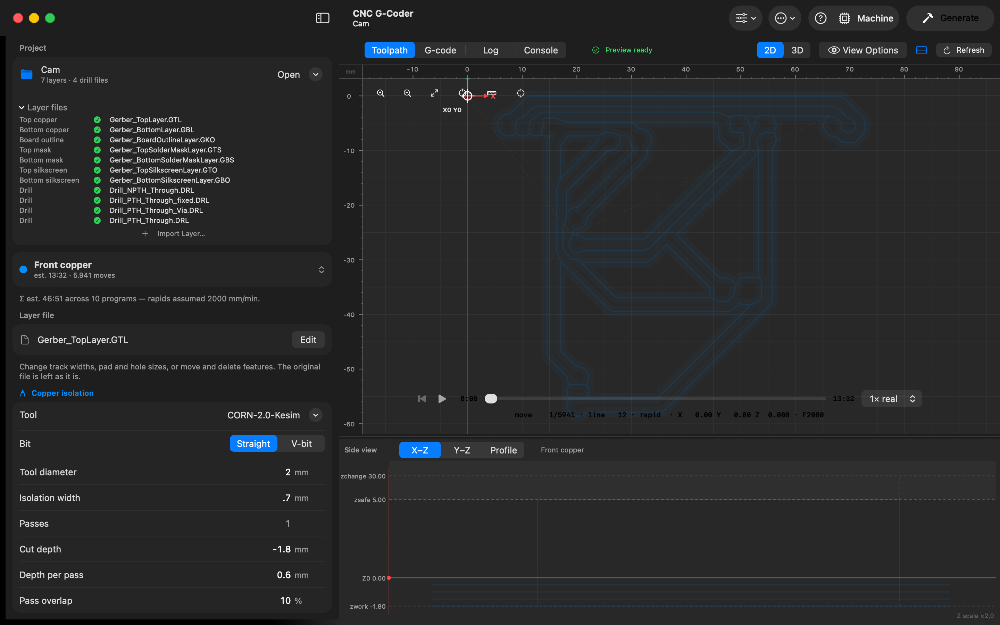
- Export Gerber + drill files from EasyEDA or KiCad into a folder.
- Choose Folder (toolbar) — layers are auto-detected by filename.
- Set your tools, depths and feeds (or load a Preset). The sidebar shows the settings for the selected program only — the layer menu at its top switches both the preview and the settings; pick Machine setup there for the parameters shared by every program.
- Inspect the preview: select each program, play it back, check depths in the side view and the total time estimate.
- Generate — pick (or create with New Folder) the destination folder; all
.ngcprograms are written there. - Machine in order: front copper isolation → drills (one program per drill file; change bits at the M0 pauses) → flip the board → back copper → outline cutout (bridges hold the board) → snap/file the bridge tabs.
- Solder mask: paint the milled board with UV solder mask, cure it, then run
top-mask-etch.ngc/bottom-mask-etch.ngcto mill the pad openings clear.
Using a laser engraver instead of (or next to) the mill: every program can also be exported as 1:1 artwork (SVG, PDF or PNG) — see Laser engraving & artwork export.
Getting started
Project folder & detection
How EasyEDA and KiCad exports are recognised, and what Generate writes where.
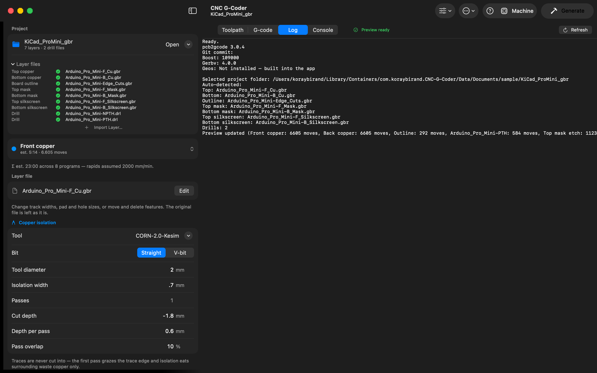
EasyEDA exports are recognised by extension: Gerber_TopLayer.GTL, Gerber_BottomLayer.GBL, Gerber_BoardOutlineLayer.GKO, solder masks .GTS/.GBS, silkscreens .GTO/.GBO and .DRL drill files. EasyEDA splits drills into PTH / PTH-via / NPTH files; each becomes a separate program because pcb2gcode accepts one drill file per run.
KiCad exports are recognised by KiCad's layer names: board-F_Cu.gbr / board-B_Cu.gbr (copper), board-Edge_Cuts.gbr (outline), board-F_Mask.gbr / board-B_Mask.gbr, board-F_Silkscreen.gbr / board-B_Silkscreen.gbr, and board.drl or board-PTH.drl + board-NPTH.drl. Paste, fab, courtyard, inner-copper, drill-map and job files are ignored. In KiCad's drill dialog choose the Excellon format (not Gerber X2), and use the same origin setting in the plot and drill dialogs (both "drill/place file origin" or neither), otherwise the drills land offset from the copper. Exports made with "Use Protel filename extensions" work too.
Note
Generate asks where to write the programs (the dialog's New Folder button creates a fresh destination); the choice is remembered until you switch projects. The live preview uses a temporary folder and never touches your files until you press Generate.
Getting started
Tools & V-bits — read this first
Why every diameter must be the effective cutting diameter at depth.
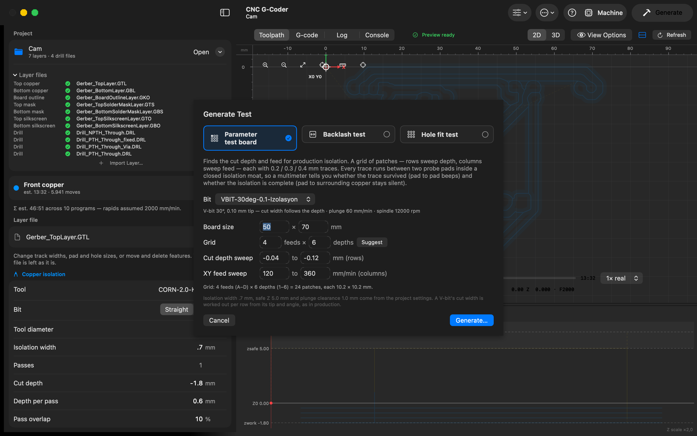
Important
Every diameter you enter must be the effective cutting diameter at depth, with the exact bit you machine with.
- Straight/end-mill bits: effective = printed diameter, enter as-is.
- V-bits (the usual isolation choice — 0.1 mm straight bits snap easily): the cone widens with depth:
effective ≈ tip + 2 × |cut depth| × tan(half-angle)
For a 0.1 mm tip at −0.06 mm: 30° V ≈ 0.13 mm · 60° V ≈ 0.17 mm · 90° V ≈ 0.22 mm.
Entering the tip size instead makes every trace thinner than designed and the isolation narrower than requested — silently. - Verification: mill a test board (File → Generate Test Board…) and measure the 0.2 mm test trace. If it measures ~0.13 mm with a 60° V-bit entered as 0.1, your effective diameter is ~0.07 mm larger than entered — fix the parameter, not the design.
- V-bit mode: set Bit → V-bit on isolation, mask or silkscreen and enter tip and angle instead; the width at depth is worked out (and follows the cut depth) for you.
Getting started
Test boards
Three small boards that measure your setup: parameters, backlash, hole fit.
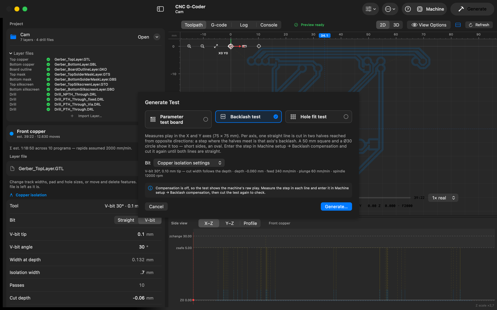
File → Generate Test Board… (⇧⌘T) cuts a small board that answers one question about your setup. Each test has its own bit (Bit, from the Tool Library; remembered per test — the default is the copper isolation bit, for the hole test the hole-milling bit) and its own settings; safe Z, plunge clearance and the isolation width come from the project. The result is written as a .ngc next to a legend .txt and shown in the preview like any program, so it can be played back and sent to the machine.
- Parameter test board — finds the cut depth and feed for production isolation. A grid of patches: rows sweep the cut depth (from … to), columns sweep the XY feed; each patch has 0.2 / 0.3 / 0.4 mm traces. Every trace runs between two probe pads inside a closed isolation moat, so a multimeter in continuity mode tells you whether the trace survived (pad to pad beeps) and whether the isolation is complete (pad to the surrounding copper stays silent). Board size and Grid (feeds × depths) set the layout; Suggest picks a grid for the board size. The legend maps each patch to its depth and feed.
- Backlash test — measures play in X and Y on a 75 × 75 mm board. Per axis, one straight line is cut in two halves reached from opposite directions: a step where the halves meet is that axis's backlash. A 50 mm square and a Ø30 circle show it too — short sides, an oval. Enter the step in Machine setup → Backlash compensation and cut the test again until both lines are straight (see Backlash compensation).
- Hole fit test — finds the hole size that fits a pin. Each hole size you list (rows) is milled in several variants (columns: the size plus a clearance in mm), the way production mills holes — a spiral down from the surface, then a clean-up circle. Push the pin into each hole of its row and keep the variant that fits the way you want; design the hole at that size. Mill it with the same bit as the real board.
Projects & layers
Projects
The .cncproj package, opening, saving and importing layers.
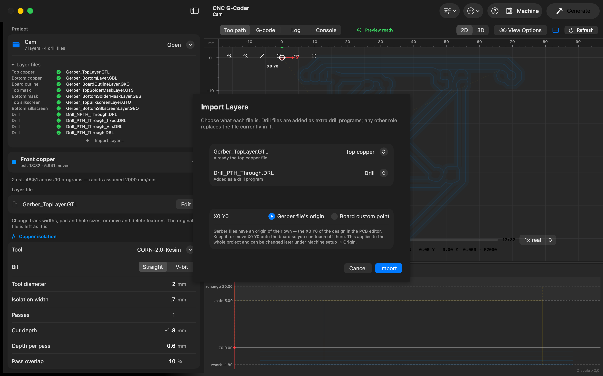
A project (.cncproj) is a self-contained package: Finder shows it as one file, but right-click → Show Package Contents reveals
Board.cncproj/
project.json parameters (tools, depths, feeds, origin…), layer roles, guides, where each file came from
Layers/ the Gerber and drill files themselves, unchangedMove or copy the project on its own — it never loses its layers. (To email one, compress it first; Mail does this automatically.) When a project is opened its files are copied into a private working folder, so the originals are not needed and are never modified.
- File → New Project (⌘N), Open Project… (⌘O), Open Recent, Save Project (⌘S), Save Project As… (⇧⌘S). The same actions are in the sidebar's Open menu. The window title shows the project and "Edited" when it has unsaved changes; New, Open and Quit ask before discarding them.
- Open Gerber Folder… (⇧⌘O) starts an untitled project from an EasyEDA or KiCad export folder, detecting the layers by filename, as before.
- The packed copies are what the project uses. If you re-export the Gerbers from your PCB editor, bring them in with Import Layer… or Replace… (or open the new export folder), then save. Show Original in Finder on a layer points at the file it was packed from, if it still exists.
- Projects saved by earlier versions (a single file with the layers embedded, or with links to them) still open, and become a package on their next save.
- Finder shows the package as one file once the app has been run (that registers the project type); before that it appears as a folder named
….cncproj. - Opening a project replaces the current parameters with the project's.
Importing single layers
File → Import Layer… (⌘I), or Import Layer… under Layer files in the sidebar, adds Gerber or Excellon files from anywhere. Each file's role is guessed from its name (and drill files from their M48 header, whatever they are called) and can be changed in the import sheet before importing: a drill file is added as another drill program; any other role replaces the file in that slot. Right-click a layer file in the sidebar to Replace…, Remove or Show in Finder.
Projects & layers
Custom layers — drawing your own shapes
Draw lines, shapes and text and machine them like any other layer.
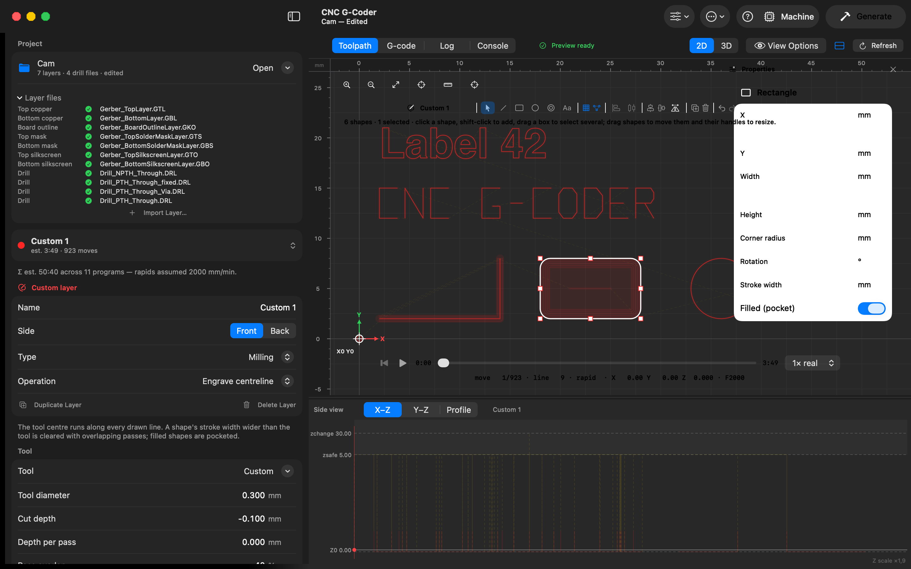
File → New Custom Layer (⇧⌘N, also in the sidebar's layer menu) adds a layer you draw on: lines and polygons, rectangles (with corner radius and rotation), circles, and text — in the built-in single-stroke engraving font or any installed font, engraved along its outlines. Every non-empty layer becomes one program, written by Generate and the CNC export like any other, and shown in the preview as it regenerates after each edit.
Drawing. With the layer selected, a bar appears over the preview with the tools — Select (V), Line (L), Rectangle (R), Circle (C), Text (T). Click or drag to draw; double-click or Return finishes a line, clicking its first point closes it into a polygon; Shift constrains to 45° and makes squares. Points snap to the grid (Snap to Grid), to guides, and to other shapes' corners, vertices, centres and quadrants (Snap to Objects); a green ring shows the snap. Right- or middle-drag pans (Option-drag too), scroll zooms as usual. The other programs show behind the drawing only with All Layers Overlay on (View Options).
Editing. Click to select, shift-click to add, drag a box (rightwards: enclosed shapes, leftwards: touched shapes). Drag shapes to move them — they snap to each other — or drag the handles to resize rectangles and circles and to move a line's vertices. Arrow keys nudge by 0.1 mm (Shift: 1 mm), ⌘D duplicates, Delete deletes, ⌘Z undoes everything. The sidebar lists the shapes; selecting one opens a floating Properties panel at the right of the drawing with its numbers — position, size, corner radius, rotation, text, font, stroke width — for exact values; with several selected, Align (edges and centres) and Distribute (equal gaps) line them up.
Machining. Each layer has one tool (from the library or typed in), a depth, depth per pass, feeds and spindle, and an operation. Engrave runs the tool centre along the drawn line; Cut outside / Cut inside offset closed shapes by half the tool so what you drew is the size that comes out (outside for a part you keep, inside for a hole). A shape's stroke width wider than the tool is cleared with overlapping passes; Filled pockets a closed shape inside-out. Shapes are drawn in design coordinates on the board, so they keep their place whatever origin you choose, and a Back-side layer is mirrored like back copper. Custom layers are saved in the project.
Projects & layers
Editing imported layers
Resize tracks, pads and holes in place without touching the originals.
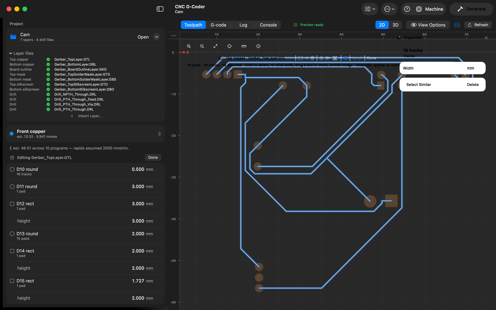
Any imported Gerber or drill file can be edited in place: select a program made from one and click Edit at the top of its settings, or right-click the file under Layer files → Edit…. The file's artwork (pads, tracks, filled areas or holes) is drawn over its program in the 2D view.
- Select: click, ⇧-click to add, drag a box (left-to-right encloses, right-to-left touches). ⌘A selects all; Select Similar (the wand) adds every track of the same width, pad of the same aperture or hole of the same size.
- Change sizes of the selection in the Properties panel: track width, pad diameter or width × height, hole diameter. Only the selected objects change.
- Change a size everywhere: while editing, the sidebar lists the file's apertures (Gerber) or drill tools (Excellon). Editing a row resizes everything that uses it, e.g. all 0.25 mm tracks at once. The target icon selects them.
- Move by dragging or with the arrow keys (0.1 mm, ⇧ 1 mm); Delete with ⌫. Values commit on Return.
Every edit writes an edited copy of the file; the original file is never modified. While editing, the sidebar shows only the file's sizes and pcb2gcode does not run — the toolpaths drawn under the artwork are the ones from before editing. Press Done (or Esc with nothing selected) and the preview regenerates once from the edited file. Edits are on the normal undo history (⌘Z), edited files are marked with an orange pencil, and saving the project packs the edited file. Custom-shaped (macro) pads and filled areas can be moved or deleted but not resized.
Projects & layers
Tool library
Every bit you own, with its cutting data, shared by all projects.
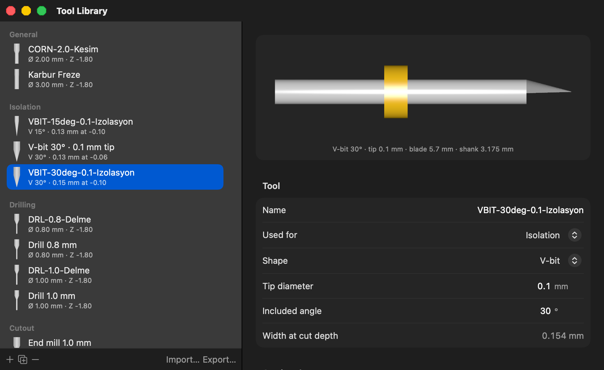
File → Tool Library… (⇧⌘L) holds every bit you own with the cutting data that goes with it: shape (straight / ball / V-bit), what it is used for, diameter or tip + angle, depth, depth per pass (drills: peck depth), feeds, spindle, pass overlap, and for drills the range of hole sizes it may drill.
- Import FlatCAM… reads a FlatCAM Tools Database export (Tools Database → Export, the JSON
.TXT). Tool Target maps to Used for (Isolation, Drilling, Milling/Cutout → Cutout, others → General); V shape keeps tip and angle; FlatCAM's drill tolerance becomes the hole range. Re-importing updates tools with the same name instead of duplicating them. - Every tool is drawn at its real proportions: a profile icon in the list, and a slowly turning 3D model (drag to turn it) with its key dimensions at the top of the editor — the same model the 3D preview uses.
- Import… / Export… move the library between computers: Export writes the whole library as a
.jsonfile; Import reads either such a file or a FlatCAM Tools Database. Tools already in the library (same tool, or same name) are updated, the rest added — so a project's "bits on hand" still match on the other machine. - Each settings group has a Tool menu at its top. Picking a tool copies its values into the group — as FlatCAM copies database data into an object — so you can still tune the layer. Edited appears when the fields no longer match the tool; click it to restore the tool's values. Custom means values entered by hand.
- Feeds or spindle of 0 (FlatCAM's "not set") leave the layer's own value unchanged.
Output
Toolpath engines
pcb2gcode or the native engine: what differs and what does not.
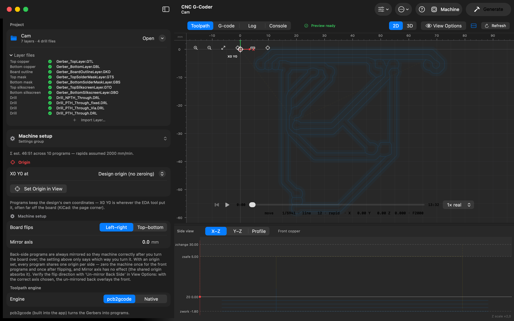
Machine setup → Toolpath engine picks what turns the Gerber and drill files into programs:
- pcb2gcode — the established open-source generator. It is built into the app (Contents/Helpers), so nothing has to be installed.
- Native — the app's own engine: it reads the files itself and computes isolation, board outline with tabs, drilling (with bits on hand), hole milling, solder-mask etch and silkscreen with the Clipper2 polygon library. It runs in the app, which makes it faster, and follows the same rules as pcb2gcode — passes spread evenly across the isolation width, the outline's centre line as the board edge, tabs on the longest edges.
Both write their programs the same way, so every setting (dwells, pecks, plunge clearance, extra cut, heights, origins) applies to either. Differences you may notice: the native engine splits depths exactly (1.8 mm in 0.6 mm passes is 3 passes; pcb2gcode makes it 4 of 0.45 mm) and orders paths by nearest neighbour.
Output
Generating programs
The Generate dialog, the destination folder and the files it writes.
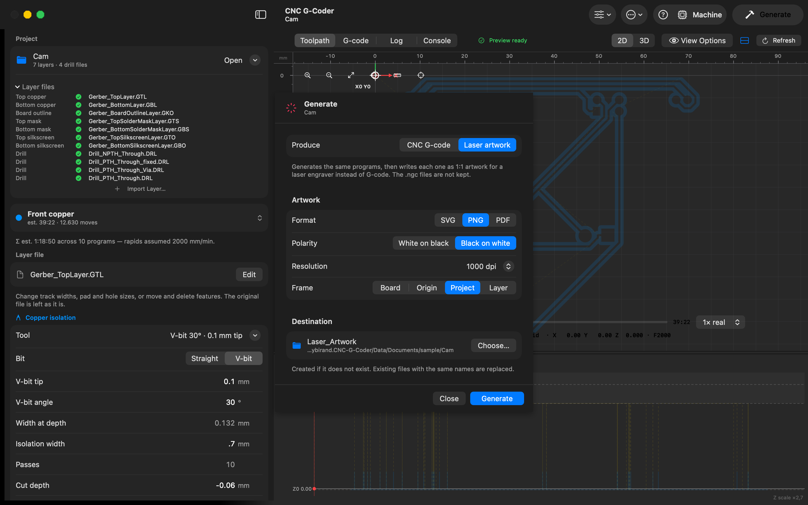
Generate (toolbar, or the Generate button in the sidebar) opens the Generate dialog.
- Produce — CNC G-code generates the toolpaths with the current parameters and writes the
.ngcprograms, exactly the files the preview is showing. Laser artwork generates the same programs, then writes each one as 1:1 artwork for a laser engraver instead of G-code (the.ngcfiles are not kept); its Format, Polarity, Resolution and Frame options are the ones described under Laser engraving & artwork export. - Destination — the folder the files go to; Choose… opens the folder picker (its New Folder button creates a fresh one). The folder is created if it does not exist, and existing files with the same names are replaced. The suggestion is
Generated_GCodenext to the project; the choice is remembered until you switch projects. - While it runs the dialog lists the stages (front copper, back copper, outline, one per drill file, masks, silkscreen, custom layers) with their state; Cancel Run stops after the stage that is currently running. When it is done, Open Folder reveals the output in Finder, and the Log tab has the full output with per-stage timings.
Output files. front-copper.ngc, back-copper.ngc, outline.ngc, one <drill file>.ngc per drill file (plus <drill file>-milled.ngc when Mill large holes is on), top-mask-etch.ngc / bottom-mask-etch.ngc, top-silkscreen.ngc / bottom-silkscreen.ngc, and one program per custom layer. Back-side programs are mirrored and ready to run after the flip; all programs share the origin chosen in Machine setup. Backlash compensation (Machine setup) is applied to these files as they are written.
The More menu (… in the toolbar): Open Output Folder reveals the last destination; Copy pcb2gcode Command puts the exact command line the app ran on the clipboard, for running pcb2gcode yourself or for a bug report; New Custom Layer and Generate Test Board… are the same as in the File menu.
Output
Exporting one program
Save a single program exactly as previewed.
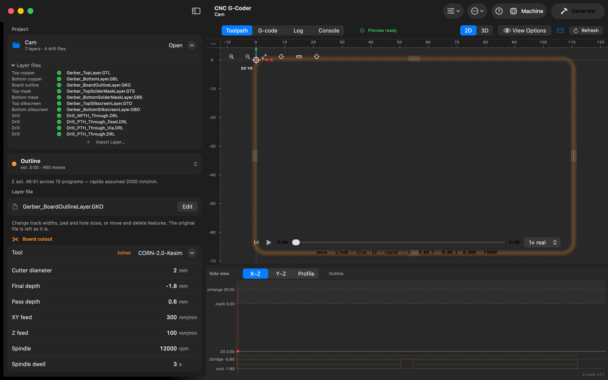
With a layer selected, CNC export → Export <name>.ngc… in the sidebar saves just that program — exactly the previewed G-code, with the same post-processing and origin Generate would write. It is available once the preview is up to date. The "X0 Y0 at" link beside it jumps to the origin setting.
Output
Laser engraving & artwork export
Export any program as 1:1 SVG, PDF or PNG artwork for a laser engraver.
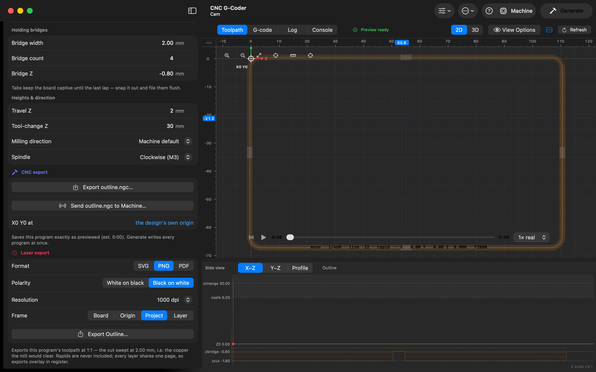
Every program the app generates — copper isolation, outline, drills, mask openings, silkscreen, custom layers — can be exported as artwork at the board's true physical size for a laser engraver: as vector paths (SVG, PDF) a laser can follow, or as a bitmap (PNG). Typical uses: exposing a paint or film resist on the copper for chemical etching, burning the mask openings clear after the mask has cured, and engraving the silkscreen legend.
Where. With a program selected, the Laser export section at the bottom of the sidebar exports that one program (Export <name>…). To export all programs at once, use Generate → Produce: Laser artwork, which writes one file per program into the destination folder instead of G-code. The options are the same in both places and are remembered.
- Format — SVG and PDF stay vector: the toolpath as paths. PNG is a bitmap at the chosen Resolution (300, 600, 1000 or 2400 dpi); the dpi is written into the file so laser software places it at its real size. 1000 dpi resolves a 0.15 mm trace across about 6 pixels. All three come out at the board's true size.
- Polarity — White on black: the cut is white on a black field. Black on white: the inverse. The background is drawn into the file, so the polarity survives import into any laser program.
- Frame — what the page spans. Board: the finished board — the cutout path pulled in by half the cutter, so a 70 × 30 mm board gives a 70 × 30 mm page you can align to the physical PCB. Origin: from X0/Y0 out to the far corner of every program, so placing the file at 0,0 puts it exactly where the mill would cut. Project: that same shared page, cropped to the programs. Layer: this program's own extent only.
- Tool width — with Tool Width on in View Options, the toolpath is swept at the cutter diameter, i.e. the copper the mill would clear; off, it is exported as bare centrelines. Rapids are never included.
Mask openings for ablation. Solder mask → Output: Laser SVGs skips the mask milling programs and instead exports the opening shapes themselves (pads and vias) as 1:1 SVGs through gerbv, ready to burn the cured mask away where parts are soldered.
Silkscreen. Silkscreen → Output: Engrave makes the legend a program (and so exportable as artwork); with Output off the layer is ignored.
What you do with the artwork is your own process; the app does not generate laser G-code or set laser power. Align the file by the Frame you chose: Board to the physical board edge, Origin to the same X0 Y0 you zero the mill at.
Parameters
Parameters
Isolation, drilling, cutout, safety heights, solder-mask and silkscreen settings.
Copper isolation
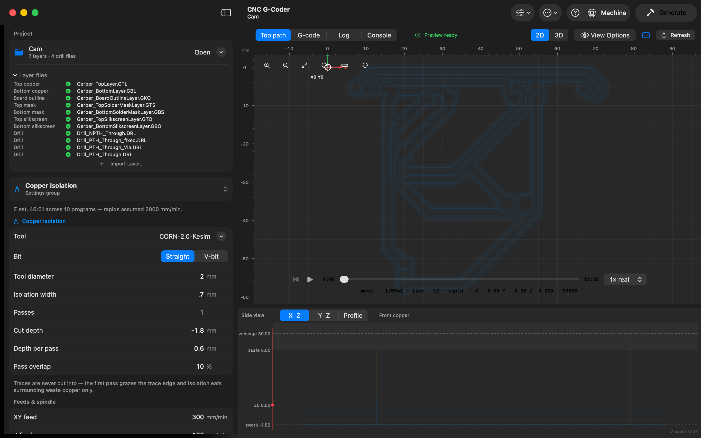
- Tool diameter — the effective diameter at cutting depth (see "Tools & V-bits" above), or pick V-bit and enter tip + angle.
- Isolation width — total copper cleared around each trace; machining time grows almost linearly with it. 2–3× tool diameter is a good start.
- Cut depth — copper foil is ~0.035 mm; −0.05…−0.08 mm cuts through with margin. Deeper widens V-bit cuts and thins traces.
- Depth per pass — reach the cut depth in several equal passes of at most this depth. 0 = one pass.
- Pass overlap — overlap between neighbouring isolation passes (default 50%).
- Traces are never cut into: the first pass is offset outward, isolation eats surrounding waste copper only.
Drilling & cutout
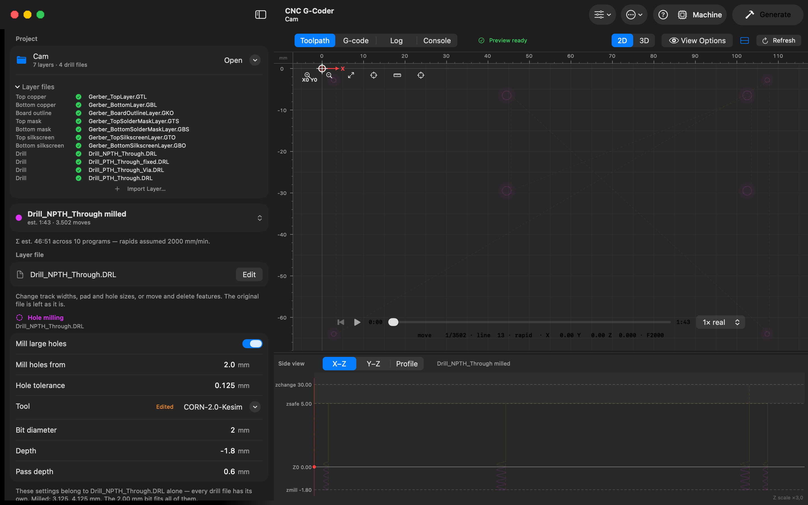
- Every drill file has its own settings. Select a drill program (or its
… milledprogram) and the Drilling, Bits on hand, Hole milling and Heights & direction groups show that file's values — the header names the file. Turning on Mill large holes for the NPTH file, or giving the via file a shallower depth, changes nothing for the other drill files. A file added to the project starts from the drilling defaults (shown when no drill program is selected) and keeps its own values from then on; they are saved in the project with the file. Applying a preset puts every drill file on the preset's values. - Depths = board thickness + ~0.2 mm into the spoilboard (1.6 mm stock → −1.8).
- Peck depth — drill in pecks: after each one the bit rapids out to clear chips, returns to just above the previous bottom and feeds on. 0 = one stroke.
- Bits on hand — check the library drills you own. Every hole inside a checked bit's range is drilled with that bit, so a job needs only those bits (a 0.915 mm hole goes to the 1.0 mm bit). Bits without a range of their own use Bit tolerance (± around the bit). Holes no bit covers keep their designed size and the Log names them — ranges are always passed, because without them pcb2gcode would round every hole to the nearest bit (a 3 mm mounting hole silently drilled at 1 mm).
- Hole milling — for holes bigger than any drill you own (e.g. 3–4 mm mounting holes with a 2 mm 2-flute corn bit). Turn on Mill large holes; holes from Mill holes from up are not drilled but cut in circles, spiralling down (helical G2 moves), into a separate
… milledprogram run right after its drill program. The hole-milling bit has its own Tool menu (cutout and general tools from the library), diameter, depth, pass depth (per turn of the spiral), feeds, spindle and dwell. The circle is offset inward by half the bit, so holes come out at their designed size; the bit must be smaller than the smallest milled hole. - The cutout runs laps of Pass depth; time = laps × perimeter ÷ feed.
- Bridges: on passes deeper than Bridge Z the cutter lifts and leaves holding tabs (white in the preview) so the board can't break loose on the final lap. Tab thickness = board bottom − Bridge Z. Snap and file after machining.
Safety heights & plunge clearance
- Safe Z — travel height between cuts; must clear clamps and board warp.
- Plunge clearance — vertical moves are rapid through the air and feed only below this height: descents rapid down to it then plunge at the Z feed; retracts feed up to it then rapid. This often halves program time (pcb2gcode alone feeds the whole descent — and drill retracts too). 0.2–0.5 mm typical; must clear board warp; 0 disables. The bit always enters and leaves the material at the programmed feed.
- Milling direction (Machine setup) — Any lets pcb2gcode choose the shortest path; Climb or Conventional fixes it for every milling program (this turns off 2-opt path shortening, so programs get slightly longer).
- Rapid feed (Machine setup) — your machine's G0 speed, used only for the time estimates (FlatCAM's FR Rapids).
- Heights & direction (every layer; also stored per tool and imported from FlatCAM) — the layer's own Travel Z and Tool-change Z (the height for the tool-change pause and the end of the program; FlatCAM's Tool-change Z / End Z), left empty to use Machine setup's values, which show greyed in the field; Extra cut (isolation, mask, silkscreen and custom layers) — every closed contour runs on past its start by this length so no sliver is left where the loop closes; where pcb2gcode chains passes into one cut, the tool then retraces back along the groove, so only already-cut copper is cut again; Milling direction — Machine default or this layer's own; Spindle — clockwise (M3) or counter-clockwise (M4). Hole milling uses the drilling heights (it runs in the same pass).
- Spindle dwell (every layer, next to its spindle speed; also stored per tool in the library and imported from FlatCAM's dwell) — pause after the spindle starts, so it is at speed before cutting, and after it stops, before a tool change. 0 = no pause. pcb2gcode writes dwells in milliseconds (
G04 P2000), but GRBL and LinuxCNC read seconds, so the app writes each program's dwell in seconds (G04 P2.000). Machines configured for millisecond dwells (some Mach3 setups) need the value ×1000.
Solder mask etch
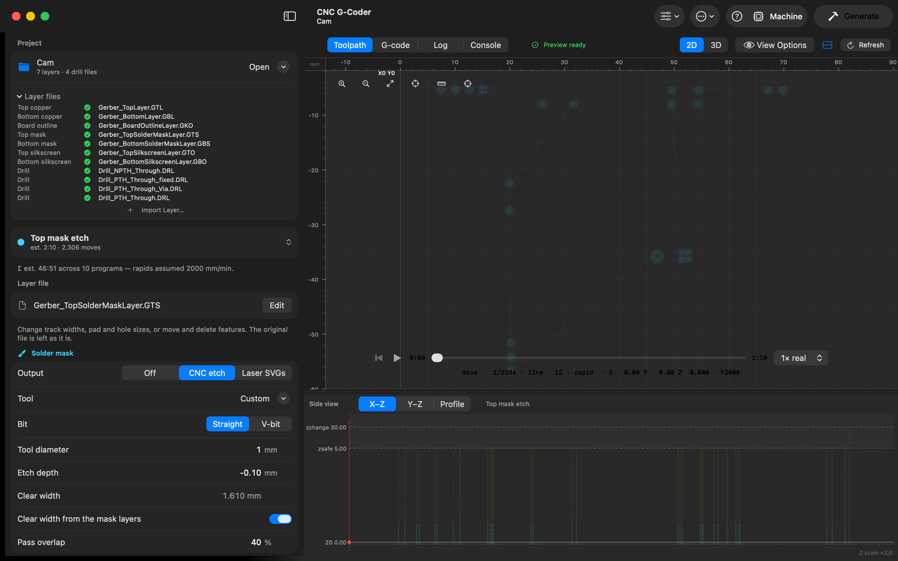
The .GTS/.GBS layers describe the openings (pads/vias that stay exposed). CNC etch mode inverts the layer and pockets each opening with 40% overlapping passes → top-mask-etch.ngc / bottom-mask-etch.ngc.
- Mask tool must be no larger than the smallest opening (smaller ones are skipped — watch the Log).
- Clear width — how far inward each opening is pocketed. By default (Clear width from the mask layers on) the app measures the widest opening in the mask files and clears by half of it plus a little, so every opening is cleared to its centre and no wider; the footer shows the widest opening. Switched off, enter it yourself: it must be ≥ half the widest opening or the middle of large openings stays covered, and larger values slow generation dramatically.
- Etch depth only needs to remove cured paint, not copper.
Silkscreen engraving
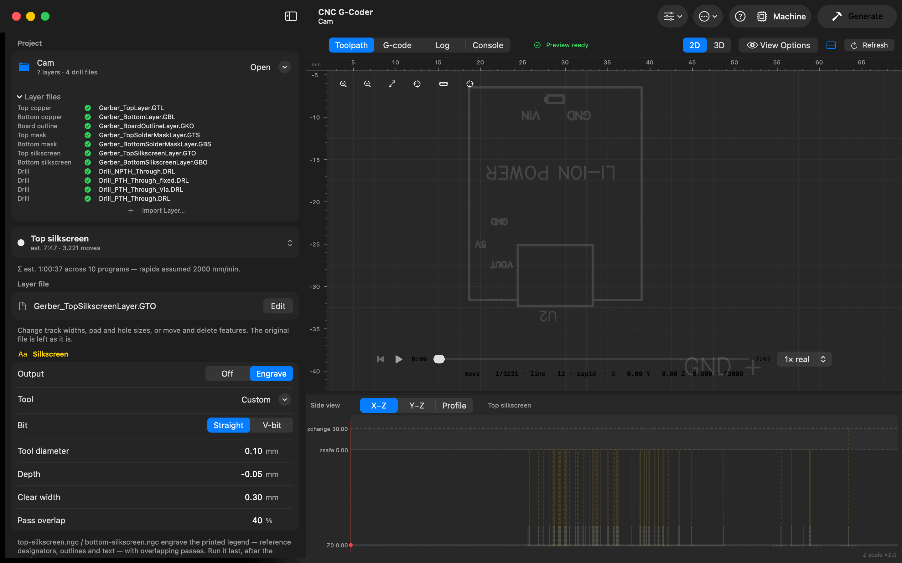
Silkscreen layers are off by default (engraving them costs generation and machining time). Output: Engrave mills the legend strokes themselves — reference designators, outlines and text — so they end up cut into the board: top-silkscreen.ngc / bottom-silkscreen.ngc, run last, after the mask. The section has its own tool (straight or V-bit), depth, Clear width (strokes wider than the tool are cleared with overlapping passes), pass overlap, feeds and spindle. Either way the layer can be exported to a laser once a program exists.
Feeds, spindle and per-layer heights
Every settings group ends with Feeds & spindle — XY feed, Z (plunge) feed, spindle speed and spindle dwell — and Heights & direction (Travel Z, Tool-change Z, Extra cut, Milling direction, Spindle direction), described under Safety heights & plunge clearance. Picking a tool from the Tool menu copies the library's values into the group; Edited appears when the fields no longer match the tool.
Preview
Preview
The 2D and 3D views, the View Options and what their colours mean.
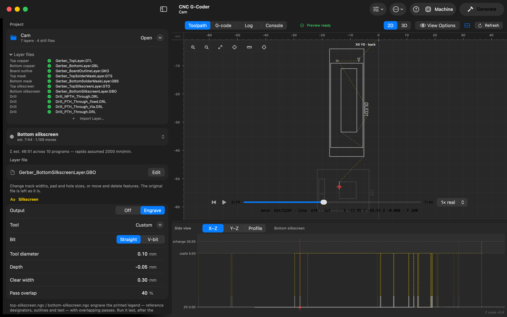
3D view
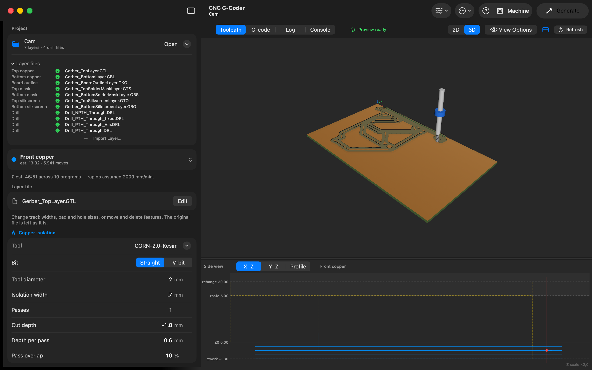
The 2D / 3D switch above the preview shows the programs in 3D: cuts as lines in each layer's colour, head travel in faint yellow above the board, and a translucent 1.6 mm FR4 slab sized from the cutout. Drag to orbit, right-drag or middle-drag (mouse wheel button) to pan, and scroll (mouse wheel or two-finger trackpad scroll) or pinch to zoom.
- Gizmo (top right): the X/Y/Z balls turn with the view; click one to look along that axis — Z = top, −Z = bottom, −Y = front, Y = back, X = right, −X = left. Below it: a menu of all standard views, Iso, Fit, perspective/orthographic, and travel moves on/off.
- With All Layers Overlay on, every program sits on the physical board: back-side programs appear un-mirrored on the underside, so you can orbit round to inspect the back. A single program is shown as it is machined.
- Playback works as in 2D: the finished part of the program is highlighted, and the bit that cuts the program follows the tool at real size — the V-bit's cone at its angle and tip, the end mill's or hole mill's diameter, a drill with its 118° point, all on a 1/8″ (3.175 mm), 38 mm shank with the coloured depth ring PCB bits carry (yellow V-bit, blue end mill, red drill, purple ball nose). It spins clockwise while the program plays.
- One program is shown at a time (layer menu at the top of the sidebar). All programs share one origin per side, so the "All Layers Overlay" registers copper, drills and masks exactly; enable "Un-mirror Back Side" to overlay the mirrored back side aligned with the front.
- Colors: per-layer colors for cuts; yellow dashed = head travel (no cutting); white = holding bridges; the translucent band under cuts is the real cutter width ("Tool Width" in the View Options menu).
- Un-mirror Back Side (View Options menu) un-mirrors back-side programs for visual alignment checks — display only; the G-code stays mirrored and CNC-ready. Off, the back correctly sits mirrored against the front.
View Options
The View Options menu above the preview toggles what the views draw: Tool Width (the translucent band at the real cutter diameter; also decides whether a laser export is swept or centrelines), Rulers, Guides and Clear Guides, Snap to Grid (⌘'), All Layers Overlay, Un-mirror Back Side, Height Map with its exaggeration (×1 … ×50), Toolpath Lines, Drill Holes (the holes as cylinders in 3D), Material Removal (the cut channels and copper mask in 3D), Machine Travel (the connected machine's travel area, dashed) and Fit Machine Travel.
Guides. With Rulers and Guides on, drag out of a ruler into the view to pull a guide line; drag a guide to move it. Guides snap drawing, measuring and the origin marker, and are saved with the project. Clear Guides removes them all.
Canvas buttons (top left of the 2D view): zoom in, zoom out, fit (double-click does the same), set the origin by clicking, the tape measure, and centre on the origin.
Preview
Playback & estimates
Feed-rate-accurate simulation and the time estimates.
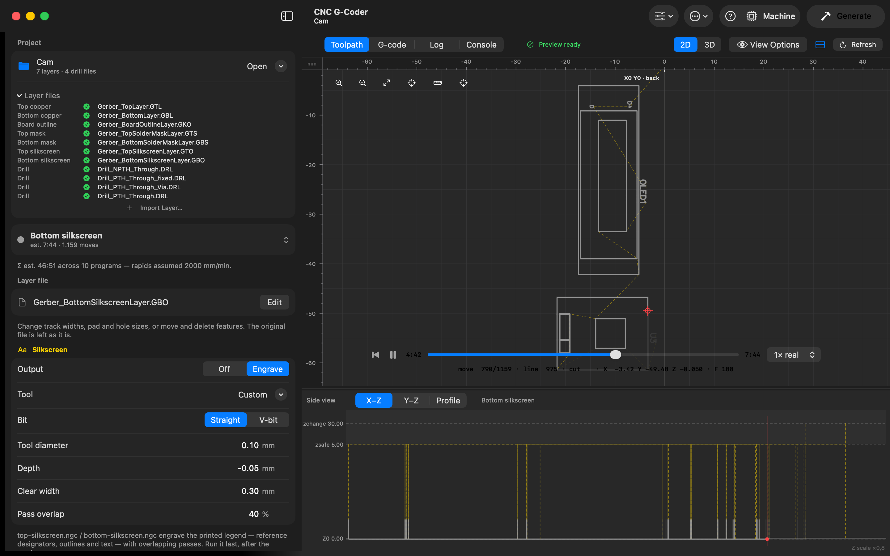
Feed-rate-accurate simulation via the floating player bar: each move takes length ÷ programmed feed. 1× real = 100% machining speed; the tool marker glides along every move including rapids. The G-code tab highlights the current source line. Per-program times are in the sidebar layer menu; Σ est. below it is the total. Rapids are assumed at 2000 mm/min (G-code carries no rapid feed).
Preview
Side view
Depth checks in the X–Z, Y–Z and profile projections.
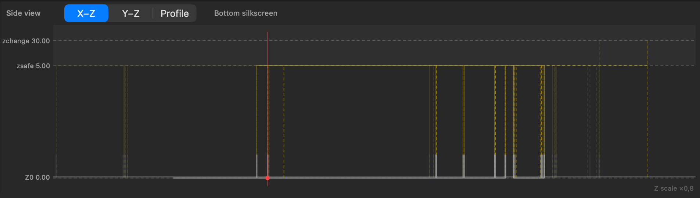
X–Z / Y–Z projections or a Z-vs-distance Profile, with labeled reference lines (Z0, zwork, zdrill, zcut, zbridge, zsafe). Z is exaggerated (the ×N note shows how much); travel above zsafe is compressed into a thin top band so retracts stay visible.
Preview
View controls
Zoom, pan and fit.
Scroll wheel / pinch = zoom (anchored at cursor) · drag = pan · double-click / fit button = reset. Zoom and pan survive layer switches; panel divider positions and all parameters persist across launches.
Preview
Measuring & undo
The tape measure and the app-wide undo history.
Measure. the ruler button at the top right of the 2D view (or M while the view has focus) turns on the tape measure, on any layer. Click two points — or drag between them — to read the distance, ΔX, ΔY and angle. It snaps to toolpath corners, drill holes, drawn shapes, the origin, guides and (with Snap to Grid) the grid; Shift keeps the line horizontal, vertical or at 45°. Esc clears the measurement, then leaves the tool.
Undo. Edit → Undo / Redo (⌘Z / ⇧⌘Z) step through one history for the whole app — parameter edits, tools and presets being applied, the origin being moved, layer files imported, replaced or removed, and every drawing edit. Opening another project starts a new history.
Preview
G-code, Log and Console tabs
The program text, the generation log and the machine console.
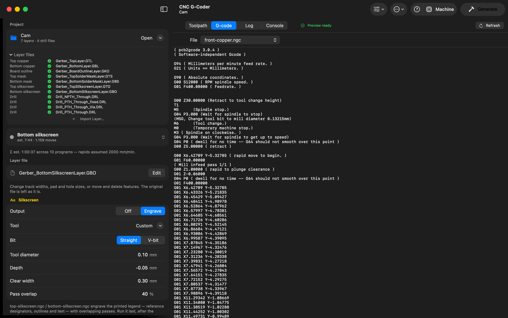
The tabs above the preview switch the main area:
- Toolpath — the 2D/3D preview described above.
- G-code — the text of the selected program (the File menu at the top picks any generated program). During playback and while a program is streamed, the current line is highlighted and kept in view. Files over 8 MB show their first 8 MB.
- Log — everything pcb2gcode and the native engine printed, one step at a time with timings; warnings start with
WARNING:, failures withERROR:and the error is at the bottom. The pcb2gcode version and the auto-detected files are logged when a project opens. When a preview fails, the preview pane offers Show Log and Try Again. - Console — the machine console: every line sent to and received from the controller. Show status reports includes the
?polls and<…>reports (several per second — useful for diagnosing, noisy otherwise); Clear empties the view. The command field sends a line as typed on Return ($G,G0 X10,$/axes/x/max_travel_mm…); a single character such as!,~or?is sent as a real-time byte; ↑ and ↓ recall earlier commands. The field is locked while a program runs.
Preview
Presets & settings
Saved parameter sets and both Settings panes.
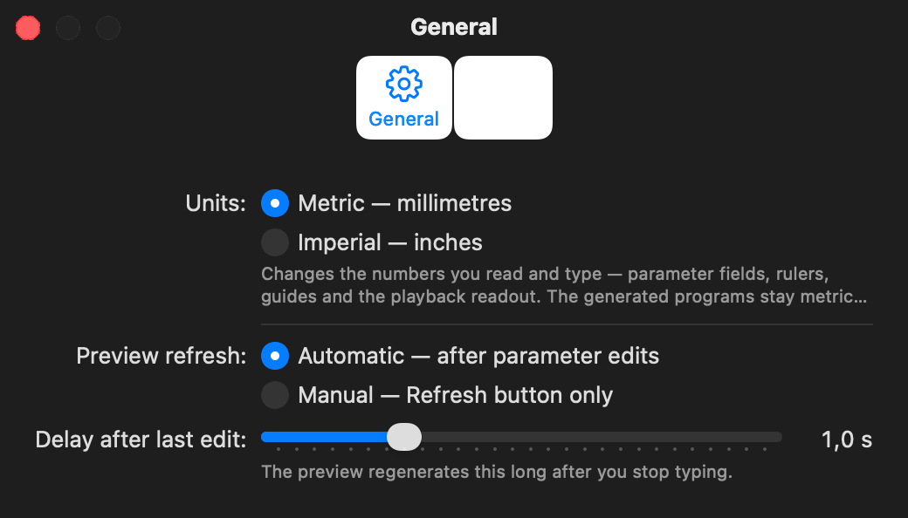
Presets (toolbar) save and recall complete parameter sets — tools, feeds, depths, heights, origin — useful per material or per machine. Save Current as Preset… names the current values; picking a preset applies it (and puts every drill file on the preset's drilling settings); Delete Preset removes one. Applying a preset is undoable.
Settings (⌘,) has two panes:
General
- Language — System (follows macOS) or English, French, Spanish, Turkish, for the interface and the built-in guide. Takes effect at the next launch. The guide window also has its own language menu.
- Units — Metric (millimetres) or Imperial (inches). Changes the numbers you read and type: parameter fields, rulers, guides and the playback readout. The generated programs always stay metric (
G21). - Preview refresh — Automatic regenerates the preview after parameter edits, once you stop typing for the Delay after last edit; Manual only on the Refresh button. The "Out of date" badge marks a stale preview either way.
Machine
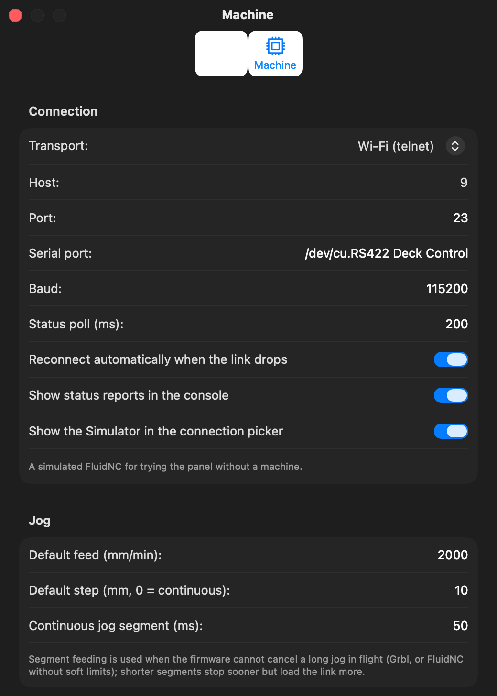
- Connection — Transport (Wi‑Fi telnet for FluidNC, USB serial for any Grbl-type controller, or the built-in Simulator), Host and Port, Serial port and Baud (115200), Status poll interval (200 ms = 5 reports a second), Reconnect automatically when the link drops, Show status reports in the console, Show the Simulator in the connection picker.
- Jog — the feed and step the panel starts with, and the segment length for continuous jogging on firmware that cannot cancel a long jog.
- Z probe — fast and slow feeds, maximum travel, retract, plate thickness (the same values as on the Probe tab).
- Motion — safe work Z for Go to Work Zero, Safe Z below the top of travel (also the parked height for tool changes), spindle minimum and maximum for the panel's Spindle button, spindle warm-up before resuming.
- Programs — Apply backlash compensation when sending, Confirm before continuing after a tool change, Save the work zero when a program is sent (a Work entry in the Positions tab named after the program and the time; the newest 20 automatic entries are kept), the stream window (how many unacknowledged bytes stay in flight; 0 = automatic: 128 on USB serial, 512 over Wi‑Fi, or the receive buffer the controller reports — raise it when arcs and round corners run slower than the feed over Wi‑Fi, keep a Grbl board on USB at 128), the Z below which the height map applies.
- Axis calibration (steps/mm) — see Axis calibration under Machine panel.
Machine
Machine zeroing & double-sided work
Where X0 Y0 is on the board and how both sides stay registered.
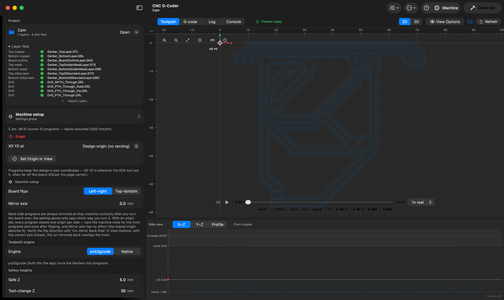
Machine setup → Origin → "X0 Y0 at" decides where the machine origin is on the board; every program shares it, one origin per side. The view marks it with a ringed crosshair and red X / green Y arrows (always framed by Fit).
- Corners / Centre — of the whole project (all programs' extent) as the machine sees each side: after flipping you touch off at the same corner of the fixture.
- Custom point — a point in design (Gerber/EasyEDA) coordinates, so tool sizes never move it. It is the same physical spot on both sides, e.g. a registration hole. Type Origin X / Y, or set it in the view (below).
- Moving it in the view — drag the origin marker to where X0 Y0 should be, or click Set Origin in View (Machine setup) / the scope button and click the spot. Both snap to the project's corners and centre (which set that corner mode) and to drill holes (a custom point). With Snap to Grid on (View Options, or View → Snap to Grid, ⌘'), any other drop lands on the grid shown in the view, so the origin moves in whole grid steps; zoom in for a finer grid.
- Design origin — no zeroing; coordinates exactly as exported.
Zero X/Y at the origin for the front-side programs (copper, drills, outline, top mask), then once more after flipping for the back-side programs — everything stays registered. Zero Z on the board surface. Choose the flip direction with Mirror around Y axis and verify with Flip Back View. Probing and height maps are done live from the Machine panel (below); the programs themselves stay plain G-code.
Machine
Backlash compensation
Compensate axis play in every program the app writes.
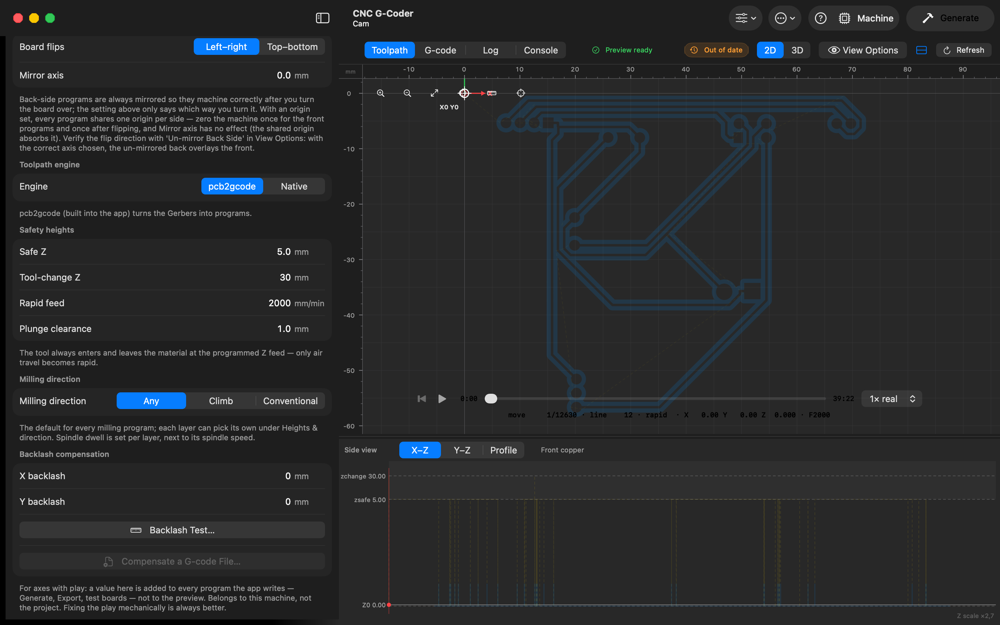
GRBL and FluidNC have no backlash setting, so the app can compensate for play in the X and Y axes itself. Machine setup → Backlash compensation holds the play per axis (measure it with the backlash test board). The values belong to the machine, not the project: they are app-wide and are not saved in .cncproj files.
- With a value set, every program the app writes — Generate, the CNC export, test boards — is rewritten: coordinates reached while moving in the negative direction are shifted by the play, a short take-up move of that axis alone is inserted wherever the axis reverses, arcs are split at their X/Y extremes, and the first rapid gets a lead-in from below. The preview and the G-code tab always show the uncompensated program.
- Compensate a G-code File… writes a compensated copy of a program made outside this app.
- When sending from the Machine panel, the Backlash compensation toggle on the Program tab (default from Settings → Machine → Apply backlash compensation when sending) rewrites the copy that is streamed; the files on disk are untouched.
- Programs with G91 (relative moves), G20 (inches), R-format arcs, G28/G53/G92 or canned cycles are left uncompensated, with a WARNING in the Log.
- Set the values back to 0 once the machine is repaired — fixing the play mechanically is always better.
Machine
Machine panel
The built-in GRBL / FluidNC sender: connect, jog, probe, send.
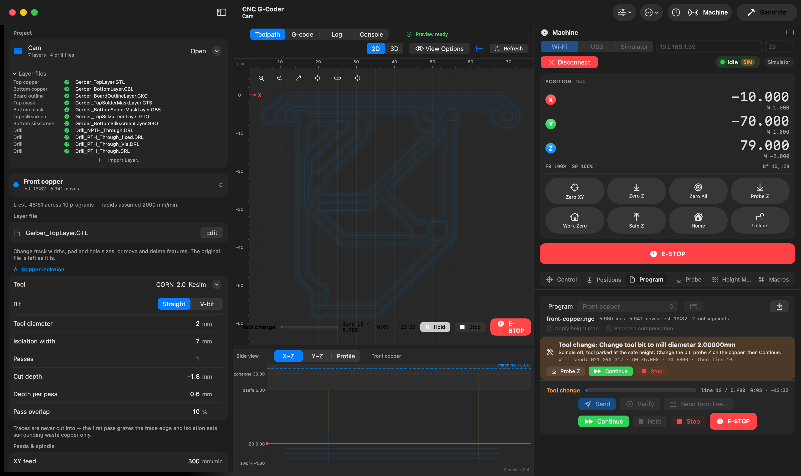
The Machine button in the toolbar (View → Machine Panel, ⇧⌘M) opens a panel on the right of the main window: a native sender for GRBL 1.1 and FluidNC controllers. The connection strip and the position read-out stay at the top; the tabs below (Control, Positions, Program, Probe, Height Map, Macros) scroll on their own; a red E-STOP under the read-out stays in view on every tab; the console is the main window's Console tab, and "Open in a window" at the top of the panel gives the same controls a window of their own with the program text.
Connecting
Pick Wi‑Fi (the controller's IP and telnet port, 23 by default) or USB (a /dev/cu.* port at 115200) and press Connect. The state pill shows Idle / Run / Jog / Hold / Alarm…, the badge the firmware the app identified ($I), and alarms appear decoded with Unlock / Home / Reset. Alarms that lose position (limits, a reset while moving) mark the position untrusted: Home, or press Unlock to keep the position as it is. The connection runs alongside other clients (a pendant on the same controller keeps working).
DRO, zeroing, positions
Work and machine coordinates, live feed and spindle, the planner buffer and triggered pins (P = probe input closed). Click an axis value to set or zero that axis; the button grid under it has Zero XY / Zero Z / Zero All (G10 L20 P0, persistent) and Probe Z (the two-pass touch-off of the Probe tab) on the first row, Work Zero (retracts to the safe work Z first), Safe Z (just below the top of Z travel), Home and Unlock on the second. The Positions tab keeps named machine positions; Go to coordinates… moves to a typed machine target (Z first when rising, last when descending). Save work zero stores where work X0 Y0 Z0 is in machine coordinates, and Use as zero on any entry re-establishes the work origin at that point (G10 L2 P0, no motion) — restore a zero after a reset or re-homing. User buttons on the Control tab run the macros of the Macros tab (one button per macro, optional SF Symbol icon; "allow while running" keeps a button enabled during a job, for short commands such as coolant). E-STOP (also at the end of the job bar, and ⇧⌘.) sends jog cancel, feed hold and soft reset at once without waiting for anything; the position is marked untrusted if the machine was moving. ⌘. stays the controlled stop.
Jogging and overrides
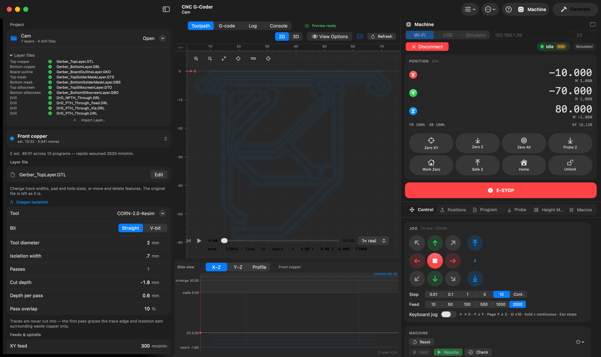
Tap a jog button for one step; press and hold for continuous motion that stops on release (on a homed FluidNC with soft limits the jog runs to the limit and is cancelled on release; otherwise short segments are streamed). Diagonal buttons move two axes. Keyboard jog: arrows = X/Y, Page Up/Down = Z, Shift = step ×10, Esc or ⌘. = stop. Overrides adjust feed (10–200 %, in steps of 1 and 10), rapid (25/50/100 %) and spindle speed in real time; the controller reports the value it is using.
Machine controls (Control tab): Reset (Ctrl‑X soft reset — stops everything; the position is lost if the machine was moving), Hold / Resume (feed hold, cycle start), Check ($C — G-code is parsed but nothing moves), Spindle on/off at the rpm beside it (clamped to the minimum and maximum in Settings → Machine), Coolant (M8/M9), and under More: Sleep, Safety Door, and the queries $G (parser state), $# (offsets) and $I (build info), whose answers appear in the Console.
Positions tab
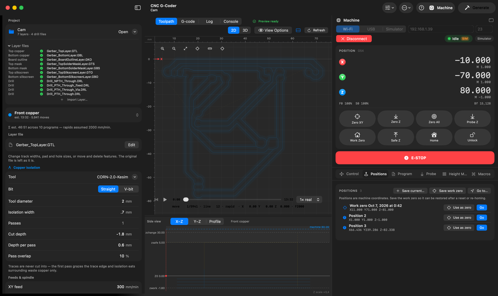
Named machine positions in two lists, chosen with the Machine / Work switch. Machine holds spots the spindle goes back to: Save current… stores the machine coordinates the spindle is at now, Go to… moves to a typed machine coordinate, and each entry has Go (Z moves first when rising, last when descending, at the jog feed). Work holds work zeros — where work X0 Y0 Z0 was, in machine coordinates: Save work zero stores the current one by hand, and with Save the work zero when a program is sent (Settings → Machine, on by default) every Send records one automatically, named after the program and the time ("Front copper – 8 Oct 14:07", clock icon). Use as zero on a Work entry makes that point the work origin again with G10 L2 — the machine does not move — so after a crash, a reset or re-homing the same zero is back without touching off again. Right-click an entry for Rename…, Overwrite with Current Position / Current Work Zero, Go There… / Use as Work Zero… of the other kind, and Delete. Macros can move to a saved position with @goto <name>.
Program tab — sending
Pick a generated layer (or use CNC export → Send … to Machine… in the sidebar), or Open .ngc file… for an external program (a test board, for example). Backlash and Apply height map transform the copy that is sent, never the files on disk; Save sent program… keeps that copy. Verify streams the program in check mode without motion. If the machine's travel cannot hold the program the job bar says so in full — for example that line 12 rises to a Z above the top of travel because work Z0 is near the top; when that is the only problem, Clamp Z to top re-prepares the program with those retract heights lowered to just below the top (cutting depths are untouched; an orange "Z clamped" badge shows while it is on) so an air test can run. Send streams it with character counting; the main window's canvases, side view, 3D view and G-code tab follow the job, a blue crosshair marks the machine's real position, and the job bar shows the line, elapsed and remaining time. Hold/Resume and the overrides stay live. Stop holds, resets once the machine is at a standstill, and turns the spindle off.
Tool changes (extra drill sizes) suspend the job before the change: spindle off, Z parked at the top, and a banner names the bit. Jog, Zero and Probe Z are enabled while suspended so you can touch off the new bit, then Continue, which resumes at once — the banner lists the preamble lines it will send (Settings → Machine → Confirm before continuing after a tool change brings back the confirmation sheet). Send from line… resumes mid-program with a safe preamble (retract, spindle, rapid over the point, plunge), always shown for confirmation. The app asks before switching projects, disconnecting or quitting while a job runs.
Probe tab
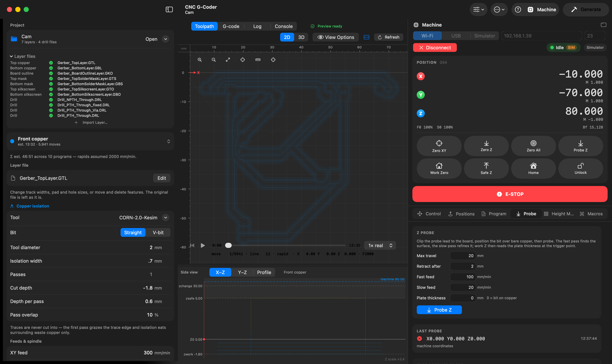
A two-pass Z touch-off: fast down to find contact, back off 1 mm, slow down for the exact point; the active work origin is then set on the contact point (G10 L20; the slow pass stops within a micron of the trigger) and read back from the controller — the DRO then reads the retract height, with Z0 on the surface. Plate thickness 0 = clip on the copper and the bit as probe; enter the thickness for a touch plate. Settings → Machine holds the feeds, maximum travel and retract.
Axis calibration (steps/mm)
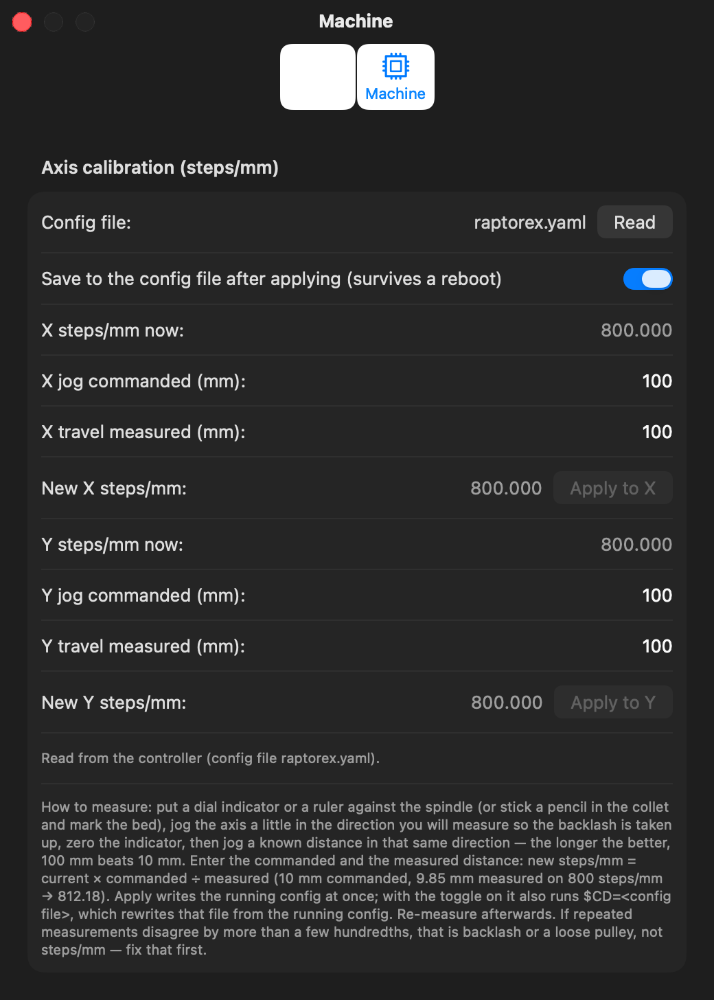
If a 10 mm jog moves the spindle 9.85 mm, the controller's steps/mm is off. Settings → Machine → Axis calibration (FluidNC, while connected) reads axes/x|y/steps_per_mm and the config filename from the controller. Measure with a dial indicator or a ruler: jog a little in the measuring direction first (takes up the backlash), zero the indicator, jog a known distance — the longer the better — and enter commanded and measured; new steps/mm = current × commanded ÷ measured. Apply writes the running config at once ($/axes/x/steps_per_mm=…) and, with the save toggle on, $CD=<config file> rewrites that file (e.g. raptorex.yaml) from the running config so the value survives a reboot. Re-measure afterwards; measurements that disagree by more than a few hundredths point at backlash or a loose pulley, not at steps/mm.
Macros tab
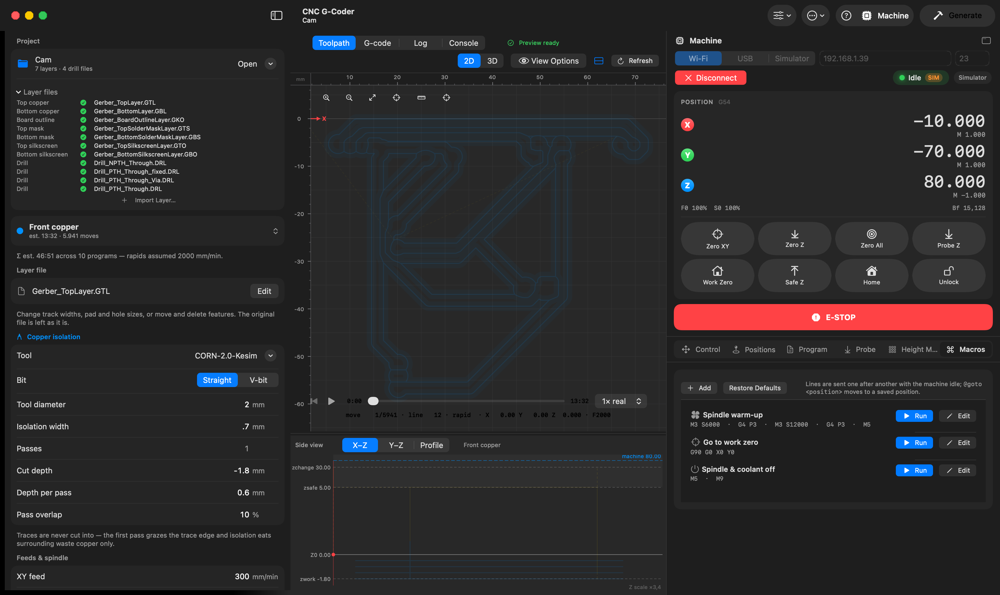
Your own command sequences. Add creates a macro with a name, an optional SF Symbol icon (fan.fill, drop.fill, house…) and the G-code lines it sends; Run sends the lines one after another, waiting for each to be acknowledged (the machine must be connected and idle); Edit, and by right-click Duplicate and Delete; Restore Defaults replaces the list with the built-in examples. Every macro is also a user button on the Control tab; allow while running keeps a button enabled during a job, for short commands such as coolant. @goto <position> in a line moves to a saved position from the Positions tab.
Height Map tab
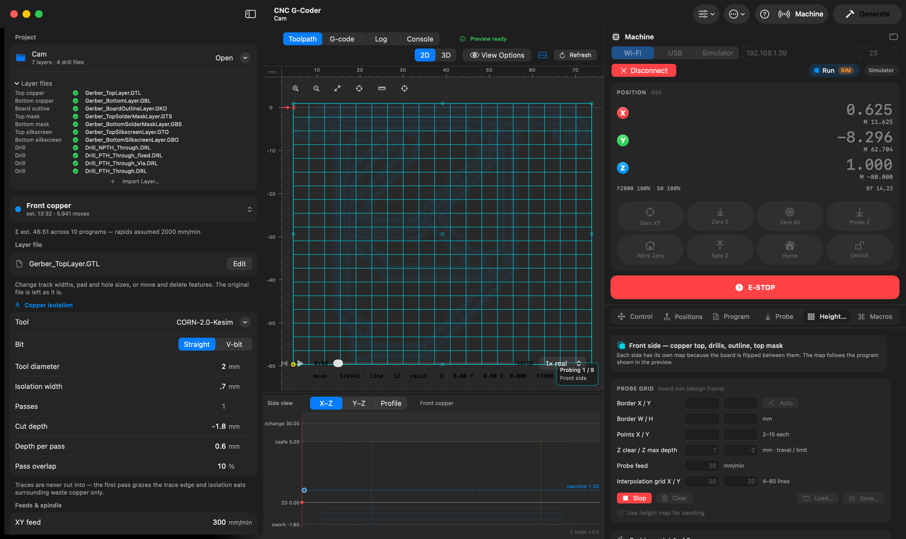
Define a grid over the board (Auto fits the selected program), Probe it and read the deviation. Maps are per side and stored relative to the Z probed at the work origin, so re-probing Z there after a tool change keeps them valid. With Apply height map on, every cut and low plunge of the streamed copy is warped to the measured surface (bilinear interpolation); rapids at safe height are untouched. If the work origin moved since probing, the app warns before applying. Maps are kept per project under Application Support and can be saved/loaded as JSON; View Options → Height Map shows the points on the toolpath.
Trying it without a machine
Turn on Show the Simulator in the connection picker in Settings → Machine, pick Simulator in the connection bar and press Connect: the app starts a built-in FluidNC simulator (fake-grbl.py, bundled; needs python3 from Xcode's command line tools) on a private port and talks to it like a real controller — real-time motion, alarms, tool-change suspensions, Z probing against a synthetic surface 1 mm below work zero, height maps. Its work zero is preset so the sample programs fit the travel. The state pill carries a SIM tag and the badge reads Simulator; Disconnect or quitting stops it. (Dev: -debugMachineWindow 1 -debugMachineConnect sim.)
Help
Troubleshooting
What to do when a preview fails or a cut looks wrong.
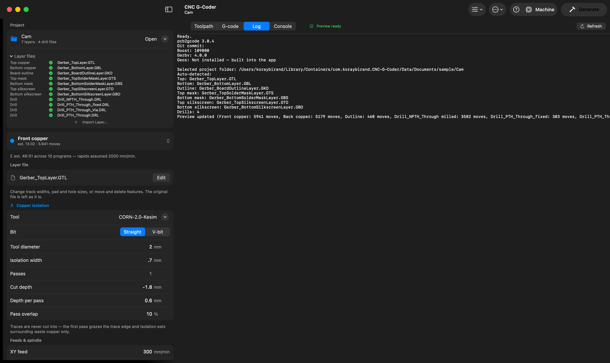
- pcb2gcode missing → only in builds made without it; the native engine takes over (Machine setup → Toolpath engine). Normal builds carry pcb2gcode inside the app — nothing to install.
- Preview failed → the Log tab has the full output with per-step timings; the error is at the bottom.
- Uncut gaps between close traces → tool too wide to fit; pcb2gcode warns in the Log. Reduce effective tool diameter or increase design clearance.
- Mask opening not cleared → opening smaller than the mask tool, or a hand-entered Clear width < half the opening (turn "Clear width from the mask layers" back on).
- Slow generation → mask Clear width too large, or very wide isolation width.
Help
Keyboard shortcuts
Every shortcut in one table.
| Action | Keys |
|---|---|
| New Project / Open Project… / Open Gerber Folder… | ⌘N / ⌘O / ⇧⌘O |
| Save Project / Save Project As… | ⌘S / ⇧⌘S |
| Import Layer… / New Custom Layer | ⌘I / ⇧⌘N |
| Generate Test Board… / Tool Library… | ⇧⌘T / ⇧⌘L |
| Undo / Redo | ⌘Z / ⇧⌘Z |
| Select All Shapes / Duplicate Shapes | ⇧⌘A / ⌘D |
| Snap to Grid | ⌘' |
| Machine Panel / Emergency Stop | ⇧⌘M / ⇧⌘. |
| Settings / Help | ⌘, / ⌘? |
| Drawing tools (custom layer, view focused) | V select · L line · R rectangle · C circle · T text |
| Tape measure / leave the tool | M / Esc |
| Nudge selected shapes | Arrows 0.1 mm · ⇧Arrows 1 mm |
| Machine jog (Keyboard jog on) | Arrows X/Y · Page Up/Down Z · ⇧ step ×10 · Esc or ⌘. stop |
| Console history | ↑ / ↓ |
Premiers pas
Vue d'ensemble
Les sept étapes d'un export Gerber à une carte finie.
Premiers pas
Dossier et détection
Comment les exports EasyEDA et KiCad sont reconnus, et ce que Generate écrit où.
Premiers pas
Outils et fraises en V
Pourquoi chaque diamètre doit être le diamètre de coupe effectif en profondeur.
Premiers pas
Cartes de test
Trois petites cartes qui mesurent votre installation : paramètres, jeu, ajustement des trous.
Projets et couches
Projets
Le paquet .cncproj, ouvrir, enregistrer et importer des couches.
Projets et couches
Couches personnalisées
Dessinez lignes, formes et texte et usinez-les comme toute autre couche.
Projets et couches
Modifier les couches importées
Redimensionnez pistes, pastilles et trous sur place sans toucher aux originaux.
Projets et couches
Bibliothèque d'outils
Chaque fraise que vous possédez, avec ses données de coupe, partagée par tous les projets.
Sortie
Moteurs de parcours
pcb2gcode ou le moteur natif : ce qui diffère et ce qui ne diffère pas.
Sortie
Générer les programmes
Le dialogue Generate, le dossier de destination et les fichiers écrits.
Sortie
Exporter un programme
Enregistrer un seul programme exactement tel que prévisualisé.
Sortie
Gravure laser et dessins
Exporter tout programme en dessin SVG, PDF ou PNG 1:1 pour un graveur laser.
Paramètres
Paramètres
Isolation, perçage, découpe, hauteurs de sécurité, vernis et sérigraphie.
Aperçu
Aperçu
Les vues 2D et 3D, les View Options et la signification des couleurs.
Aperçu
Lecture et estimations
Simulation fidèle aux avances et estimations de durée.
Aperçu
Vue latérale
Vérifier les profondeurs dans les projections X–Z, Y–Z et profil.
Aperçu
Commandes de la vue
Zoom, déplacement et ajustement.
Aperçu
Mesure et annulation
Le mètre ruban et l'historique d'annulation de toute l'application.
Aperçu
G-code, Log et Console
Le texte du programme, le journal de génération et la console machine.
Aperçu
Presets et réglages
Jeux de paramètres enregistrés et les deux volets des Réglages.
Machine
Zéro et double face
Où se trouve X0 Y0 sur la carte et comment les deux faces restent alignées.
Machine
Compensation du jeu
Compenser le jeu des axes dans chaque programme écrit par l'application.
Machine
Panneau Machine
L'émetteur GRBL / FluidNC intégré : connecter, jogger, palper, envoyer.
Aide
Dépannage
Que faire quand un aperçu échoue ou qu'une coupe semble fausse.
Aide
Raccourcis clavier
Tous les raccourcis dans un tableau.
Ce guide est aussi disponible dans l'application : ⌘? ou le bouton Aide de la barre d'outils.
Premiers pas
Vue d'ensemble du flux de travail
Les sept étapes d'un export Gerber à une carte finie.
- Exportez les fichiers Gerber + perçage depuis EasyEDA ou KiCad dans un dossier.
- Choose Folder (barre d'outils) — les couches sont détectées automatiquement d'après le nom de fichier.
- Réglez vos outils, profondeurs et avances (ou chargez un Preset). La barre latérale n'affiche que les réglages du programme sélectionné — le menu des couches en haut change à la fois l'aperçu et les réglages ; choisissez-y Machine setup pour les paramètres communs à tous les programmes.
- Inspectez l'aperçu : sélectionnez chaque programme, lancez la lecture, vérifiez les profondeurs dans la vue latérale et l'estimation de durée totale.
- Generate — choisissez (ou créez avec New Folder) le dossier de destination ; tous les programmes
.ngcy sont écrits. - Usinez dans l'ordre : isolation du cuivre face avant → perçages (un programme par fichier de perçage ; changez de foret aux pauses M0) → retournez la carte → cuivre face arrière → découpe du contour (les ponts retiennent la carte) → cassez/limez les languettes.
- Vernis épargne : peignez la carte usinée avec un vernis UV, faites-le durcir, puis exécutez
top-mask-etch.ngc/bottom-mask-etch.ngcpour dégager les ouvertures des pastilles.
Avec un graveur laser à la place de la fraiseuse (ou en complément) : chaque programme peut aussi être exporté en dessin à l'échelle 1:1 (SVG, PDF ou PNG) — voir Gravure laser et export de dessins.
Premiers pas
Dossier du projet et détection
Comment les exports EasyEDA et KiCad sont reconnus, et ce que Generate écrit où.
Les exports EasyEDA sont reconnus par leur extension : Gerber_TopLayer.GTL, Gerber_BottomLayer.GBL, Gerber_BoardOutlineLayer.GKO, vernis épargne .GTS/.GBS, sérigraphies .GTO/.GBO et fichiers de perçage .DRL. EasyEDA sépare les perçages en fichiers PTH / PTH-via / NPTH ; chacun devient un programme distinct, car pcb2gcode n'accepte qu'un fichier de perçage par exécution.
Les exports KiCad sont reconnus par les noms de couches de KiCad : board-F_Cu.gbr / board-B_Cu.gbr (cuivre), board-Edge_Cuts.gbr (contour), board-F_Mask.gbr / board-B_Mask.gbr, board-F_Silkscreen.gbr / board-B_Silkscreen.gbr, et board.drl ou board-PTH.drl + board-NPTH.drl. Les fichiers de pâte, fab, courtyard, cuivre interne, plan de perçage et job sont ignorés. Dans le dialogue de perçage de KiCad, choisissez le format Excellon (pas Gerber X2) et utilisez le même réglage d'origine dans les dialogues de tracé et de perçage (les deux avec « drill/place file origin » ou aucun), sinon les perçages se retrouvent décalés par rapport au cuivre. Les exports faits avec « Use Protel filename extensions » fonctionnent aussi.
Remarque
Generate demande où écrire les programmes (le bouton New Folder du dialogue crée une nouvelle destination) ; le choix est mémorisé jusqu'au changement de projet. L'aperçu en direct utilise un dossier temporaire et ne touche jamais à vos fichiers avant que vous n'appuyiez sur Generate.
Premiers pas
Outils et fraises en V — à lire d'abord
Pourquoi chaque diamètre doit être le diamètre de coupe effectif en profondeur.
Important
Chaque diamètre que vous saisissez doit être le diamètre de coupe effectif à la profondeur de travail, avec la fraise exacte que vous utilisez.
- Fraises droites / deux tailles : effectif = diamètre imprimé, saisissez-le tel quel.
- Fraises en V (le choix habituel pour l'isolation — les fraises droites de 0,1 mm cassent facilement) : le cône s'élargit avec la profondeur :
effectif ≈ pointe + 2 × |profondeur de coupe| × tan(demi-angle)
Pour une pointe de 0,1 mm à −0,06 mm : V 30° ≈ 0,13 mm · V 60° ≈ 0,17 mm · V 90° ≈ 0,22 mm.
Saisir la taille de la pointe à la place rend chaque piste plus fine que prévu et l'isolation plus étroite que demandé — silencieusement. - Vérification : usinez une carte de test (File → Generate Test Board…) et mesurez la piste test de 0,2 mm. Si elle mesure ~0,13 mm avec une fraise V 60° saisie à 0,1, votre diamètre effectif est ~0,07 mm plus grand que saisi — corrigez le paramètre, pas le dessin.
- Mode V-bit : réglez Bit → V-bit pour l'isolation, le vernis ou la sérigraphie et saisissez pointe et angle à la place ; la largeur à la profondeur est calculée pour vous (et suit la profondeur de coupe).
Premiers pas
Cartes de test
Trois petites cartes qui mesurent votre installation : paramètres, jeu, ajustement des trous.
File → Generate Test Board… (⇧⌘T) usine une petite carte qui répond à une question sur votre installation. Chaque test a sa propre fraise (Bit, depuis la Tool Library ; mémorisée par test — par défaut la fraise d'isolation du cuivre, pour le test de trous la fraise de fraisage de trous) et ses propres réglages ; le Z de sécurité, la garde de plongée et la largeur d'isolation viennent du projet. Le résultat est écrit en .ngc à côté d'une légende .txt et affiché dans l'aperçu comme n'importe quel programme, pour être lu et envoyé à la machine.
- Parameter test board — trouve la profondeur de coupe et l'avance pour l'isolation de production. Une grille de patchs : les lignes balaient la profondeur de coupe (de … à), les colonnes balaient l'avance XY ; chaque patch a des pistes de 0,2 / 0,3 / 0,4 mm. Chaque piste relie deux pastilles de sonde à l'intérieur d'un fossé d'isolation fermé : un multimètre en mode continuité dit si la piste a survécu (pastille à pastille bipe) et si l'isolation est complète (pastille vers le cuivre environnant reste muet). Board size et Grid (avances × profondeurs) définissent la disposition ; Suggest choisit une grille pour la taille de carte. La légende associe chaque patch à sa profondeur et son avance.
- Backlash test — mesure le jeu en X et Y sur une carte de 75 × 75 mm. Par axe, une ligne droite est coupée en deux moitiés atteintes depuis des directions opposées : une marche à la jonction des moitiés est le jeu de cet axe. Un carré de 50 mm et un cercle Ø30 le montrent aussi — côtés courts, ovale. Saisissez la marche dans Machine setup → Backlash compensation et recoupez le test jusqu'à ce que les deux lignes soient droites (voir Compensation du jeu).
- Hole fit test — trouve la taille de trou qui convient à une broche. Chaque taille de trou listée (lignes) est fraisée en plusieurs variantes (colonnes : la taille plus un jeu en mm), comme la production fraise les trous — une spirale descendante depuis la surface, puis un cercle de finition. Enfoncez la broche dans chaque trou de sa ligne et gardez la variante qui s'ajuste comme vous le souhaitez ; dessinez le trou à cette taille. Fraisez-le avec la même fraise que la vraie carte.
Projets et couches
Projets
Le paquet .cncproj, ouvrir, enregistrer et importer des couches.
Un projet (.cncproj) est un paquet autonome : le Finder l'affiche comme un seul fichier, mais clic droit → Afficher le contenu du paquet révèle
Board.cncproj/
project.json paramètres (outils, profondeurs, avances, origine…), rôles des couches, guides, provenance de chaque fichier
Layers/ les fichiers Gerber et de perçage eux-mêmes, inchangésDéplacez ou copiez le projet seul — il ne perd jamais ses couches. (Pour l'envoyer par e-mail, compressez-le d'abord ; Mail le fait automatiquement.) À l'ouverture d'un projet, ses fichiers sont copiés dans un dossier de travail privé : les originaux ne sont pas nécessaires et ne sont jamais modifiés.
- File → New Project (⌘N), Open Project… (⌘O), Open Recent, Save Project (⌘S), Save Project As… (⇧⌘S). Les mêmes actions sont dans le menu Open de la barre latérale. Le titre de la fenêtre affiche le projet et « Edited » s'il a des modifications non enregistrées ; New, Open et Quit demandent confirmation avant de les abandonner.
- Open Gerber Folder… (⇧⌘O) démarre un projet sans titre depuis un dossier d'export EasyEDA ou KiCad, en détectant les couches par nom de fichier, comme avant.
- Les copies empaquetées sont celles que le projet utilise. Si vous réexportez les Gerber depuis votre éditeur de PCB, importez-les avec Import Layer… ou Replace… (ou ouvrez le nouveau dossier d'export), puis enregistrez. Show Original in Finder sur une couche pointe vers le fichier d'origine, s'il existe encore.
- Les projets enregistrés par des versions antérieures (un fichier unique avec les couches incorporées, ou avec des liens vers elles) s'ouvrent toujours et deviennent un paquet à l'enregistrement suivant.
- Le Finder affiche le paquet comme un seul fichier une fois l'application lancée (cela enregistre le type de projet) ; avant, il apparaît comme un dossier nommé
….cncproj. - Ouvrir un projet remplace les paramètres courants par ceux du projet.
Importer des couches individuelles
File → Import Layer… (⌘I), ou Import Layer… sous Layer files dans la barre latérale, ajoute des fichiers Gerber ou Excellon de n'importe où. Le rôle de chaque fichier est deviné d'après son nom (et les fichiers de perçage d'après leur en-tête M48, quel que soit leur nom) et peut être changé dans la feuille d'import avant l'importation : un fichier de perçage est ajouté comme programme de perçage supplémentaire ; tout autre rôle remplace le fichier de cet emplacement. Clic droit sur un fichier de couche dans la barre latérale pour Replace…, Remove ou Show in Finder.
Projets et couches
Couches personnalisées — dessiner vos propres formes
Dessinez lignes, formes et texte et usinez-les comme toute autre couche.
File → New Custom Layer (⇧⌘N, aussi dans le menu des couches de la barre latérale) ajoute une couche sur laquelle dessiner : lignes et polygones, rectangles (avec rayon d'angle et rotation), cercles et texte — dans la police de gravure monotrait intégrée ou n'importe quelle police installée, gravée le long de ses contours. Chaque couche non vide devient un programme, écrit par Generate et par l'export CNC comme les autres, et affiché dans l'aperçu qui se régénère après chaque modification.
Dessin. Avec la couche sélectionnée, une barre apparaît au-dessus de l'aperçu avec les outils — Select (V), Line (L), Rectangle (R), Circle (C), Text (T). Cliquez ou glissez pour dessiner ; double-clic ou Retour termine une ligne, cliquer son premier point la ferme en polygone ; Maj contraint à 45° et fait des carrés. Les points s'accrochent à la grille (Snap to Grid), aux guides, et aux coins, sommets, centres et quadrants des autres formes (Snap to Objects) ; un anneau vert montre l'accrochage. Le glisser droit ou central déplace la vue (Option-glisser aussi), la molette zoome comme d'habitude. Les autres programmes n'apparaissent derrière le dessin qu'avec All Layers Overlay activé (View Options).
Édition. Cliquez pour sélectionner, Maj-clic pour ajouter, tracez un cadre (vers la droite : formes englobées, vers la gauche : formes touchées). Glissez les formes pour les déplacer — elles s'accrochent entre elles — ou glissez les poignées pour redimensionner rectangles et cercles et déplacer les sommets d'une ligne. Les flèches déplacent de 0,1 mm (Maj : 1 mm), ⌘D duplique, Supprimer efface, ⌘Z annule tout. La barre latérale liste les formes ; en sélectionner une ouvre un panneau Properties flottant à droite du dessin avec ses valeurs — position, taille, rayon d'angle, rotation, texte, police, largeur de trait — pour des valeurs exactes ; avec plusieurs sélectionnées, Align (bords et centres) et Distribute (espaces égaux) les alignent.
Usinage. Chaque couche a un outil (de la bibliothèque ou saisi), une profondeur, une profondeur par passe, des avances et une broche, et une opération. Engrave fait passer le centre de l'outil sur la ligne dessinée ; Cut outside / Cut inside décalent les formes fermées d'un demi-outil pour que ce que vous avez dessiné soit la taille obtenue (outside pour une pièce conservée, inside pour un trou). Une largeur de trait supérieure à l'outil est dégagée par passes qui se chevauchent ; Filled évide une forme fermée de l'intérieur vers l'extérieur. Les formes sont dessinées en coordonnées de conception sur la carte, elles gardent donc leur place quelle que soit l'origine choisie, et une couche Back est miroitée comme le cuivre arrière. Les couches personnalisées sont enregistrées dans le projet.
Projets et couches
Modifier des couches importées
Redimensionnez pistes, pastilles et trous sur place sans toucher aux originaux.
Tout fichier Gerber ou de perçage importé peut être modifié sur place : sélectionnez un programme qui en est issu et cliquez Edit en haut de ses réglages, ou clic droit sur le fichier sous Layer files → Edit…. Le dessin du fichier (pastilles, pistes, zones remplies ou trous) est tracé par-dessus son programme dans la vue 2D.
- Sélectionner : cliquez, ⇧-clic pour ajouter, tracez un cadre (gauche à droite englobe, droite à gauche touche). ⌘A sélectionne tout ; Select Similar (la baguette) ajoute chaque piste de même largeur, pastille de même ouverture ou trou de même taille.
- Changer les tailles de la sélection dans le panneau Properties : largeur de piste, diamètre de pastille ou largeur × hauteur, diamètre de trou. Seuls les objets sélectionnés changent.
- Changer une taille partout : pendant l'édition, la barre latérale liste les ouvertures du fichier (Gerber) ou les outils de perçage (Excellon). Modifier une ligne redimensionne tout ce qui l'utilise, p. ex. toutes les pistes de 0,25 mm d'un coup. L'icône cible les sélectionne.
- Déplacer en glissant ou avec les flèches (0,1 mm, ⇧ 1 mm) ; Supprimer avec ⌫. Les valeurs sont validées par Retour.
Chaque modification écrit une copie modifiée du fichier ; l'original n'est jamais touché. Pendant l'édition, la barre latérale ne montre que les tailles du fichier et pcb2gcode ne tourne pas — les parcours tracés sous le dessin sont ceux d'avant l'édition. Appuyez sur Done (ou Échap sans sélection) et l'aperçu se régénère une fois depuis le fichier modifié. Les modifications sont dans l'historique d'annulation normal (⌘Z), les fichiers modifiés portent un crayon orange, et l'enregistrement du projet empaquette le fichier modifié. Les pastilles de forme spéciale (macros) et les zones remplies peuvent être déplacées ou supprimées mais pas redimensionnées.
Projets et couches
Bibliothèque d'outils
Chaque fraise que vous possédez, avec ses données de coupe, partagée par tous les projets.
File → Tool Library… (⇧⌘L) contient chaque fraise que vous possédez avec ses données de coupe : forme (droite / hémisphérique / en V), usage, diamètre ou pointe + angle, profondeur, profondeur par passe (forets : profondeur de débourrage), avances, broche, recouvrement des passes, et pour les forets la plage de diamètres de trous qu'ils peuvent percer.
- Import FlatCAM… lit un export de la base d'outils FlatCAM (Tools Database → Export, le
.TXTJSON). Tool Target correspond à Used for (Isolation, Drilling, Milling/Cutout → Cutout, autres → General) ; la forme V garde pointe et angle ; la tolérance de perçage de FlatCAM devient la plage de trous. Réimporter met à jour les outils de même nom au lieu de les dupliquer. - Chaque outil est dessiné à ses vraies proportions : une icône de profil dans la liste, et un modèle 3D tournant lentement (glissez pour le tourner) avec ses dimensions clés en haut de l'éditeur — le même modèle que l'aperçu 3D.
- Import… / Export… transfèrent la bibliothèque entre ordinateurs : Export écrit toute la bibliothèque en
.json; Import lit un tel fichier ou une base d'outils FlatCAM. Les outils déjà présents (même outil ou même nom) sont mis à jour, les autres ajoutés — les « bits on hand » d'un projet correspondent donc encore sur l'autre machine. - Chaque groupe de réglages a un menu Tool en haut. Choisir un outil copie ses valeurs dans le groupe — comme FlatCAM copie les données de la base dans un objet — vous pouvez donc encore ajuster la couche. Edited apparaît quand les champs ne correspondent plus à l'outil ; cliquez dessus pour restaurer les valeurs de l'outil. Custom signifie des valeurs saisies à la main.
- Des avances ou une broche à 0 (« non réglé » de FlatCAM) laissent la valeur propre de la couche inchangée.
Sortie
Moteurs de parcours d'outil
pcb2gcode ou le moteur natif : ce qui diffère et ce qui ne diffère pas.
Machine setup → Toolpath engine choisit ce qui transforme les fichiers Gerber et de perçage en programmes :
- pcb2gcode — le générateur open source établi. Il est intégré à l'application (Contents/Helpers), rien à installer.
- Native — le moteur propre de l'application : il lit les fichiers lui-même et calcule l'isolation, le contour avec languettes, le perçage (avec les forets disponibles), le fraisage de trous, la gravure du vernis et la sérigraphie avec la bibliothèque de polygones Clipper2. Il tourne dans l'application, donc plus vite, et suit les mêmes règles que pcb2gcode — passes réparties uniformément sur la largeur d'isolation, ligne centrale du contour comme bord de carte, languettes sur les bords les plus longs.
Les deux écrivent leurs programmes de la même façon : chaque réglage (temporisations, débourrages, garde de plongée, surcoupe, hauteurs, origines) s'applique à l'un comme à l'autre. Différences possibles : le moteur natif divise les profondeurs exactement (1,8 mm en passes de 0,6 mm = 3 passes ; pcb2gcode en fait 4 de 0,45 mm) et ordonne les chemins par plus proche voisin.
Sortie
Générer les programmes
Le dialogue Generate, le dossier de destination et les fichiers écrits.
Generate (barre d'outils, ou le bouton Generate de la barre latérale) ouvre le dialogue Generate.
- Produce — CNC G-code génère les parcours avec les paramètres courants et écrit les programmes
.ngc, exactement les fichiers que montre l'aperçu. Laser artwork génère les mêmes programmes puis écrit chacun en dessin 1:1 pour graveur laser au lieu du G-code (les.ngcne sont pas conservés) ; ses options Format, Polarity, Resolution et Frame sont celles décrites sous Gravure laser et export de dessins. - Destination — le dossier des fichiers ; Choose… ouvre le sélecteur de dossier (son bouton New Folder en crée un nouveau). Le dossier est créé s'il n'existe pas, et les fichiers existants de même nom sont remplacés. La suggestion est
Generated_GCodeà côté du projet ; le choix est mémorisé jusqu'au changement de projet. - Pendant l'exécution, le dialogue liste les étapes (cuivre avant, cuivre arrière, contour, une par fichier de perçage, vernis, sérigraphie, couches personnalisées) avec leur état ; Cancel Run arrête après l'étape en cours. À la fin, Open Folder révèle la sortie dans le Finder, et l'onglet Log contient la sortie complète avec les durées par étape.
Fichiers produits. front-copper.ngc, back-copper.ngc, outline.ngc, un <fichier de perçage>.ngc par fichier de perçage (plus <fichier de perçage>-milled.ngc quand Mill large holes est activé), top-mask-etch.ngc / bottom-mask-etch.ngc, top-silkscreen.ngc / bottom-silkscreen.ngc, et un programme par couche personnalisée. Les programmes de la face arrière sont miroités et prêts à tourner après le retournement ; tous les programmes partagent l'origine choisie dans Machine setup. La compensation du jeu (Machine setup) est appliquée à ces fichiers lors de l'écriture.
Le menu More (… dans la barre d'outils) : Open Output Folder révèle la dernière destination ; Copy pcb2gcode Command place dans le presse-papiers la ligne de commande exacte exécutée par l'application, pour lancer pcb2gcode vous-même ou pour un rapport de bogue ; New Custom Layer et Generate Test Board… sont identiques au menu File.
Sortie
Exporter un seul programme
Enregistrer un seul programme exactement tel que prévisualisé.
Avec une couche sélectionnée, CNC export → Export <nom>.ngc… dans la barre latérale enregistre uniquement ce programme — exactement le G-code prévisualisé, avec le même post-traitement et la même origine que Generate écrirait. Disponible une fois l'aperçu à jour. Le lien « X0 Y0 at » à côté mène au réglage de l'origine.
Sortie
Gravure laser et export de dessins
Exporter tout programme en dessin SVG, PDF ou PNG 1:1 pour un graveur laser.
Chaque programme généré par l'application — isolation du cuivre, contour, perçages, ouvertures du vernis, sérigraphie, couches personnalisées — peut être exporté comme dessin à la taille physique réelle de la carte pour un graveur laser : en chemins vectoriels (SVG, PDF) qu'un laser peut suivre, ou en bitmap (PNG). Usages typiques : révéler une réserve de peinture ou de film sur le cuivre pour une gravure chimique, brûler les ouvertures du vernis une fois durci, et graver la légende de sérigraphie.
Où. Avec un programme sélectionné, la section Laser export en bas de la barre latérale exporte ce seul programme (Export <nom>…). Pour exporter tous les programmes d'un coup, utilisez Generate → Produce: Laser artwork, qui écrit un fichier par programme dans le dossier de destination au lieu du G-code. Les options sont les mêmes aux deux endroits et sont mémorisées.
- Format — SVG et PDF restent vectoriels : le parcours d'outil sous forme de chemins. PNG est un bitmap à la Resolution choisie (300, 600, 1000 ou 2400 dpi) ; le dpi est écrit dans le fichier pour que le logiciel laser le place à sa taille réelle. 1000 dpi résout une piste de 0,15 mm sur environ 6 pixels. Les trois sortent à la taille réelle de la carte.
- Polarity — White on black : la coupe est blanche sur fond noir. Black on white : l'inverse. Le fond est dessiné dans le fichier, la polarité survit donc à l'import dans n'importe quel logiciel laser.
- Frame — ce que couvre la page. Board : la carte finie — le chemin de découpe rentré d'un demi-diamètre de fraise, si bien qu'une carte de 70 × 30 mm donne une page de 70 × 30 mm à aligner sur le PCB physique. Origin : depuis X0/Y0 jusqu'au coin le plus éloigné de tous les programmes ; placer le fichier à 0,0 le met exactement là où la fraiseuse couperait. Project : cette même page partagée, recadrée sur les programmes. Layer : l'étendue de ce seul programme.
- Largeur d'outil — avec Tool Width activé dans View Options, le parcours est balayé au diamètre de la fraise, c'est-à-dire le cuivre que la fraiseuse enlèverait ; désactivé, il est exporté en simples lignes centrales. Les déplacements rapides ne sont jamais inclus.
Ouvertures du vernis pour ablation. Solder mask → Output: Laser SVGs saute les programmes de fraisage du vernis et exporte à la place les formes des ouvertures elles-mêmes (pastilles et vias) en SVG 1:1 via gerbv, prêtes à brûler le vernis durci là où les composants sont soudés.
Sérigraphie. Silkscreen → Output: Engrave fait de la légende un programme (donc exportable en dessin) ; avec Output désactivé, la couche est ignorée.
Ce que vous faites du dessin relève de votre propre procédé ; l'application ne génère pas de G-code laser et ne règle pas la puissance du laser. Alignez le fichier d'après le Frame choisi : Board sur le bord physique de la carte, Origin sur le même X0 Y0 où vous faites le zéro de la fraiseuse.
Paramètres
Paramètres
Isolation, perçage, découpe, hauteurs de sécurité, vernis et sérigraphie.
Isolation du cuivre
- Tool diameter — le diamètre effectif à la profondeur de coupe (voir « Outils et fraises en V » ci-dessus), ou choisissez V-bit et saisissez pointe + angle.
- Isolation width — cuivre total dégagé autour de chaque piste ; le temps d'usinage croît presque linéairement avec. 2–3× le diamètre d'outil est un bon départ.
- Cut depth — la feuille de cuivre fait ~0,035 mm ; −0,05…−0,08 mm traverse avec marge. Plus profond élargit les coupes en V et amincit les pistes.
- Depth per pass — atteindre la profondeur de coupe en plusieurs passes égales d'au plus cette profondeur. 0 = une passe.
- Pass overlap — recouvrement entre passes d'isolation voisines (50 % par défaut).
- Les pistes ne sont jamais entamées : la première passe est décalée vers l'extérieur, l'isolation ne mange que le cuivre environnant à éliminer.
Perçage et découpe
- Chaque fichier de perçage a ses propres réglages. Sélectionnez un programme de perçage (ou son programme
… milled) et les groupes Drilling, Bits on hand, Hole milling et Heights & direction affichent les valeurs de ce fichier — l'en-tête nomme le fichier. Activer Mill large holes pour le fichier NPTH, ou donner une profondeur moindre au fichier de vias, ne change rien aux autres fichiers de perçage. Un fichier ajouté au projet part des valeurs par défaut de perçage (affichées quand aucun programme de perçage n'est sélectionné) et garde ensuite ses propres valeurs ; elles sont enregistrées dans le projet avec le fichier. Appliquer un preset met tous les fichiers de perçage aux valeurs du preset. - Profondeurs = épaisseur de carte + ~0,2 mm dans le martyr (stock 1,6 mm → −1,8).
- Peck depth — percer par débourrages : après chacun, le foret remonte en rapide pour évacuer les copeaux, revient juste au-dessus du fond précédent et reprend en avance. 0 = une seule descente.
- Bits on hand — cochez les forets de la bibliothèque que vous possédez. Chaque trou dans la plage d'un foret coché est percé avec ce foret, le travail ne demande donc que ces forets (un trou de 0,915 mm va au foret de 1,0 mm). Les forets sans plage propre utilisent Bit tolerance (± autour du foret). Les trous qu'aucun foret ne couvre gardent leur taille de conception et le Log les nomme — les plages sont toujours transmises, car sans elles pcb2gcode arrondirait chaque trou au foret le plus proche (un trou de fixation de 3 mm percé en silence à 1 mm).
- Hole milling — pour les trous plus grands que tous vos forets (p. ex. trous de fixation 3–4 mm avec une fraise corn de 2 mm à 2 dents). Activez Mill large holes ; les trous à partir de Mill holes from ne sont pas percés mais découpés en cercles, en spirale descendante (mouvements hélicoïdaux G2), dans un programme
… milledséparé exécuté juste après son programme de perçage. La fraise de fraisage de trous a son propre menu Tool (outils de découpe et généraux de la bibliothèque), diamètre, profondeur, profondeur par passe (par tour de spirale), avances, broche et temporisation. Le cercle est décalé vers l'intérieur d'un demi-diamètre, les trous sortent donc à leur taille de conception ; la fraise doit être plus petite que le plus petit trou fraisé. - La découpe tourne par tours de Pass depth ; temps = tours × périmètre ÷ avance.
- Bridges : aux passes plus profondes que Bridge Z, la fraise se relève et laisse des languettes de maintien (blanches dans l'aperçu) pour que la carte ne se libère pas au dernier tour. Épaisseur de languette = dessous de carte − Bridge Z. Cassez et limez après usinage.
Hauteurs de sécurité et garde de plongée
- Safe Z — hauteur de déplacement entre les coupes ; doit passer au-dessus des brides et du voilage de la carte.
- Plunge clearance — les mouvements verticaux sont rapides dans l'air et en avance seulement sous cette hauteur : les descentes vont en rapide jusqu'à elle puis plongent à l'avance Z ; les remontées vont en avance jusqu'à elle puis en rapide. Cela divise souvent la durée du programme par deux (pcb2gcode seul fait toute la descente en avance — et les remontées de perçage aussi). 0,2–0,5 mm typique ; doit dépasser le voilage de la carte ; 0 désactive. La fraise entre et sort toujours de la matière à l'avance programmée.
- Milling direction (Machine setup) — Any laisse pcb2gcode choisir le chemin le plus court ; Climb ou Conventional l'impose à chaque programme de fraisage (cela désactive le raccourcissement de chemin 2-opt, les programmes s'allongent donc un peu).
- Rapid feed (Machine setup) — la vitesse G0 de votre machine, utilisée uniquement pour les estimations de durée (FR Rapids de FlatCAM).
- Heights & direction (chaque couche ; aussi stocké par outil et importé de FlatCAM) — le Travel Z et le Tool-change Z propres à la couche (hauteur pour la pause de changement d'outil et la fin du programme ; Tool-change Z / End Z de FlatCAM), laissés vides pour utiliser les valeurs de Machine setup, affichées en gris dans le champ ; Extra cut (isolation, vernis, sérigraphie et couches personnalisées) — chaque contour fermé dépasse son départ de cette longueur pour ne laisser aucune bavure là où la boucle se ferme ; là où pcb2gcode enchaîne les passes en une seule coupe, l'outil revient ensuite dans la rainure, seul du cuivre déjà coupé est donc recoupé ; Milling direction — valeur machine par défaut ou propre à la couche ; Spindle — horaire (M3) ou antihoraire (M4). Le fraisage de trous utilise les hauteurs de perçage (il tourne dans la même passe).
- Spindle dwell (chaque couche, à côté de sa vitesse de broche ; aussi stocké par outil dans la bibliothèque et importé de la temporisation FlatCAM) — pause après le démarrage de la broche, pour qu'elle soit en vitesse avant de couper, et après son arrêt, avant un changement d'outil. 0 = pas de pause. pcb2gcode écrit les temporisations en millisecondes (
G04 P2000), mais GRBL et LinuxCNC lisent des secondes, l'application écrit donc la temporisation de chaque programme en secondes (G04 P2.000). Les machines configurées en millisecondes (certaines configurations Mach3) ont besoin de la valeur ×1000.
Gravure du vernis épargne
Les couches .GTS/.GBS décrivent les ouvertures (pastilles/vias qui restent exposés). Le mode gravure CNC inverse la couche et évide chaque ouverture par passes à 40 % de recouvrement → top-mask-etch.ngc / bottom-mask-etch.ngc.
- L'outil de vernis ne doit pas être plus grand que la plus petite ouverture (les plus petites sont ignorées — surveillez le Log).
- Clear width — jusqu'où chaque ouverture est évidée vers l'intérieur. Par défaut (Clear width from the mask layers activé), l'application mesure la plus large ouverture des fichiers de vernis et dégage la moitié plus un peu, chaque ouverture est donc dégagée jusqu'à son centre et pas plus ; le pied de section montre la plus large ouverture. Désactivé, saisissez-la vous-même : elle doit être ≥ la moitié de la plus large ouverture, sinon le milieu des grandes ouvertures reste couvert, et des valeurs plus grandes ralentissent énormément la génération.
- La profondeur de gravure n'a besoin d'enlever que la peinture durcie, pas le cuivre.
Gravure de la sérigraphie
Les couches de sérigraphie sont désactivées par défaut (les graver coûte du temps de génération et d'usinage). Output: Engrave fraise les traits de la légende eux-mêmes — repères, contours et texte — qui finissent donc gravés dans la carte : top-silkscreen.ngc / bottom-silkscreen.ngc, à exécuter en dernier, après le vernis. La section a son propre outil (droit ou en V), sa profondeur, sa Clear width (les traits plus larges que l'outil sont dégagés par passes qui se chevauchent), son recouvrement, ses avances et sa broche. Dans tous les cas la couche peut être exportée vers un laser dès qu'un programme existe.
Avances, broche et hauteurs par couche
Chaque groupe de réglages se termine par Feeds & spindle — avance XY, avance Z (plongée), vitesse de broche et temporisation — et Heights & direction (Travel Z, Tool-change Z, Extra cut, Milling direction, sens de broche), décrits sous Hauteurs de sécurité et garde de plongée. Choisir un outil dans le menu Tool copie les valeurs de la bibliothèque dans le groupe ; Edited apparaît quand les champs ne correspondent plus à l'outil.
Aperçu
Aperçu
Les vues 2D et 3D, les View Options et la signification des couleurs.
Vue 3D
Le sélecteur 2D / 3D au-dessus de l'aperçu montre les programmes en 3D : les coupes en lignes de la couleur de chaque couche, les déplacements de la tête en jaune pâle au-dessus de la carte, et une plaque FR4 translucide de 1,6 mm dimensionnée d'après la découpe. Glissez pour orbiter, glisser droit ou central (bouton molette) pour déplacer, molette (ou défilement à deux doigts) ou pincement pour zoomer.
- Gizmo (en haut à droite) : les boules X/Y/Z tournent avec la vue ; cliquez-en une pour regarder le long de cet axe — Z = dessus, −Z = dessous, −Y = avant, Y = arrière, X = droite, −X = gauche. Dessous : un menu de toutes les vues standard, Iso, Fit, perspective/orthographique, et déplacements visibles ou non.
- Avec All Layers Overlay activé, chaque programme est posé sur la carte physique : les programmes de la face arrière apparaissent non miroités sur le dessous, vous pouvez donc orbiter pour inspecter l'arrière. Un programme seul est montré tel qu'il est usiné.
- La lecture fonctionne comme en 2D : la partie terminée du programme est surlignée, et la fraise qui coupe le programme suit l'outil à taille réelle — le cône de la fraise en V à son angle et sa pointe, le diamètre de la fraise ou de la fraise à trous, un foret avec sa pointe à 118°, tous sur une queue de 1/8″ (3,175 mm) de 38 mm avec l'anneau de profondeur coloré des fraises PCB (V jaune, fraise bleue, foret rouge, hémisphérique violette). Elle tourne dans le sens horaire pendant la lecture.
- Un programme est montré à la fois (menu des couches en haut de la barre latérale). Tous les programmes partagent une origine par face, le « All Layers Overlay » superpose donc exactement cuivre, perçages et vernis ; activez « Un-mirror Back Side » pour superposer la face arrière miroitée alignée sur l'avant.
- Couleurs : couleurs par couche pour les coupes ; jaune pointillé = déplacement de la tête (sans coupe) ; blanc = ponts de maintien ; la bande translucide sous les coupes est la largeur réelle de la fraise (« Tool Width » dans le menu View Options).
- Un-mirror Back Side (menu View Options) dé-miroite les programmes de la face arrière pour des vérifications visuelles d'alignement — affichage seulement ; le G-code reste miroité et prêt pour la CNC. Désactivé, l'arrière est correctement miroité par rapport à l'avant.
View Options
Le menu View Options au-dessus de l'aperçu active ce que les vues dessinent : Tool Width (la bande translucide au diamètre réel de la fraise ; décide aussi si un export laser est balayé ou en lignes centrales), Rulers, Guides et Clear Guides, Snap to Grid (⌘'), All Layers Overlay, Un-mirror Back Side, Height Map avec son exagération (×1 … ×50), Toolpath Lines, Drill Holes (les trous en cylindres en 3D), Material Removal (les rainures et le masque de cuivre en 3D), Machine Travel (la zone de course de la machine connectée, en pointillés) et Fit Machine Travel.
Guides. Avec Rulers et Guides activés, glissez depuis une règle vers la vue pour tirer une ligne guide ; glissez un guide pour le déplacer. Les guides accrochent le dessin, la mesure et le marqueur d'origine, et sont enregistrés avec le projet. Clear Guides les supprime tous.
Boutons du canevas (en haut à gauche de la vue 2D) : zoom avant, zoom arrière, ajuster (le double-clic fait de même), définir l'origine en cliquant, le mètre ruban, et centrer sur l'origine.
Aperçu
Lecture et estimations
Simulation fidèle aux avances et estimations de durée.
Simulation fidèle aux avances via la barre de lecture flottante : chaque mouvement dure longueur ÷ avance programmée. 1× réel = 100 % de la vitesse d'usinage ; le marqueur d'outil glisse le long de chaque mouvement, rapides compris. L'onglet G-code surligne la ligne source courante. Les durées par programme sont dans le menu des couches de la barre latérale ; Σ est. en dessous est le total. Les rapides sont supposés à 2000 mm/min (le G-code ne porte pas d'avance rapide).
Aperçu
Vue latérale
Vérifier les profondeurs dans les projections X–Z, Y–Z et profil.
Projections X–Z / Y–Z ou Profile Z en fonction de la distance, avec des lignes de référence étiquetées (Z0, zwork, zdrill, zcut, zbridge, zsafe). Z est exagéré (la note ×N indique de combien) ; les déplacements au-dessus de zsafe sont compressés dans une fine bande supérieure pour que les remontées restent visibles.
Aperçu
Commandes de la vue
Zoom, déplacement et ajustement.
Molette / pincement = zoom (ancré au curseur) · glisser = déplacement · double-clic / bouton Fit = réinitialisation. Zoom et déplacement survivent aux changements de couche ; les positions des séparateurs de panneaux et tous les paramètres persistent entre les lancements.
Aperçu
Mesure et annulation
Le mètre ruban et l'historique d'annulation de toute l'application.
Mesure. le bouton règle en haut à droite de la vue 2D (ou M quand la vue a le focus) active le mètre ruban, sur n'importe quelle couche. Cliquez deux points — ou glissez entre eux — pour lire la distance, ΔX, ΔY et l'angle. Il s'accroche aux coins des parcours, aux trous, aux formes dessinées, à l'origine, aux guides et (avec Snap to Grid) à la grille ; Maj garde la ligne horizontale, verticale ou à 45°. Échap efface la mesure, puis quitte l'outil.
Annulation. Edit → Undo / Redo (⌘Z / ⇧⌘Z) parcourent un seul historique pour toute l'application — modifications de paramètres, outils et presets appliqués, déplacement de l'origine, fichiers de couches importés, remplacés ou retirés, et chaque modification de dessin. Ouvrir un autre projet démarre un nouvel historique.
Aperçu
Onglets G-code, Log et Console
Le texte du programme, le journal de génération et la console machine.
Les onglets au-dessus de l'aperçu changent la zone principale :
- Toolpath — l'aperçu 2D/3D décrit plus haut.
- G-code — le texte du programme sélectionné (le menu File en haut choisit n'importe quel programme généré). Pendant la lecture et pendant l'envoi d'un programme, la ligne courante est surlignée et maintenue visible. Les fichiers de plus de 8 Mo montrent leurs 8 premiers Mo.
- Log — tout ce que pcb2gcode et le moteur natif ont imprimé, étape par étape avec les durées ; les avertissements commencent par
WARNING:, les échecs parERROR:et l'erreur est en bas. La version de pcb2gcode et les fichiers détectés sont consignés à l'ouverture d'un projet. Quand un aperçu échoue, le panneau d'aperçu propose Show Log et Try Again. - Console — la console machine : chaque ligne envoyée au contrôleur et reçue de lui. Show status reports inclut les interrogations
?et les rapports<…>(plusieurs par seconde — utile pour diagnostiquer, bruyant sinon) ; Clear vide la vue. Le champ de commande envoie une ligne telle quelle avec Retour ($G,G0 X10,$/axes/x/max_travel_mm…) ; un caractère seul comme!,~ou?est envoyé en octet temps réel ; ↑ et ↓ rappellent les commandes précédentes. Le champ est verrouillé pendant qu'un programme tourne.
Aperçu
Presets et réglages
Jeux de paramètres enregistrés et les deux volets des Réglages.
Presets (barre d'outils) enregistrent et rappellent des jeux complets de paramètres — outils, avances, profondeurs, hauteurs, origine — utiles par matériau ou par machine. Save Current as Preset… nomme les valeurs courantes ; choisir un preset l'applique (et met chaque fichier de perçage aux réglages de perçage du preset) ; Delete Preset en supprime un. Appliquer un preset est annulable.
Settings (⌘,) a deux volets :
General
- Language — Système (suit macOS) ou anglais, français, espagnol, turc, pour l'interface et le guide intégré. Prend effet au prochain lancement. La fenêtre du guide a aussi son propre menu de langue.
- Units — Metric (millimètres) ou Imperial (pouces). Change les nombres que vous lisez et saisissez : champs de paramètres, règles, guides et affichage de lecture. Les programmes générés restent toujours métriques (
G21). - Preview refresh — Automatic régénère l'aperçu après les modifications de paramètres, une fois que vous arrêtez de taper pendant le Delay after last edit ; Manual seulement sur le bouton Refresh. Le badge « Out of date » signale un aperçu périmé dans les deux cas.
Machine
- Connection — Transport (telnet Wi‑Fi pour FluidNC, série USB pour tout contrôleur de type Grbl, ou le Simulator intégré), Host et Port, port série et Baud (115200), intervalle d'interrogation d'état (200 ms = 5 rapports par seconde), reconnexion automatique si la liaison tombe, afficher les rapports d'état dans la console, afficher le Simulator dans le sélecteur de connexion.
- Jog — l'avance et le pas avec lesquels le panneau démarre, et la longueur de segment pour le jog continu sur les firmwares qui ne peuvent pas annuler un long jog.
- Z probe — avances rapide et lente, course maximale, retrait, épaisseur de plaque (les mêmes valeurs que sur l'onglet Probe).
- Motion — Z de travail sûr pour Go to Work Zero, Z sûr sous le haut de la course (aussi la hauteur de stationnement pour les changements d'outil), broche minimale et maximale pour le bouton Spindle du panneau, préchauffage de broche avant reprise.
- Programs — appliquer la compensation du jeu à l'envoi, confirmer avant de continuer après un changement d'outil, enregistrer le zéro pièce à l'envoi d'un programme (une entrée Work dans l'onglet Positions, nommée d'après le programme et l'heure ; les 20 entrées automatiques les plus récentes sont conservées), la fenêtre d'envoi (combien d'octets non acquittés restent en vol ; 0 = automatique : 128 en série USB, 512 en Wi‑Fi, ou le tampon de réception annoncé par le contrôleur — augmentez-la quand les arcs et les coins arrondis vont moins vite que l'avance en Wi‑Fi, gardez 128 pour une carte Grbl en USB), le Z sous lequel la carte de hauteur s'applique.
- Axis calibration (steps/mm) — voir Étalonnage des axes sous Panneau Machine.
Machine
Zéro machine et travail double face
Où se trouve X0 Y0 sur la carte et comment les deux faces restent alignées.
Machine setup → Origin → « X0 Y0 at » décide où se trouve l'origine machine sur la carte ; chaque programme la partage, une origine par face. La vue la marque d'un réticule cerclé et de flèches X rouge / Y verte (toujours cadrées par Fit).
- Corners / Centre — de tout le projet (l'étendue de tous les programmes) tel que la machine voit chaque face : après retournement vous faites le zéro au même coin du montage.
- Custom point — un point en coordonnées de conception (Gerber/EasyEDA), les tailles d'outil ne le déplacent donc jamais. C'est le même point physique sur les deux faces, p. ex. un trou de repérage. Saisissez Origin X / Y, ou définissez-le dans la vue (ci-dessous).
- Le déplacer dans la vue — glissez le marqueur d'origine là où X0 Y0 doit être, ou cliquez Set Origin in View (Machine setup) / le bouton viseur et cliquez l'endroit. Les deux s'accrochent aux coins et au centre du projet (ce qui sélectionne ce mode de coin) et aux trous (un point personnalisé). Avec Snap to Grid activé (View Options, ou View → Snap to Grid, ⌘'), tout autre dépôt tombe sur la grille affichée, l'origine se déplace donc par pas de grille entiers ; zoomez pour une grille plus fine.
- Design origin — pas de zéro ; coordonnées exactement telles qu'exportées.
Faites le zéro X/Y à l'origine pour les programmes de la face avant (cuivre, perçages, contour, vernis supérieur), puis une fois encore après retournement pour les programmes de la face arrière — tout reste aligné. Faites le zéro Z sur la surface de la carte. Choisissez la direction de retournement avec Mirror around Y axis et vérifiez avec Flip Back View. Le palpage et les cartes de hauteur se font en direct depuis le panneau Machine (ci-dessous) ; les programmes eux-mêmes restent du G-code simple.
Machine
Compensation du jeu
Compenser le jeu des axes dans chaque programme écrit par l'application.
GRBL et FluidNC n'ont pas de réglage de jeu, l'application peut donc compenser elle-même le jeu des axes X et Y. Machine setup → Backlash compensation contient le jeu par axe (mesurez-le avec la carte de test de jeu). Les valeurs appartiennent à la machine, pas au projet : elles sont globales à l'application et ne sont pas enregistrées dans les fichiers .cncproj.
- Avec une valeur définie, chaque programme écrit par l'application — Generate, l'export CNC, les cartes de test — est réécrit : les coordonnées atteintes en se déplaçant dans le sens négatif sont décalées du jeu, un court mouvement de rattrapage de cet axe seul est inséré à chaque inversion, les arcs sont scindés à leurs extrêmes X/Y, et le premier rapide reçoit une approche par le bas. L'aperçu et l'onglet G-code montrent toujours le programme non compensé.
- Compensate a G-code File… écrit une copie compensée d'un programme créé hors de cette application.
- À l'envoi depuis le panneau Machine, l'interrupteur Backlash compensation de l'onglet Program (valeur par défaut depuis Settings → Machine → Apply backlash compensation when sending) réécrit la copie diffusée ; les fichiers sur disque ne sont pas touchés.
- Les programmes avec G91 (mouvements relatifs), G20 (pouces), arcs au format R, G28/G53/G92 ou cycles fixes sont laissés non compensés, avec un WARNING dans le Log.
- Remettez les valeurs à 0 une fois la machine réparée — corriger le jeu mécaniquement est toujours préférable.
Machine
Panneau Machine
L'émetteur GRBL / FluidNC intégré : connecter, jogger, palper, envoyer.
Le bouton Machine de la barre d'outils (View → Machine Panel, ⇧⌘M) ouvre un panneau à droite de la fenêtre principale : un émetteur natif pour les contrôleurs GRBL 1.1 et FluidNC. La bande de connexion et l'affichage de position restent en haut ; les onglets dessous (Control, Positions, Program, Probe, Height Map, Macros) défilent séparément ; un E-STOP rouge sous l'affichage reste visible sur chaque onglet ; la console est l'onglet Console de la fenêtre principale, et « Open in a window » en haut du panneau donne aux mêmes commandes une fenêtre à part avec le texte du programme.
Connexion
Choisissez Wi‑Fi (l'IP du contrôleur et le port telnet, 23 par défaut) ou USB (un port /dev/cu.* à 115200) et appuyez sur Connect. La pastille d'état montre Idle / Run / Jog / Hold / Alarm…, le badge le firmware identifié par l'application ($I), et les alarmes apparaissent décodées avec Unlock / Home / Reset. Les alarmes qui perdent la position (fins de course, reset en mouvement) marquent la position comme non fiable : faites Home, ou appuyez sur Unlock pour garder la position telle quelle. La connexion coexiste avec d'autres clients (un pendentif sur le même contrôleur continue de fonctionner).
DRO, zéro, positions
Coordonnées pièce et machine, avance et broche en direct, tampon du planificateur et entrées déclenchées (P = entrée de palpeur fermée). Cliquez une valeur d'axe pour définir ou mettre à zéro cet axe ; la grille de boutons dessous a Zero XY / Zero Z / Zero All (G10 L20 P0, persistant) et Probe Z (le palpage en deux passes de l'onglet Probe) en première ligne, Work Zero (remonte d'abord au Z de travail sûr), Safe Z (juste sous le haut de la course Z), Home et Unlock en seconde. L'onglet Positions garde des positions machine nommées ; Go to coordinates… se déplace vers une cible machine saisie (Z d'abord en montant, en dernier en descendant). Save work zero mémorise où se trouve le X0 Y0 Z0 pièce en coordonnées machine, et Use as zero sur une entrée rétablit l'origine pièce à ce point (G10 L2 P0, sans mouvement) — pour restaurer un zéro après un reset ou un nouveau homing. Les User buttons de l'onglet Control exécutent les macros de l'onglet Macros (un bouton par macro, icône SF Symbol facultative ; « allow while running » garde un bouton actif pendant un travail, pour des commandes courtes comme l'arrosage). E-STOP (aussi en fin de barre de travail, et ⇧⌘.) envoie d'un coup annulation de jog, feed hold et soft reset sans rien attendre ; la position est marquée non fiable si la machine bougeait. ⌘. reste l'arrêt contrôlé.
Jog et overrides
Tapez un bouton de jog pour un pas ; maintenez pour un mouvement continu qui s'arrête au relâchement (sur un FluidNC référencé avec limites logicielles, le jog court jusqu'à la limite et est annulé au relâchement ; sinon de courts segments sont diffusés). Les boutons diagonaux déplacent deux axes. Jog clavier : flèches = X/Y, Page haut/bas = Z, Maj = pas ×10, Échap ou ⌘. = stop. Les overrides ajustent l'avance (10–200 %, par pas de 1 et 10), les rapides (25/50/100 %) et la vitesse de broche en temps réel ; le contrôleur rapporte la valeur qu'il utilise.
Commandes machine (onglet Control) : Reset (soft reset Ctrl‑X — arrête tout ; la position est perdue si la machine bougeait), Hold / Resume (feed hold, cycle start), Check ($C — le G-code est analysé mais rien ne bouge), Spindle marche/arrêt à la vitesse indiquée à côté (bornée au minimum et maximum de Settings → Machine), Coolant (M8/M9), et sous More : Sleep, Safety Door, et les requêtes $G (état de l'analyseur), $# (décalages) et $I (infos de build), dont les réponses apparaissent dans la Console.
Onglet Positions
Positions machine nommées, en deux listes choisies par le sélecteur Machine / Work. Machine contient les points où la broche retourne : Save current… mémorise les coordonnées machine où se trouve la broche, Go to… se déplace vers une coordonnée machine saisie, et chaque entrée a Go (Z d'abord en montant, en dernier en descendant, à l'avance de jog). Work contient les zéros pièce — où était le X0 Y0 Z0 pièce, en coordonnées machine : Save work zero mémorise le zéro actuel à la main, et avec Save the work zero when a program is sent (Réglages → Machine, activé par défaut) chaque envoi en enregistre un automatiquement, nommé d'après le programme et l'heure (« Front copper – 8 Oct 14:07 », icône horloge). Use as zero sur une entrée Work refait de ce point l'origine pièce avec G10 L2 — la machine ne bouge pas — ainsi, après un crash, un reset ou un homing, le même zéro est de retour sans refaire le palpage. Clic droit sur une entrée pour Rename…, Overwrite with Current Position / Current Work Zero, Go There… / Use as Work Zero… de l'autre liste, et Delete. Les macros peuvent aller à une position enregistrée avec @goto <nom>.
Onglet Program — envoi
Choisissez une couche générée (ou CNC export → Send … to Machine… dans la barre latérale), ou Open .ngc file… pour un programme externe (une carte de test, par exemple). Backlash et Apply height map transforment la copie envoyée, jamais les fichiers sur disque ; Save sent program… conserve cette copie. Verify diffuse le programme en mode check sans mouvement. Si la course de la machine ne peut contenir le programme, la barre de travail le dit en toutes lettres — par exemple que la ligne 12 monte à un Z au-dessus du haut de la course parce que le Z0 pièce est près du haut ; quand c'est le seul problème, Clamp Z to top reprépare le programme avec ces hauteurs de retrait abaissées juste sous le haut (les profondeurs de coupe sont intactes ; un badge orange « Z clamped » s'affiche tant que c'est actif) pour permettre un essai à vide. Send diffuse avec comptage de caractères ; les canevas de la fenêtre principale, la vue latérale, la vue 3D et l'onglet G-code suivent le travail, un réticule bleu marque la position réelle de la machine, et la barre de travail affiche la ligne, le temps écoulé et restant. Hold/Resume et les overrides restent actifs. Stop met en pause, réinitialise une fois la machine immobile, et coupe la broche.
Les changements d'outil (diamètres de forets supplémentaires) suspendent le travail avant le changement : broche coupée, Z stationné en haut, et une bannière nomme la fraise. Jog, Zero et Probe Z sont actifs pendant la suspension pour palper la nouvelle fraise, puis Continue reprend aussitôt — la bannière liste les lignes de préambule qu'il enverra (Settings → Machine → Confirm before continuing after a tool change ramène la feuille de confirmation). Send from line… reprend en cours de programme avec un préambule sûr (retrait, broche, rapide au-dessus du point, plongée), toujours affiché pour confirmation. L'application demande confirmation avant de changer de projet, de se déconnecter ou de quitter pendant un travail.
Onglet Probe
Un palpage Z en deux passes : descente rapide pour trouver le contact, retrait de 1 mm, descente lente pour le point exact ; l'origine pièce active est alors fixée au point de contact (G10 L20 ; la passe lente s'arrête à un micron du déclenchement) et relue depuis le contrôleur — le DRO affiche alors la hauteur de retrait, avec Z0 sur la surface. Épaisseur de plaque 0 = pince sur le cuivre et fraise comme palpeur ; saisissez l'épaisseur pour une plaque de contact. Settings → Machine contient les avances, la course maximale et le retrait.
Étalonnage des axes (pas/mm)
Si un jog de 10 mm déplace la broche de 9,85 mm, les pas/mm du contrôleur sont faux. Settings → Machine → Axis calibration (FluidNC, connecté) lit axes/x|y/steps_per_mm et le nom du fichier de configuration depuis le contrôleur. Mesurez avec un comparateur ou une règle : joggez d'abord un peu dans le sens de mesure (rattrape le jeu), mettez le comparateur à zéro, joggez une distance connue — la plus longue possible — et saisissez commandé et mesuré ; nouveaux pas/mm = actuel × commandé ÷ mesuré. Apply écrit la configuration en cours aussitôt ($/axes/x/steps_per_mm=…) et, avec l'interrupteur d'enregistrement activé, $CD=<fichier de config> réécrit ce fichier (p. ex. raptorex.yaml) depuis la configuration en cours pour que la valeur survive au redémarrage. Remesurez ensuite ; des mesures qui diffèrent de plus de quelques centièmes indiquent du jeu ou une poulie desserrée, pas les pas/mm.
Onglet Macros
Vos propres séquences de commandes. Add crée une macro avec un nom, une icône SF Symbol facultative (fan.fill, drop.fill, house…) et les lignes G-code qu'elle envoie ; Run envoie les lignes l'une après l'autre en attendant chaque acquittement (la machine doit être connectée et au repos) ; Edit, et par clic droit Duplicate et Delete ; Restore Defaults remplace la liste par les exemples intégrés. Chaque macro est aussi un user button sur l'onglet Control ; allow while running garde un bouton actif pendant un travail, pour des commandes courtes comme l'arrosage. @goto <position> dans une ligne va à une position enregistrée de l'onglet Positions.
Onglet Height Map
Définissez une grille sur la carte (Auto l'ajuste au programme sélectionné), Probe la palpe et lit l'écart. Les cartes sont par face et stockées relativement au Z palpé à l'origine pièce, repalper Z là après un changement d'outil les garde donc valides. Avec Apply height map activé, chaque coupe et plongée basse de la copie diffusée est déformée selon la surface mesurée (interpolation bilinéaire) ; les rapides à hauteur de sécurité sont intacts. Si l'origine pièce a bougé depuis le palpage, l'application avertit avant d'appliquer. Les cartes sont conservées par projet dans Application Support et peuvent être enregistrées/chargées en JSON ; View Options → Height Map montre les points sur le parcours.
Essayer sans machine
Activez Show the Simulator in the connection picker dans Settings → Machine, choisissez Simulator dans la barre de connexion et appuyez sur Connect : l'application démarre un simulateur FluidNC intégré (fake-grbl.py, inclus ; nécessite python3 des outils en ligne de commande de Xcode) sur un port privé et lui parle comme à un vrai contrôleur — mouvement en temps réel, alarmes, suspensions de changement d'outil, palpage Z contre une surface synthétique 1 mm sous le zéro pièce, cartes de hauteur. Son zéro pièce est préréglé pour que les programmes d'exemple tiennent dans la course. La pastille d'état porte un tag SIM et le badge indique Simulator ; Disconnect ou quitter l'arrête. (Dév : -debugMachineWindow 1 -debugMachineConnect sim.)
Aide
Dépannage
Que faire quand un aperçu échoue ou qu'une coupe semble fausse.
- pcb2gcode manquant → seulement dans les builds faits sans lui ; le moteur natif prend le relais (Machine setup → Toolpath engine). Les builds normaux embarquent pcb2gcode dans l'application — rien à installer.
- Échec de l'aperçu → l'onglet Log contient la sortie complète avec les durées par étape ; l'erreur est en bas.
- Espaces non coupés entre pistes proches → outil trop large pour passer ; pcb2gcode avertit dans le Log. Réduisez le diamètre effectif de l'outil ou augmentez l'écartement du dessin.
- Ouverture de vernis non dégagée → ouverture plus petite que l'outil de vernis, ou Clear width saisie < moitié de l'ouverture (réactivez « Clear width from the mask layers »).
- Génération lente → Clear width de vernis trop grande, ou largeur d'isolation très grande.
Aide
Raccourcis clavier
Tous les raccourcis dans un tableau.
| Action | Touches |
|---|---|
| New Project / Open Project… / Open Gerber Folder… | ⌘N / ⌘O / ⇧⌘O |
| Save Project / Save Project As… | ⌘S / ⇧⌘S |
| Import Layer… / New Custom Layer | ⌘I / ⇧⌘N |
| Generate Test Board… / Tool Library… | ⇧⌘T / ⇧⌘L |
| Annuler / Rétablir | ⌘Z / ⇧⌘Z |
| Sélectionner toutes les formes / Dupliquer les formes | ⇧⌘A / ⌘D |
| Snap to Grid | ⌘' |
| Panneau Machine / Arrêt d'urgence | ⇧⌘M / ⇧⌘. |
| Réglages / Aide | ⌘, / ⌘? |
| Outils de dessin (couche personnalisée, vue active) | V sélection · L ligne · R rectangle · C cercle · T texte |
| Mètre ruban / quitter l'outil | M / Échap |
| Déplacer les formes sélectionnées | Flèches 0,1 mm · ⇧Flèches 1 mm |
| Jog machine (Keyboard jog activé) | Flèches X/Y · Page haut/bas Z · ⇧ pas ×10 · Échap ou ⌘. stop |
| Historique de la console | ↑ / ↓ |
Primeros pasos
Visión general
Los siete pasos desde una exportación Gerber hasta una placa terminada.
Primeros pasos
Carpeta y detección
Cómo se reconocen las exportaciones de EasyEDA y KiCad, y qué escribe Generate y dónde.
Primeros pasos
Herramientas y fresas en V
Por qué cada diámetro debe ser el diámetro de corte efectivo a la profundidad.
Primeros pasos
Placas de prueba
Tres placas pequeñas que miden su instalación: parámetros, holgura, ajuste de agujeros.
Proyectos y capas
Proyectos
El paquete .cncproj, abrir, guardar e importar capas.
Proyectos y capas
Capas personalizadas
Dibuje líneas, formas y texto y mecanícelos como cualquier otra capa.
Proyectos y capas
Editar capas importadas
Redimensione pistas, pads y agujeros en el sitio sin tocar los originales.
Proyectos y capas
Biblioteca de herramientas
Cada fresa que posee, con sus datos de corte, compartida por todos los proyectos.
Salida
Motores de trayectoria
pcb2gcode o el motor nativo: qué cambia y qué no.
Salida
Generar programas
El diálogo Generate, la carpeta de destino y los archivos que escribe.
Salida
Exportar un programa
Guardar un solo programa exactamente como se previsualiza.
Salida
Grabado láser y arte
Exportar cualquier programa como arte SVG, PDF o PNG 1:1 para un grabador láser.
Parámetros
Parámetros
Aislamiento, taladrado, corte, alturas de seguridad, máscara y serigrafía.
Vista previa
Vista previa
Las vistas 2D y 3D, las View Options y qué significan sus colores.
Vista previa
Reproducción y estimaciones
Simulación fiel a los avances y estimaciones de tiempo.
Vista previa
Vista lateral
Comprobar profundidades en las proyecciones X–Z, Y–Z y perfil.
Vista previa
Controles de la vista
Zoom, desplazamiento y ajuste.
Vista previa
Medición y deshacer
La cinta métrica y el historial de deshacer de toda la aplicación.
Vista previa
G-code, Log y Console
El texto del programa, el registro de generación y la consola de la máquina.
Vista previa
Presets y ajustes
Conjuntos de parámetros guardados y los dos paneles de Ajustes.
Máquina
Cero y doble cara
Dónde está X0 Y0 en la placa y cómo ambas caras siguen registradas.
Máquina
Compensación de holgura
Compensar la holgura de los ejes en cada programa que escribe la aplicación.
Máquina
Panel de máquina
El emisor GRBL / FluidNC integrado: conectar, jog, palpar, enviar.
Ayuda
Solución de problemas
Qué hacer cuando falla una vista previa o un corte parece mal.
Ayuda
Atajos de teclado
Todos los atajos en una tabla.
Esta guía también está disponible dentro de la aplicación: ⌘? o el botón Help de la barra de herramientas.
Primeros pasos
Visión general del flujo de trabajo
Los siete pasos desde una exportación Gerber hasta una placa terminada.
- Exporte los archivos Gerber + taladrado desde EasyEDA o KiCad a una carpeta.
- Choose Folder (barra de herramientas): las capas se detectan automáticamente por el nombre de archivo.
- Ajuste sus herramientas, profundidades y avances (o cargue un Preset). La barra lateral muestra solo los ajustes del programa seleccionado; el menú de capas de su parte superior cambia a la vez la vista previa y los ajustes; elija allí Machine setup para los parámetros compartidos por todos los programas.
- Inspeccione la vista previa: seleccione cada programa, reprodúzcalo, compruebe las profundidades en la vista lateral y la estimación de tiempo total.
- Generate: elija (o cree con New Folder) la carpeta de destino; todos los programas
.ngcse escriben allí. - Mecanice en orden: aislamiento del cobre frontal → taladros (un programa por archivo de taladrado; cambie de broca en las pausas M0) → voltee la placa → cobre posterior → corte del contorno (los puentes sujetan la placa) → rompa/lime las pestañas.
- Máscara de soldadura: pinte la placa mecanizada con máscara UV, cúrela y ejecute
top-mask-etch.ngc/bottom-mask-etch.ngcpara despejar las aberturas de los pads.
Con un grabador láser en lugar de (o junto a) la fresadora: cada programa también puede exportarse como arte 1:1 (SVG, PDF o PNG); vea Grabado láser y exportación de arte.
Primeros pasos
Carpeta del proyecto y detección
Cómo se reconocen las exportaciones de EasyEDA y KiCad, y qué escribe Generate y dónde.
Las exportaciones de EasyEDA se reconocen por la extensión: Gerber_TopLayer.GTL, Gerber_BottomLayer.GBL, Gerber_BoardOutlineLayer.GKO, máscaras .GTS/.GBS, serigrafías .GTO/.GBO y archivos de taladrado .DRL. EasyEDA divide los taladros en archivos PTH / PTH-via / NPTH; cada uno se convierte en un programa aparte, porque pcb2gcode acepta un archivo de taladrado por ejecución.
Las exportaciones de KiCad se reconocen por los nombres de capa de KiCad: board-F_Cu.gbr / board-B_Cu.gbr (cobre), board-Edge_Cuts.gbr (contorno), board-F_Mask.gbr / board-B_Mask.gbr, board-F_Silkscreen.gbr / board-B_Silkscreen.gbr, y board.drl o board-PTH.drl + board-NPTH.drl. Los archivos de pasta, fab, courtyard, cobre interno, mapa de taladros y job se ignoran. En el diálogo de taladrado de KiCad elija el formato Excellon (no Gerber X2) y use el mismo ajuste de origen en los diálogos de trazado y de taladrado (ambos con «drill/place file origin» o ninguno); de lo contrario los taladros quedan desplazados respecto al cobre. Las exportaciones hechas con «Use Protel filename extensions» también funcionan.
Nota
Generate pregunta dónde escribir los programas (el botón New Folder del diálogo crea un destino nuevo); la elección se recuerda hasta que cambie de proyecto. La vista previa en vivo usa una carpeta temporal y nunca toca sus archivos hasta que pulse Generate.
Primeros pasos
Herramientas y fresas en V: lea esto primero
Por qué cada diámetro debe ser el diámetro de corte efectivo a la profundidad.
Importante
Cada diámetro que introduzca debe ser el diámetro de corte efectivo a la profundidad de trabajo, con la fresa exacta con la que mecaniza.
- Fresas rectas / de extremo plano: efectivo = diámetro impreso; introdúzcalo tal cual.
- Fresas en V (la elección habitual para aislamiento; las fresas rectas de 0,1 mm se parten con facilidad): el cono se ensancha con la profundidad:
efectivo ≈ punta + 2 × |profundidad de corte| × tan(semiángulo)
Para una punta de 0,1 mm a −0,06 mm: V 30° ≈ 0,13 mm · V 60° ≈ 0,17 mm · V 90° ≈ 0,22 mm.
Introducir el tamaño de la punta hace que cada pista sea más fina de lo diseñado y el aislamiento más estrecho de lo pedido, sin aviso alguno. - Verificación: mecanice una placa de prueba (File → Generate Test Board…) y mida la pista de prueba de 0,2 mm. Si mide ~0,13 mm con una fresa V 60° introducida como 0,1, su diámetro efectivo es ~0,07 mm mayor que el introducido: corrija el parámetro, no el diseño.
- Modo V-bit: ponga Bit → V-bit en aislamiento, máscara o serigrafía e introduzca punta y ángulo; el ancho a la profundidad se calcula por usted (y sigue a la profundidad de corte).
Primeros pasos
Placas de prueba
Tres placas pequeñas que miden su instalación: parámetros, holgura, ajuste de agujeros.
File → Generate Test Board… (⇧⌘T) corta una placa pequeña que responde a una pregunta sobre su instalación. Cada prueba tiene su propia fresa (Bit, de la Tool Library; se recuerda por prueba; por defecto la fresa de aislamiento del cobre, para la prueba de agujeros la de fresado de agujeros) y sus propios ajustes; la Z segura, la holgura de inmersión y el ancho de aislamiento vienen del proyecto. El resultado se escribe como .ngc junto a una leyenda .txt y se muestra en la vista previa como cualquier programa, de modo que puede reproducirse y enviarse a la máquina.
- Parameter test board: encuentra la profundidad de corte y el avance para el aislamiento de producción. Una cuadrícula de parches: las filas barren la profundidad de corte (de … a), las columnas barren el avance XY; cada parche tiene pistas de 0,2 / 0,3 / 0,4 mm. Cada pista va entre dos pads de prueba dentro de un foso de aislamiento cerrado, así que un multímetro en modo continuidad dice si la pista sobrevivió (pad a pad pita) y si el aislamiento está completo (pad al cobre circundante queda mudo). Board size y Grid (avances × profundidades) fijan la disposición; Suggest elige una cuadrícula para el tamaño de placa. La leyenda asocia cada parche con su profundidad y avance.
- Backlash test: mide la holgura en X e Y en una placa de 75 × 75 mm. Por eje, una línea recta se corta en dos mitades alcanzadas desde direcciones opuestas: un escalón donde se encuentran las mitades es la holgura de ese eje. Un cuadrado de 50 mm y un círculo Ø30 también la muestran: lados cortos, un óvalo. Introduzca el escalón en Machine setup → Backlash compensation y vuelva a cortar la prueba hasta que ambas líneas salgan rectas (vea Compensación de holgura).
- Hole fit test: encuentra el tamaño de agujero que ajusta a un pin. Cada tamaño de agujero que liste (filas) se fresa en varias variantes (columnas: el tamaño más una holgura en mm), como la producción fresa los agujeros: una espiral descendente desde la superficie y después un círculo de acabado. Empuje el pin en cada agujero de su fila y quédese con la variante que ajusta como desea; diseñe el agujero a ese tamaño. Fréselo con la misma fresa que la placa real.
Proyectos y capas
Proyectos
El paquete .cncproj, abrir, guardar e importar capas.
Un proyecto (.cncproj) es un paquete autónomo: el Finder lo muestra como un solo archivo, pero clic derecho → Mostrar contenido del paquete revela
Board.cncproj/
project.json parámetros (herramientas, profundidades, avances, origen…), roles de capa, guías, origen de cada archivo
Layers/ los archivos Gerber y de taladrado en sí, sin cambiosMueva o copie el proyecto por sí solo: nunca pierde sus capas. (Para enviarlo por correo, comprímalo antes; Mail lo hace automáticamente.) Al abrir un proyecto sus archivos se copian a una carpeta de trabajo privada, así que los originales no hacen falta y nunca se modifican.
- File → New Project (⌘N), Open Project… (⌘O), Open Recent, Save Project (⌘S), Save Project As… (⇧⌘S). Las mismas acciones están en el menú Open de la barra lateral. El título de la ventana muestra el proyecto y «Edited» cuando tiene cambios sin guardar; New, Open y Quit preguntan antes de descartarlos.
- Open Gerber Folder… (⇧⌘O) inicia un proyecto sin título desde una carpeta de exportación de EasyEDA o KiCad, detectando las capas por nombre de archivo, como antes.
- Las copias empaquetadas son las que usa el proyecto. Si vuelve a exportar los Gerber desde su editor de PCB, tráigalos con Import Layer… o Replace… (o abra la nueva carpeta de exportación) y guarde. Show Original in Finder en una capa señala el archivo del que se empaquetó, si aún existe.
- Los proyectos guardados por versiones anteriores (un solo archivo con las capas incrustadas, o con enlaces a ellas) siguen abriéndose y se convierten en paquete en el siguiente guardado.
- El Finder muestra el paquete como un archivo una vez ejecutada la aplicación (eso registra el tipo de proyecto); antes aparece como una carpeta llamada
….cncproj. - Abrir un proyecto sustituye los parámetros actuales por los del proyecto.
Importar capas sueltas
File → Import Layer… (⌘I), o Import Layer… bajo Layer files en la barra lateral, añade archivos Gerber o Excellon desde cualquier sitio. El rol de cada archivo se deduce de su nombre (y el de los archivos de taladrado de su cabecera M48, se llamen como se llamen) y puede cambiarse en la hoja de importación antes de importar: un archivo de taladrado se añade como otro programa de taladrado; cualquier otro rol sustituye al archivo de ese hueco. Clic derecho en un archivo de capa de la barra lateral para Replace…, Remove o Show in Finder.
Proyectos y capas
Capas personalizadas: dibujar sus propias formas
Dibuje líneas, formas y texto y mecanícelos como cualquier otra capa.
File → New Custom Layer (⇧⌘N, también en el menú de capas de la barra lateral) añade una capa sobre la que dibujar: líneas y polígonos, rectángulos (con radio de esquina y rotación), círculos y texto, con la fuente de grabado de un solo trazo integrada o cualquier fuente instalada, grabado a lo largo de sus contornos. Cada capa no vacía se convierte en un programa, escrito por Generate y por la exportación CNC como cualquier otro, y mostrado en la vista previa, que se regenera tras cada edición.
Dibujo. Con la capa seleccionada, aparece una barra sobre la vista previa con las herramientas: Select (V), Line (L), Rectangle (R), Circle (C), Text (T). Haga clic o arrastre para dibujar; doble clic o Retorno termina una línea, hacer clic en su primer punto la cierra en un polígono; Mayús restringe a 45° y hace cuadrados. Los puntos se ajustan a la cuadrícula (Snap to Grid), a las guías y a esquinas, vértices, centros y cuadrantes de otras formas (Snap to Objects); un anillo verde muestra el ajuste. Arrastrar con el botón derecho o central desplaza la vista (también Opción-arrastrar), la rueda hace zoom como siempre. Los demás programas solo se ven tras el dibujo con All Layers Overlay activado (View Options).
Edición. Clic para seleccionar, Mayús-clic para añadir, arrastre un recuadro (hacia la derecha: formas contenidas; hacia la izquierda: formas tocadas). Arrastre las formas para moverlas —se ajustan entre sí— o arrastre los tiradores para redimensionar rectángulos y círculos y mover los vértices de una línea. Las flechas desplazan 0,1 mm (Mayús: 1 mm), ⌘D duplica, Suprimir borra, ⌘Z deshace todo. La barra lateral lista las formas; seleccionar una abre un panel Properties flotante a la derecha del dibujo con sus números —posición, tamaño, radio de esquina, rotación, texto, fuente, ancho de trazo— para valores exactos; con varias seleccionadas, Align (bordes y centros) y Distribute (huecos iguales) las alinean.
Mecanizado. Cada capa tiene una herramienta (de la biblioteca o tecleada), una profundidad, profundidad por pasada, avances y husillo, y una operación. Engrave lleva el centro de la herramienta por la línea dibujada; Cut outside / Cut inside desplazan las formas cerradas media herramienta para que lo dibujado sea el tamaño resultante (outside para una pieza que se conserva, inside para un agujero). Un ancho de trazo mayor que la herramienta se despeja con pasadas solapadas; Filled vacía una forma cerrada de dentro hacia fuera. Las formas se dibujan en coordenadas de diseño sobre la placa, así que mantienen su sitio sea cual sea el origen elegido, y una capa Back se refleja como el cobre posterior. Las capas personalizadas se guardan en el proyecto.
Proyectos y capas
Editar capas importadas
Redimensione pistas, pads y agujeros en el sitio sin tocar los originales.
Cualquier archivo Gerber o de taladrado importado puede editarse en el sitio: seleccione un programa hecho a partir de él y pulse Edit en la parte superior de sus ajustes, o clic derecho en el archivo bajo Layer files → Edit…. El arte del archivo (pads, pistas, áreas rellenas o agujeros) se dibuja sobre su programa en la vista 2D.
- Seleccionar: clic, ⇧-clic para añadir, arrastre un recuadro (de izquierda a derecha contiene, de derecha a izquierda toca). ⌘A selecciona todo; Select Similar (la varita) añade cada pista del mismo ancho, pad de la misma apertura o agujero del mismo tamaño.
- Cambiar tamaños de la selección en el panel Properties: ancho de pista, diámetro de pad o ancho × alto, diámetro de agujero. Solo cambian los objetos seleccionados.
- Cambiar un tamaño en todas partes: mientras edita, la barra lateral lista las aperturas del archivo (Gerber) o las herramientas de taladrado (Excellon). Editar una fila redimensiona todo lo que la usa, p. ej. todas las pistas de 0,25 mm a la vez. El icono de diana las selecciona.
- Mover arrastrando o con las flechas (0,1 mm, ⇧ 1 mm); Borrar con ⌫. Los valores se confirman con Retorno.
Cada edición escribe una copia editada del archivo; el original nunca se modifica. Mientras edita, la barra lateral muestra solo los tamaños del archivo y pcb2gcode no se ejecuta: las trayectorias dibujadas bajo el arte son las de antes de editar. Pulse Done (o Esc sin nada seleccionado) y la vista previa se regenera una vez desde el archivo editado. Las ediciones están en el historial normal de deshacer (⌘Z), los archivos editados llevan un lápiz naranja, y guardar el proyecto empaqueta el archivo editado. Los pads de forma especial (macro) y las áreas rellenas pueden moverse o borrarse pero no redimensionarse.
Proyectos y capas
Biblioteca de herramientas
Cada fresa que posee, con sus datos de corte, compartida por todos los proyectos.
File → Tool Library… (⇧⌘L) guarda cada fresa que posee con sus datos de corte: forma (recta / esférica / en V), para qué se usa, diámetro o punta + ángulo, profundidad, profundidad por pasada (brocas: profundidad de picoteo), avances, husillo, solape de pasadas y, para brocas, el rango de tamaños de agujero que pueden taladrar.
- Import FlatCAM… lee una exportación de la base de herramientas de FlatCAM (Tools Database → Export, el
.TXTJSON). Tool Target se corresponde con Used for (Isolation, Drilling, Milling/Cutout → Cutout, otros → General); la forma V conserva punta y ángulo; la tolerancia de taladrado de FlatCAM se convierte en el rango de agujeros. Reimportar actualiza las herramientas con el mismo nombre en vez de duplicarlas. - Cada herramienta se dibuja a sus proporciones reales: un icono de perfil en la lista y un modelo 3D que gira despacio (arrástrelo para girarlo) con sus dimensiones clave en la parte superior del editor, el mismo modelo que usa la vista 3D.
- Import… / Export… mueven la biblioteca entre ordenadores: Export escribe toda la biblioteca como
.json; Import lee ese archivo o una base de herramientas de FlatCAM. Las herramientas ya presentes (la misma herramienta o el mismo nombre) se actualizan, el resto se añade, así que los «bits on hand» de un proyecto siguen coincidiendo en la otra máquina. - Cada grupo de ajustes tiene un menú Tool en su parte superior. Elegir una herramienta copia sus valores al grupo —como FlatCAM copia los datos de la base a un objeto—, así que aún puede afinar la capa. Edited aparece cuando los campos ya no coinciden con la herramienta; púlselo para restaurar los valores de la herramienta. Custom significa valores introducidos a mano.
- Avances o husillo a 0 («sin ajustar» en FlatCAM) dejan el valor propio de la capa sin cambios.
Salida
Motores de trayectoria
pcb2gcode o el motor nativo: qué cambia y qué no.
Machine setup → Toolpath engine elige qué convierte los archivos Gerber y de taladrado en programas:
- pcb2gcode: el generador de código abierto consolidado. Está integrado en la aplicación (Contents/Helpers), así que no hay que instalar nada.
- Native: el motor propio de la aplicación: lee los archivos por sí mismo y calcula aislamiento, contorno con pestañas, taladrado (con las brocas disponibles), fresado de agujeros, grabado de máscara y serigrafía con la biblioteca de polígonos Clipper2. Se ejecuta dentro de la aplicación, lo que lo hace más rápido, y sigue las mismas reglas que pcb2gcode: pasadas repartidas uniformemente por el ancho de aislamiento, la línea central del contorno como borde de placa, pestañas en los bordes más largos.
Ambos escriben sus programas igual, así que cada ajuste (pausas, picoteos, holgura de inmersión, corte extra, alturas, orígenes) vale para cualquiera. Diferencias que puede notar: el motor nativo divide las profundidades exactamente (1,8 mm en pasadas de 0,6 mm son 3 pasadas; pcb2gcode hace 4 de 0,45 mm) y ordena los trazados por vecino más cercano.
Salida
Generar programas
El diálogo Generate, la carpeta de destino y los archivos que escribe.
Generate (barra de herramientas, o el botón Generate de la barra lateral) abre el diálogo Generate.
- Produce: CNC G-code genera las trayectorias con los parámetros actuales y escribe los programas
.ngc, exactamente los archivos que muestra la vista previa. Laser artwork genera los mismos programas y escribe cada uno como arte 1:1 para un grabador láser en lugar de G-code (los.ngcno se conservan); sus opciones Format, Polarity, Resolution y Frame son las descritas en Grabado láser y exportación de arte. - Destination: la carpeta a la que van los archivos; Choose… abre el selector de carpeta (su botón New Folder crea una nueva). La carpeta se crea si no existe, y los archivos existentes con el mismo nombre se sustituyen. La sugerencia es
Generated_GCodejunto al proyecto; la elección se recuerda hasta cambiar de proyecto. - Mientras se ejecuta, el diálogo lista las etapas (cobre frontal, cobre posterior, contorno, una por archivo de taladrado, máscaras, serigrafía, capas personalizadas) con su estado; Cancel Run se detiene tras la etapa en curso. Al terminar, Open Folder muestra la salida en el Finder, y la pestaña Log tiene la salida completa con los tiempos por etapa.
Archivos de salida. front-copper.ngc, back-copper.ngc, outline.ngc, un <archivo de taladrado>.ngc por archivo de taladrado (más <archivo de taladrado>-milled.ngc cuando Mill large holes está activado), top-mask-etch.ngc / bottom-mask-etch.ngc, top-silkscreen.ngc / bottom-silkscreen.ngc, y un programa por capa personalizada. Los programas de la cara posterior están reflejados y listos para ejecutarse tras el volteo; todos los programas comparten el origen elegido en Machine setup. La compensación de holgura (Machine setup) se aplica a estos archivos al escribirlos.
El menú More (… en la barra de herramientas): Open Output Folder muestra el último destino; Copy pcb2gcode Command copia al portapapeles la línea de comando exacta que ejecutó la aplicación, para ejecutar pcb2gcode usted mismo o para un informe de error; New Custom Layer y Generate Test Board… son los mismos que en el menú File.
Salida
Exportar un solo programa
Guardar un solo programa exactamente como se previsualiza.
Con una capa seleccionada, CNC export → Export <nombre>.ngc… en la barra lateral guarda solo ese programa: exactamente el G-code previsualizado, con el mismo posprocesado y origen que escribiría Generate. Está disponible en cuanto la vista previa está al día. El enlace «X0 Y0 at» junto a él salta al ajuste del origen.
Salida
Grabado láser y exportación de arte
Exportar cualquier programa como arte SVG, PDF o PNG 1:1 para un grabador láser.
Cada programa que genera la aplicación —aislamiento del cobre, contorno, taladros, aberturas de máscara, serigrafía, capas personalizadas— puede exportarse como arte al tamaño físico real de la placa para un grabador láser: como trazados vectoriales (SVG, PDF) que un láser puede seguir, o como mapa de bits (PNG). Usos típicos: revelar una reserva de pintura o película sobre el cobre para el grabado químico, quemar las aberturas de la máscara una vez curada, y grabar la leyenda de serigrafía.
Dónde. Con un programa seleccionado, la sección Laser export al final de la barra lateral exporta ese programa (Export <nombre>…). Para exportar todos los programas de una vez, use Generate → Produce: Laser artwork, que escribe un archivo por programa en la carpeta de destino en lugar de G-code. Las opciones son las mismas en ambos sitios y se recuerdan.
- Format: SVG y PDF siguen siendo vectoriales: la trayectoria como trazados. PNG es un mapa de bits a la Resolution elegida (300, 600, 1000 o 2400 dpi); el dpi se escribe en el archivo para que el software láser lo coloque a su tamaño real. 1000 dpi resuelve una pista de 0,15 mm en unos 6 píxeles. Los tres salen al tamaño real de la placa.
- Polarity: White on black: el corte es blanco sobre fondo negro. Black on white: lo inverso. El fondo se dibuja en el archivo, así que la polaridad sobrevive a la importación en cualquier programa láser.
- Frame: lo que abarca la página. Board: la placa terminada, con el trazado de corte metido medio diámetro de fresa, de modo que una placa de 70 × 30 mm da una página de 70 × 30 mm alineable con el PCB físico. Origin: desde X0/Y0 hasta la esquina más lejana de todos los programas, así que colocar el archivo en 0,0 lo deja exactamente donde cortaría la fresadora. Project: esa misma página compartida, recortada a los programas. Layer: solo la extensión de este programa.
- Ancho de herramienta: con Tool Width activado en View Options, la trayectoria se barre al diámetro de la fresa, es decir, el cobre que la fresadora retiraría; desactivado, se exporta como simples líneas centrales. Los rápidos nunca se incluyen.
Aberturas de máscara para ablación. Solder mask → Output: Laser SVGs omite los programas de fresado de máscara y exporta en su lugar las formas de las propias aberturas (pads y vías) como SVG 1:1 mediante gerbv, listas para quemar la máscara curada donde se sueldan los componentes.
Serigrafía. Silkscreen → Output: Engrave convierte la leyenda en un programa (y por tanto exportable como arte); con Output desactivado la capa se ignora.
Lo que haga con el arte es su propio proceso; la aplicación no genera G-code láser ni ajusta la potencia del láser. Alinee el archivo según el Frame elegido: Board con el borde físico de la placa, Origin con el mismo X0 Y0 donde pone a cero la fresadora.
Parámetros
Parámetros
Aislamiento, taladrado, corte, alturas de seguridad, máscara y serigrafía.
Aislamiento del cobre
- Tool diameter: el diámetro efectivo a la profundidad de corte (vea «Herramientas y fresas en V» arriba), o elija V-bit e introduzca punta + ángulo.
- Isolation width: cobre total despejado alrededor de cada pista; el tiempo de mecanizado crece casi linealmente con él. 2–3× el diámetro de herramienta es un buen comienzo.
- Cut depth: la lámina de cobre tiene ~0,035 mm; −0,05…−0,08 mm atraviesa con margen. Más profundo ensancha los cortes en V y adelgaza las pistas.
- Depth per pass: alcanzar la profundidad de corte en varias pasadas iguales de como mucho esta profundidad. 0 = una pasada.
- Pass overlap: solape entre pasadas de aislamiento vecinas (50 % por defecto).
- Las pistas nunca se cortan: la primera pasada se desplaza hacia fuera; el aislamiento solo come el cobre sobrante circundante.
Taladrado y corte
- Cada archivo de taladrado tiene sus propios ajustes. Seleccione un programa de taladrado (o su programa
… milled) y los grupos Drilling, Bits on hand, Hole milling y Heights & direction muestran los valores de ese archivo; la cabecera nombra el archivo. Activar Mill large holes para el archivo NPTH, o dar al archivo de vías una profundidad menor, no cambia nada en los demás archivos de taladrado. Un archivo añadido al proyecto parte de los valores por defecto de taladrado (mostrados cuando no hay ningún programa de taladrado seleccionado) y conserva sus propios valores desde entonces; se guardan en el proyecto con el archivo. Aplicar un preset pone todos los archivos de taladrado en los valores del preset. - Profundidades = grosor de placa + ~0,2 mm en la tabla de sacrificio (material de 1,6 mm → −1,8).
- Peck depth: taladrar por picoteos: tras cada uno la broca sale en rápido para evacuar virutas, vuelve justo por encima del fondo anterior y sigue en avance. 0 = una sola carrera.
- Bits on hand: marque las brocas de la biblioteca que posee. Cada agujero dentro del rango de una broca marcada se taladra con esa broca, así que un trabajo solo necesita esas brocas (un agujero de 0,915 mm va a la broca de 1,0 mm). Las brocas sin rango propio usan Bit tolerance (± alrededor de la broca). Los agujeros que ninguna broca cubre conservan su tamaño de diseño y el Log los nombra; los rangos siempre se pasan, porque sin ellos pcb2gcode redondearía cada agujero a la broca más cercana (un agujero de montaje de 3 mm taladrado en silencio a 1 mm).
- Hole milling: para agujeros mayores que cualquier broca que posea (p. ej. agujeros de montaje de 3–4 mm con una fresa corn de 2 mm y 2 filos). Active Mill large holes; los agujeros desde Mill holes from en adelante no se taladran sino que se cortan en círculos, en espiral descendente (movimientos helicoidales G2), en un programa
… milledaparte que se ejecuta justo después de su programa de taladrado. La fresa de agujeros tiene su propio menú Tool (herramientas de corte y generales de la biblioteca), diámetro, profundidad, profundidad por pasada (por vuelta de la espiral), avances, husillo y pausa. El círculo se desplaza hacia dentro media fresa, así que los agujeros salen a su tamaño de diseño; la fresa debe ser menor que el agujero fresado más pequeño. - El corte da vueltas de Pass depth; tiempo = vueltas × perímetro ÷ avance.
- Bridges: en las pasadas más profundas que Bridge Z la fresa se levanta y deja pestañas de sujeción (blancas en la vista previa) para que la placa no se suelte en la última vuelta. Grosor de pestaña = fondo de placa − Bridge Z. Rompa y lime tras mecanizar.
Alturas de seguridad y holgura de inmersión
- Safe Z: altura de desplazamiento entre cortes; debe salvar las mordazas y el alabeo de la placa.
- Plunge clearance: los movimientos verticales son rápidos en el aire y en avance solo por debajo de esta altura: los descensos bajan en rápido hasta ella y luego se sumergen al avance Z; las retiradas suben en avance hasta ella y luego en rápido. Esto suele reducir el tiempo del programa a la mitad (pcb2gcode por sí solo hace todo el descenso en avance, y también las retiradas de taladrado). 0,2–0,5 mm es lo típico; debe superar el alabeo de la placa; 0 lo desactiva. La fresa siempre entra y sale del material al avance programado.
- Milling direction (Machine setup): Any deja que pcb2gcode elija el camino más corto; Climb o Conventional lo fija para cada programa de fresado (esto desactiva el acortamiento de caminos 2-opt, así que los programas se alargan un poco).
- Rapid feed (Machine setup): la velocidad G0 de su máquina, usada solo para las estimaciones de tiempo (FR Rapids de FlatCAM).
- Heights & direction (cada capa; también guardado por herramienta e importado de FlatCAM): el Travel Z y el Tool-change Z propios de la capa (la altura para la pausa de cambio de herramienta y el final del programa; Tool-change Z / End Z de FlatCAM), dejados vacíos para usar los valores de Machine setup, que aparecen en gris en el campo; Extra cut (aislamiento, máscara, serigrafía y capas personalizadas): cada contorno cerrado sigue más allá de su inicio esta longitud para que no quede ninguna rebaba donde se cierra el bucle; donde pcb2gcode encadena pasadas en un solo corte, la herramienta vuelve luego por la ranura, así que solo se recorta cobre ya cortado; Milling direction: valor por defecto de la máquina o propio de la capa; Spindle: horario (M3) o antihorario (M4). El fresado de agujeros usa las alturas de taladrado (se ejecuta en la misma pasada).
- Spindle dwell (cada capa, junto a su velocidad de husillo; también guardado por herramienta en la biblioteca e importado de la pausa de FlatCAM): pausa tras arrancar el husillo, para que esté a velocidad antes de cortar, y tras pararlo, antes de un cambio de herramienta. 0 = sin pausa. pcb2gcode escribe las pausas en milisegundos (
G04 P2000), pero GRBL y LinuxCNC leen segundos, así que la aplicación escribe la pausa de cada programa en segundos (G04 P2.000). Las máquinas configuradas para pausas en milisegundos (algunas instalaciones Mach3) necesitan el valor ×1000.
Grabado de la máscara de soldadura
Las capas .GTS/.GBS describen las aberturas (pads/vías que quedan expuestos). El modo de grabado CNC invierte la capa y vacía cada abertura con pasadas solapadas al 40 % → top-mask-etch.ngc / bottom-mask-etch.ngc.
- La herramienta de máscara no debe ser mayor que la abertura más pequeña (las menores se omiten; vigile el Log).
- Clear width: hasta dónde se vacía cada abertura hacia dentro. Por defecto (Clear width from the mask layers activado) la aplicación mide la abertura más ancha de los archivos de máscara y despeja la mitad y un poco más, de modo que cada abertura se despeja hasta su centro y no más; el pie muestra la abertura más ancha. Desactivado, introdúzcalo usted: debe ser ≥ la mitad de la abertura más ancha o el centro de las aberturas grandes queda cubierto, y los valores mayores ralentizan enormemente la generación.
- La profundidad de grabado solo necesita quitar la pintura curada, no el cobre.
Grabado de la serigrafía
Las capas de serigrafía están desactivadas por defecto (grabarlas cuesta tiempo de generación y de mecanizado). Output: Engrave fresa los propios trazos de la leyenda —designadores, contornos y texto— que así quedan grabados en la placa: top-silkscreen.ngc / bottom-silkscreen.ngc, para ejecutar al final, después de la máscara. La sección tiene su propia herramienta (recta o en V), profundidad, Clear width (los trazos más anchos que la herramienta se despejan con pasadas solapadas), solape, avances y husillo. En cualquier caso la capa puede exportarse a un láser en cuanto exista un programa.
Avances, husillo y alturas por capa
Cada grupo de ajustes termina con Feeds & spindle —avance XY, avance Z (inmersión), velocidad de husillo y pausa de husillo— y Heights & direction (Travel Z, Tool-change Z, Extra cut, Milling direction, sentido del husillo), descritos en Alturas de seguridad y holgura de inmersión. Elegir una herramienta del menú Tool copia los valores de la biblioteca al grupo; Edited aparece cuando los campos ya no coinciden con la herramienta.
Vista previa
Vista previa
Las vistas 2D y 3D, las View Options y qué significan sus colores.
Vista 3D
El selector 2D / 3D sobre la vista previa muestra los programas en 3D: los cortes como líneas del color de cada capa, el desplazamiento del cabezal en amarillo tenue sobre la placa, y una placa FR4 translúcida de 1,6 mm dimensionada según el corte. Arrastre para orbitar, arrastre con el botón derecho o central (rueda) para desplazar, y rueda (o desplazamiento con dos dedos) o pellizco para hacer zoom.
- Gizmo (arriba a la derecha): las bolas X/Y/Z giran con la vista; pulse una para mirar a lo largo de ese eje: Z = arriba, −Z = abajo, −Y = frente, Y = atrás, X = derecha, −X = izquierda. Debajo: un menú con todas las vistas estándar, Iso, Fit, perspectiva/ortográfica y desplazamientos visibles o no.
- Con All Layers Overlay activado, cada programa se asienta sobre la placa física: los programas de la cara posterior aparecen sin reflejar en la parte inferior, así que puede orbitar para inspeccionar el reverso. Un programa solo se muestra tal como se mecaniza.
- La reproducción funciona como en 2D: la parte terminada del programa se resalta, y la fresa que corta el programa sigue a la herramienta a tamaño real: el cono de la fresa en V con su ángulo y punta, el diámetro de la fresa plana o de agujeros, una broca con su punta de 118°, todas sobre un vástago de 1/8″ (3,175 mm) de 38 mm con el anillo de profundidad coloreado de las fresas de PCB (V amarillo, fresa plana azul, broca roja, esférica morada). Gira en sentido horario mientras el programa se reproduce.
- Se muestra un programa a la vez (menú de capas en la parte superior de la barra lateral). Todos los programas comparten un origen por cara, así que el «All Layers Overlay» registra exactamente cobre, taladros y máscaras; active «Un-mirror Back Side» para superponer la cara posterior reflejada alineada con la frontal.
- Colores: colores por capa para los cortes; amarillo discontinuo = desplazamiento del cabezal (sin corte); blanco = puentes de sujeción; la banda translúcida bajo los cortes es el ancho real de la fresa («Tool Width» en el menú View Options).
- Un-mirror Back Side (menú View Options) deshace el reflejo de los programas posteriores para comprobaciones visuales de alineación; solo visualización; el G-code sigue reflejado y listo para la CNC. Desactivado, el reverso queda correctamente reflejado frente al anverso.
View Options
El menú View Options sobre la vista previa activa lo que dibujan las vistas: Tool Width (la banda translúcida al diámetro real de la fresa; también decide si una exportación láser va barrida o en líneas centrales), Rulers, Guides y Clear Guides, Snap to Grid (⌘'), All Layers Overlay, Un-mirror Back Side, Height Map con su exageración (×1 … ×50), Toolpath Lines, Drill Holes (los agujeros como cilindros en 3D), Material Removal (los canales de corte y la máscara de cobre en 3D), Machine Travel (el área de recorrido de la máquina conectada, discontinua) y Fit Machine Travel.
Guías. Con Rulers y Guides activados, arrastre desde una regla hacia la vista para sacar una línea guía; arrastre una guía para moverla. Las guías ajustan el dibujo, la medición y el marcador de origen, y se guardan con el proyecto. Clear Guides las elimina todas.
Botones del lienzo (arriba a la izquierda de la vista 2D): acercar, alejar, ajustar (el doble clic hace lo mismo), fijar el origen con un clic, la cinta métrica y centrar en el origen.
Vista previa
Reproducción y estimaciones
Simulación fiel a los avances y estimaciones de tiempo.
Simulación fiel a los avances mediante la barra de reproducción flotante: cada movimiento dura longitud ÷ avance programado. 1× real = 100 % de la velocidad de mecanizado; el marcador de herramienta se desliza por cada movimiento, rápidos incluidos. La pestaña G-code resalta la línea fuente actual. Los tiempos por programa están en el menú de capas de la barra lateral; Σ est. debajo es el total. Los rápidos se suponen a 2000 mm/min (el G-code no lleva avance rápido).
Vista previa
Vista lateral
Comprobar profundidades en las proyecciones X–Z, Y–Z y perfil.
Proyecciones X–Z / Y–Z o un Profile de Z frente a distancia, con líneas de referencia etiquetadas (Z0, zwork, zdrill, zcut, zbridge, zsafe). Z está exagerada (la nota ×N indica cuánto); el desplazamiento por encima de zsafe se comprime en una banda superior fina para que las retiradas sigan visibles.
Vista previa
Controles de la vista
Zoom, desplazamiento y ajuste.
Rueda / pellizco = zoom (anclado al cursor) · arrastrar = desplazar · doble clic / botón Fit = restablecer. El zoom y el desplazamiento sobreviven a los cambios de capa; las posiciones de los divisores de panel y todos los parámetros persisten entre arranques.
Vista previa
Medición y deshacer
La cinta métrica y el historial de deshacer de toda la aplicación.
Medir. el botón de regla arriba a la derecha de la vista 2D (o M con la vista enfocada) activa la cinta métrica, en cualquier capa. Pulse dos puntos —o arrastre entre ellos— para leer la distancia, ΔX, ΔY y el ángulo. Se ajusta a esquinas de trayectoria, agujeros, formas dibujadas, el origen, guías y (con Snap to Grid) la cuadrícula; Mayús mantiene la línea horizontal, vertical o a 45°. Esc borra la medición y luego sale de la herramienta.
Deshacer. Edit → Undo / Redo (⌘Z / ⇧⌘Z) recorren un único historial para toda la aplicación: ediciones de parámetros, herramientas y presets aplicados, movimiento del origen, archivos de capa importados, sustituidos o eliminados, y cada edición de dibujo. Abrir otro proyecto inicia un historial nuevo.
Vista previa
Pestañas G-code, Log y Console
El texto del programa, el registro de generación y la consola de la máquina.
Las pestañas sobre la vista previa cambian el área principal:
- Toolpath: la vista previa 2D/3D descrita arriba.
- G-code: el texto del programa seleccionado (el menú File de arriba elige cualquier programa generado). Durante la reproducción y mientras se transmite un programa, la línea actual se resalta y se mantiene a la vista. Los archivos de más de 8 MB muestran sus primeros 8 MB.
- Log: todo lo que pcb2gcode y el motor nativo imprimieron, paso a paso con tiempos; los avisos empiezan por
WARNING:, los fallos porERROR:y el error está al final. La versión de pcb2gcode y los archivos detectados se registran al abrir un proyecto. Cuando falla una vista previa, el panel ofrece Show Log y Try Again. - Console: la consola de la máquina: cada línea enviada al controlador y recibida de él. Show status reports incluye los sondeos
?y los informes<…>(varios por segundo; útil para diagnosticar, ruidoso en otro caso); Clear vacía la vista. El campo de comando envía una línea tal cual con Retorno ($G,G0 X10,$/axes/x/max_travel_mm…); un solo carácter como!,~o?se envía como byte en tiempo real; ↑ y ↓ recuperan comandos anteriores. El campo se bloquea mientras se ejecuta un programa.
Vista previa
Presets y ajustes
Conjuntos de parámetros guardados y los dos paneles de Ajustes.
Presets (barra de herramientas) guardan y recuperan conjuntos completos de parámetros —herramientas, avances, profundidades, alturas, origen—, útiles por material o por máquina. Save Current as Preset… da nombre a los valores actuales; elegir un preset lo aplica (y pone cada archivo de taladrado en los ajustes de taladrado del preset); Delete Preset elimina uno. Aplicar un preset se puede deshacer.
Settings (⌘,) tiene dos paneles:
General
- Language: Sistema (sigue a macOS) o inglés, francés, español, turco, para la interfaz y la guía integrada. Surte efecto en el siguiente arranque. La ventana de la guía tiene además su propio menú de idioma.
- Units: Metric (milímetros) o Imperial (pulgadas). Cambia los números que lee y teclea: campos de parámetros, reglas, guías y la lectura de reproducción. Los programas generados siempre quedan en métrico (
G21). - Preview refresh: Automatic regenera la vista previa tras editar parámetros, cuando deja de teclear durante el Delay after last edit; Manual solo con el botón Refresh. La insignia «Out of date» marca una vista previa caducada en ambos casos.
Machine
- Connection: Transport (telnet por Wi‑Fi para FluidNC, serie USB para cualquier controlador tipo Grbl, o el Simulator integrado), Host y Port, puerto serie y Baud (115200), intervalo de sondeo de estado (200 ms = 5 informes por segundo), reconectar automáticamente si cae el enlace, mostrar informes de estado en la consola, mostrar el Simulator en el selector de conexión.
- Jog: el avance y el paso con que arranca el panel, y la longitud de segmento para el jog continuo en firmware que no puede cancelar un jog largo.
- Z probe: avances rápido y lento, recorrido máximo, retirada, grosor de placa (los mismos valores que en la pestaña Probe).
- Motion: Z de trabajo segura para Go to Work Zero, Z segura bajo el tope del recorrido (también la altura de aparcado para cambios de herramienta), husillo mínimo y máximo para el botón Spindle del panel, calentamiento del husillo antes de reanudar.
- Programs: aplicar compensación de holgura al enviar, confirmar antes de continuar tras un cambio de herramienta, guardar el cero de trabajo al enviar un programa (una entrada Work en la pestaña Positions, con el nombre del programa y la hora; se conservan las 20 entradas automáticas más recientes), la ventana de envío (cuántos bytes sin confirmar permanecen en vuelo; 0 = automática: 128 por serie USB, 512 por Wi‑Fi, o el búfer de recepción que informa el controlador; súbala cuando los arcos y las esquinas redondeadas vayan más lentos que el avance por Wi‑Fi, deje una placa Grbl por USB en 128), la Z por debajo de la cual se aplica el mapa de altura.
- Axis calibration (steps/mm): vea Calibración de ejes en Panel de máquina.
Máquina
Cero de máquina y trabajo a doble cara
Dónde está X0 Y0 en la placa y cómo ambas caras siguen registradas.
Machine setup → Origin → «X0 Y0 at» decide dónde está el origen de máquina sobre la placa; cada programa lo comparte, un origen por cara. La vista lo marca con una cruz con anillo y flechas X roja / Y verde (siempre encuadradas por Fit).
- Corners / Centre: de todo el proyecto (la extensión de todos los programas) tal como la máquina ve cada cara: tras voltear, toca cero en la misma esquina del utillaje.
- Custom point: un punto en coordenadas de diseño (Gerber/EasyEDA), así que los tamaños de herramienta nunca lo mueven. Es el mismo punto físico en ambas caras, p. ej. un agujero de registro. Teclee Origin X / Y, o fíjelo en la vista (abajo).
- Moverlo en la vista: arrastre el marcador de origen a donde deba estar X0 Y0, o pulse Set Origin in View (Machine setup) / el botón de mira y pulse el punto. Ambos se ajustan a las esquinas y al centro del proyecto (lo que fija ese modo de esquina) y a los agujeros (un punto personalizado). Con Snap to Grid activado (View Options, o View → Snap to Grid, ⌘'), cualquier otro punto cae en la cuadrícula mostrada, así que el origen se mueve en pasos enteros de cuadrícula; acerque para una cuadrícula más fina.
- Design origin: sin cero; coordenadas exactamente como se exportaron.
Ponga a cero X/Y en el origen para los programas de la cara frontal (cobre, taladros, contorno, máscara superior), y una vez más tras voltear para los programas de la cara posterior: todo sigue registrado. Ponga a cero Z en la superficie de la placa. Elija la dirección de volteo con Mirror around Y axis y verifíquela con Flip Back View. El palpado y los mapas de altura se hacen en vivo desde el panel Machine (abajo); los programas en sí siguen siendo G-code simple.
Máquina
Compensación de holgura
Compensar la holgura de los ejes en cada programa que escribe la aplicación.
GRBL y FluidNC no tienen ajuste de holgura, así que la aplicación puede compensar por sí misma el juego de los ejes X e Y. Machine setup → Backlash compensation guarda el juego por eje (mídalo con la placa de prueba de holgura). Los valores pertenecen a la máquina, no al proyecto: son globales de la aplicación y no se guardan en los archivos .cncproj.
- Con un valor fijado, cada programa que escribe la aplicación —Generate, la exportación CNC, placas de prueba— se reescribe: las coordenadas alcanzadas moviéndose en sentido negativo se desplazan el juego, se inserta un corto movimiento de recuperación de ese eje solo donde el eje invierte, los arcos se dividen en sus extremos X/Y, y el primer rápido recibe una entrada desde abajo. La vista previa y la pestaña G-code muestran siempre el programa sin compensar.
- Compensate a G-code File… escribe una copia compensada de un programa hecho fuera de esta aplicación.
- Al enviar desde el panel Machine, el conmutador Backlash compensation de la pestaña Program (por defecto según Settings → Machine → Apply backlash compensation when sending) reescribe la copia que se transmite; los archivos en disco no se tocan.
- Los programas con G91 (movimientos relativos), G20 (pulgadas), arcos en formato R, G28/G53/G92 o ciclos fijos se dejan sin compensar, con un WARNING en el Log.
- Vuelva a poner los valores a 0 cuando repare la máquina: corregir el juego mecánicamente siempre es mejor.
Máquina
Panel de máquina
El emisor GRBL / FluidNC integrado: conectar, jog, palpar, enviar.
El botón Machine de la barra de herramientas (View → Machine Panel, ⇧⌘M) abre un panel a la derecha de la ventana principal: un emisor nativo para controladores GRBL 1.1 y FluidNC. La franja de conexión y la lectura de posición se quedan arriba; las pestañas de debajo (Control, Positions, Program, Probe, Height Map, Macros) se desplazan por su cuenta; un E-STOP rojo bajo la lectura permanece visible en todas las pestañas; la consola es la pestaña Console de la ventana principal, y «Open in a window» en la parte superior del panel da a los mismos controles una ventana propia con el texto del programa.
Conexión
Elija Wi‑Fi (la IP del controlador y el puerto telnet, 23 por defecto) o USB (un puerto /dev/cu.* a 115200) y pulse Connect. La píldora de estado muestra Idle / Run / Jog / Hold / Alarm…, la insignia el firmware que identificó la aplicación ($I), y las alarmas aparecen descodificadas con Unlock / Home / Reset. Las alarmas que pierden la posición (finales de carrera, un reset en movimiento) marcan la posición como no fiable: haga Home, o pulse Unlock para conservar la posición tal cual. La conexión convive con otros clientes (un mando en el mismo controlador sigue funcionando).
DRO, cero, posiciones
Coordenadas de trabajo y de máquina, avance y husillo en vivo, el búfer del planificador y las entradas activadas (P = entrada de palpador cerrada). Pulse un valor de eje para fijar o poner a cero ese eje; la rejilla de botones de debajo tiene Zero XY / Zero Z / Zero All (G10 L20 P0, persistente) y Probe Z (el palpado en dos pasadas de la pestaña Probe) en la primera fila, Work Zero (sube primero a la Z de trabajo segura), Safe Z (justo bajo el tope del recorrido Z), Home y Unlock en la segunda. La pestaña Positions guarda posiciones de máquina con nombre; Go to coordinates… se mueve a un destino de máquina tecleado (Z primero al subir, al final al bajar). Save work zero guarda dónde está el X0 Y0 Z0 de trabajo en coordenadas de máquina, y Use as zero en cualquier entrada restablece el origen de trabajo en ese punto (G10 L2 P0, sin movimiento): para restaurar un cero tras un reset o un nuevo homing. Los User buttons de la pestaña Control ejecutan las macros de la pestaña Macros (un botón por macro, icono SF Symbol opcional; «allow while running» mantiene un botón activo durante un trabajo, para comandos cortos como el refrigerante). E-STOP (también al final de la barra de trabajo, y ⇧⌘.) envía cancelación de jog, feed hold y soft reset de una vez sin esperar nada; la posición se marca como no fiable si la máquina se movía. ⌘. sigue siendo la parada controlada.
Jog y overrides
Toque un botón de jog para un paso; mantenga pulsado para un movimiento continuo que se detiene al soltar (en un FluidNC referenciado con límites por software el jog corre hasta el límite y se cancela al soltar; en otro caso se transmiten segmentos cortos). Los botones diagonales mueven dos ejes. Jog por teclado: flechas = X/Y, Re Pág/Av Pág = Z, Mayús = paso ×10, Esc o ⌘. = parar. Los overrides ajustan el avance (10–200 %, en pasos de 1 y 10), los rápidos (25/50/100 %) y la velocidad del husillo en tiempo real; el controlador informa del valor que está usando.
Controles de máquina (pestaña Control): Reset (soft reset Ctrl‑X: detiene todo; la posición se pierde si la máquina se movía), Hold / Resume (feed hold, cycle start), Check ($C: el G-code se analiza pero nada se mueve), Spindle encendido/apagado a las rpm de al lado (acotadas al mínimo y máximo de Settings → Machine), Coolant (M8/M9), y bajo More: Sleep, Safety Door, y las consultas $G (estado del analizador), $# (desplazamientos) y $I (información de compilación), cuyas respuestas aparecen en la Console.
Pestaña Positions
Posiciones de máquina con nombre en dos listas, elegidas con el selector Machine / Work. Machine guarda los puntos a los que vuelve el husillo: Save current… guarda las coordenadas de máquina donde está ahora el husillo, Go to… se mueve a una coordenada de máquina tecleada, y cada entrada tiene Go (Z primero al subir, al final al bajar, al avance de jog). Work guarda ceros de trabajo, es decir, dónde estaba el X0 Y0 Z0 de trabajo en coordenadas de máquina: Save work zero guarda el actual a mano, y con Save the work zero when a program is sent (Ajustes → Machine, activado por defecto) cada envío registra uno automáticamente, con el nombre del programa y la hora ("Front copper – 8 Oct 14:07", icono de reloj). Use as zero en una entrada Work vuelve a convertir ese punto en el origen de trabajo con G10 L2 (la máquina no se mueve), de modo que tras un choque, un reset o un homing el mismo cero vuelve sin palpar de nuevo. Clic derecho en una entrada para Rename…, Overwrite with Current Position / Current Work Zero, Go There… / Use as Work Zero… de la otra lista, y Delete. Las macros pueden ir a una posición guardada con @goto <nombre>.
Pestaña Program: envío
Elija una capa generada (o CNC export → Send … to Machine… en la barra lateral), u Open .ngc file… para un programa externo (una placa de prueba, por ejemplo). Backlash y Apply height map transforman la copia que se envía, nunca los archivos en disco; Save sent program… conserva esa copia. Verify transmite el programa en modo check sin movimiento. Si el recorrido de la máquina no puede contener el programa, la barra de trabajo lo dice con todas las letras —por ejemplo que la línea 12 sube a una Z por encima del tope del recorrido porque el Z0 de trabajo está cerca del tope—; cuando ese es el único problema, Clamp Z to top vuelve a preparar el programa con esas alturas de retirada bajadas justo bajo el tope (las profundidades de corte no se tocan; una insignia naranja «Z clamped» se muestra mientras está activo) para poder hacer una prueba en vacío. Send lo transmite con conteo de caracteres; los lienzos de la ventana principal, la vista lateral, la vista 3D y la pestaña G-code siguen el trabajo, una cruz azul marca la posición real de la máquina, y la barra de trabajo muestra la línea, el tiempo transcurrido y el restante. Hold/Resume y los overrides siguen activos. Stop hace hold, resetea cuando la máquina está parada y apaga el husillo.
Los cambios de herramienta (tamaños de broca adicionales) suspenden el trabajo antes del cambio: husillo apagado, Z aparcada arriba, y un cartel nombra la broca. Jog, Zero y Probe Z están activos durante la suspensión para palpar la nueva broca, y después Continue, que reanuda de inmediato; el cartel lista las líneas de preámbulo que enviará (Settings → Machine → Confirm before continuing after a tool change recupera la hoja de confirmación). Send from line… reanuda a mitad de programa con un preámbulo seguro (retirada, husillo, rápido sobre el punto, inmersión), siempre mostrado para confirmación. La aplicación pregunta antes de cambiar de proyecto, desconectar o salir mientras se ejecuta un trabajo.
Pestaña Probe
Un palpado Z en dos pasadas: bajada rápida hasta encontrar contacto, retroceso de 1 mm, bajada lenta hasta el punto exacto; el origen de trabajo activo se fija entonces en el punto de contacto (G10 L20; la pasada lenta se detiene a un micrómetro del disparo) y se relee del controlador: el DRO muestra entonces la altura de retirada, con Z0 en la superficie. Grosor de placa 0 = pinza en el cobre y la broca como palpador; introduzca el grosor para una placa de contacto. Settings → Machine guarda los avances, el recorrido máximo y la retirada.
Calibración de ejes (pasos/mm)
Si un jog de 10 mm mueve el husillo 9,85 mm, los pasos/mm del controlador están mal. Settings → Machine → Axis calibration (FluidNC, conectado) lee axes/x|y/steps_per_mm y el nombre del archivo de configuración del controlador. Mida con un reloj comparador o una regla: haga jog un poco en la dirección de medida primero (recupera la holgura), ponga el reloj a cero, haga jog una distancia conocida —cuanto más larga mejor— e introduzca la ordenada y la medida; nuevos pasos/mm = actual × ordenada ÷ medida. Apply escribe la configuración en ejecución al instante ($/axes/x/steps_per_mm=…) y, con el conmutador de guardado activado, $CD=<archivo de config> reescribe ese archivo (p. ej. raptorex.yaml) desde la configuración en ejecución para que el valor sobreviva al reinicio. Vuelva a medir después; las medidas que difieren en más de unas centésimas apuntan a holgura o a una polea floja, no a los pasos/mm.
Pestaña Macros
Sus propias secuencias de comandos. Add crea una macro con un nombre, un icono SF Symbol opcional (fan.fill, drop.fill, house…) y las líneas de G-code que envía; Run envía las líneas una tras otra esperando cada confirmación (la máquina debe estar conectada y en reposo); Edit, y con clic derecho Duplicate y Delete; Restore Defaults sustituye la lista por los ejemplos integrados. Cada macro es también un user button en la pestaña Control; allow while running mantiene un botón activo durante un trabajo, para comandos cortos como el refrigerante. @goto <posición> en una línea va a una posición guardada de la pestaña Positions.
Pestaña Height Map
Defina una cuadrícula sobre la placa (Auto la ajusta al programa seleccionado), Probe la palpa y lee la desviación. Los mapas son por cara y se guardan relativos a la Z palpada en el origen de trabajo, así que volver a palpar Z allí tras un cambio de herramienta los mantiene válidos. Con Apply height map activado, cada corte e inmersión baja de la copia transmitida se deforma según la superficie medida (interpolación bilineal); los rápidos a altura segura no se tocan. Si el origen de trabajo se movió desde el palpado, la aplicación avisa antes de aplicar. Los mapas se guardan por proyecto en Application Support y pueden guardarse/cargarse como JSON; View Options → Height Map muestra los puntos sobre la trayectoria.
Probar sin máquina
Active Show the Simulator in the connection picker en Settings → Machine, elija Simulator en la barra de conexión y pulse Connect: la aplicación arranca un simulador FluidNC integrado (fake-grbl.py, incluido; necesita python3 de las herramientas de línea de comandos de Xcode) en un puerto privado y habla con él como con un controlador real: movimiento en tiempo real, alarmas, suspensiones por cambio de herramienta, palpado Z contra una superficie sintética 1 mm bajo el cero de trabajo, mapas de altura. Su cero de trabajo está preajustado para que los programas de ejemplo quepan en el recorrido. La píldora de estado lleva una etiqueta SIM y la insignia dice Simulator; Disconnect o salir lo detiene. (Dev: -debugMachineWindow 1 -debugMachineConnect sim.)
Ayuda
Solución de problemas
Qué hacer cuando falla una vista previa o un corte parece mal.
- Falta pcb2gcode → solo en compilaciones hechas sin él; el motor nativo toma el relevo (Machine setup → Toolpath engine). Las compilaciones normales llevan pcb2gcode dentro de la aplicación: nada que instalar.
- Falló la vista previa → la pestaña Log tiene la salida completa con tiempos por paso; el error está al final.
- Huecos sin cortar entre pistas cercanas → herramienta demasiado ancha para pasar; pcb2gcode avisa en el Log. Reduzca el diámetro efectivo de la herramienta o aumente la separación del diseño.
- Abertura de máscara sin despejar → abertura menor que la herramienta de máscara, o Clear width introducido a mano < mitad de la abertura (vuelva a activar «Clear width from the mask layers»).
- Generación lenta → Clear width de máscara demasiado grande, o ancho de aislamiento muy grande.
Ayuda
Atajos de teclado
Todos los atajos en una tabla.
| Acción | Teclas |
|---|---|
| New Project / Open Project… / Open Gerber Folder… | ⌘N / ⌘O / ⇧⌘O |
| Save Project / Save Project As… | ⌘S / ⇧⌘S |
| Import Layer… / New Custom Layer | ⌘I / ⇧⌘N |
| Generate Test Board… / Tool Library… | ⇧⌘T / ⇧⌘L |
| Deshacer / Rehacer | ⌘Z / ⇧⌘Z |
| Seleccionar todas las formas / Duplicar formas | ⇧⌘A / ⌘D |
| Snap to Grid | ⌘' |
| Panel de máquina / Parada de emergencia | ⇧⌘M / ⇧⌘. |
| Ajustes / Ayuda | ⌘, / ⌘? |
| Herramientas de dibujo (capa personalizada, vista enfocada) | V seleccionar · L línea · R rectángulo · C círculo · T texto |
| Cinta métrica / salir de la herramienta | M / Esc |
| Desplazar las formas seleccionadas | Flechas 0,1 mm · ⇧Flechas 1 mm |
| Jog de máquina (Keyboard jog activado) | Flechas X/Y · Re Pág/Av Pág Z · ⇧ paso ×10 · Esc o ⌘. parar |
| Historial de la consola | ↑ / ↓ |
Başlangıç
İş akışı
Gerber dışa aktarımından bitmiş karta yedi adım.
Başlangıç
Proje klasörü ve algılama
EasyEDA ve KiCad dışa aktarımları nasıl tanınır, Generate neyi nereye yazar.
Başlangıç
Takımlar ve V uçlar
Her çapın neden derinlikteki etkin kesme çapı olması gerektiği.
Başlangıç
Test kartları
Kurulumunuzu ölçen üç küçük kart: parametreler, boşluk, delik uyumu.
Projeler ve katmanlar
Projeler
.cncproj paketi; açma, kaydetme ve katman içe aktarma.
Projeler ve katmanlar
Özel katmanlar
Çizgi, şekil ve metin çizin; diğer katmanlar gibi işleyin.
Projeler ve katmanlar
İçe aktarılmış katmanları düzenleme
İzleri, pad'leri ve delikleri asıllara dokunmadan yerinde boyutlandırın.
Projeler ve katmanlar
Takım kitaplığı
Sahip olduğunuz her uç, kesme verileriyle, tüm projelerde ortak.
Çıktı
Takım yolu motorları
pcb2gcode ya da yerel motor: ne değişir, ne değişmez.
Çıktı
Program üretme
Generate iletişim kutusu, hedef klasör ve yazdığı dosyalar.
Çıktı
Tek programı dışa aktarma
Tek bir programı tam önizlendiği gibi kaydedin.
Çıktı
Lazer kazıma ve çizim
Herhangi bir programı lazer kazıyıcı için 1:1 SVG, PDF ya da PNG çizim olarak dışa aktarın.
Parametreler
Parametreler
İzolasyon, delme, kesim, güvenlik yükseklikleri, maske ve serigrafi ayarları.
Önizleme
Önizleme
2D ve 3D görünümler, View Options ve renklerin anlamı.
Önizleme
Oynatma ve tahminler
İlerleme hızına sadık simülasyon ve süre tahminleri.
Önizleme
Yan görünüm
X–Z, Y–Z ve profil izdüşümlerinde derinlik kontrolü.
Önizleme
Görünüm denetimleri
Yakınlaştırma, kaydırma ve sığdırma.
Önizleme
Ölçme ve geri alma
Şerit metre ve uygulama geneli geri alma geçmişi.
Önizleme
G-code, Log ve Console
Program metni, üretim günlüğü ve makine konsolu.
Önizleme
Preset'ler ve ayarlar
Kayıtlı parametre kümeleri ve iki Ayarlar bölmesi.
Makine
Sıfırlama ve çift taraf
X0 Y0 kart üzerinde nerede ve iki taraf nasıl çakışık kalır.
Makine
Boşluk telafisi
Uygulamanın yazdığı her programda eksen boşluğunu telafi edin.
Makine
Makine paneli
Yerleşik GRBL / FluidNC gönderici: bağlan, jog, probla, gönder.
Yardım
Sorun giderme
Bir önizleme başarısız olduğunda ya da bir kesim yanlış göründüğünde ne yapmalı.
Yardım
Klavye kısayolları
Tüm kısayollar tek tabloda.
Bu kılavuz uygulamanın içinde de bulunur: ⌘? ya da araç çubuğundaki Help düğmesi.
Başlangıç
İş akışına genel bakış
Gerber dışa aktarımından bitmiş karta yedi adım.
- Gerber + delme dosyalarını EasyEDA ya da KiCad'den bir klasöre dışa aktarın.
- Choose Folder (araç çubuğu) — katmanlar dosya adından otomatik olarak tanınır.
- Takımlarınızı, derinlikleri ve ilerlemeleri ayarlayın (ya da bir Preset yükleyin). Kenar çubuğu yalnızca seçili programın ayarlarını gösterir; en üstteki katman menüsü hem önizlemeyi hem ayarları değiştirir; tüm programların paylaştığı parametreler için orada Machine setup'ı seçin.
- Önizlemeyi inceleyin: her programı seçin, oynatın, yan görünümde derinlikleri ve toplam süre tahminini kontrol edin.
- Generate — hedef klasörü seçin (ya da New Folder ile oluşturun); tüm
.ngcprogramları oraya yazılır. - Sırayla işleyin: ön bakır izolasyonu → delikler (delme dosyası başına bir program; M0 duraklamalarında ucu değiştirin) → kartı çevirin → arka bakır → dış hat kesimi (köprüler kartı tutar) → köprü tırnaklarını kırın/eğeleyin.
- Lehim maskesi: işlenmiş kartı UV lehim maskesiyle boyayın, kürleyin, ardından pad açıklıklarını temizlemek için
top-mask-etch.ngc/bottom-mask-etch.ngcdosyalarını çalıştırın.
Freze yerine (ya da yanında) lazer kazıyıcı kullanmak: her program 1:1 çizim (SVG, PDF ya da PNG) olarak da dışa aktarılabilir — bkz. Lazer kazıma ve çizim dışa aktarma.
Başlangıç
Proje klasörü ve algılama
EasyEDA ve KiCad dışa aktarımları nasıl tanınır, Generate neyi nereye yazar.
EasyEDA dışa aktarımları uzantıdan tanınır: Gerber_TopLayer.GTL, Gerber_BottomLayer.GBL, Gerber_BoardOutlineLayer.GKO, lehim maskeleri .GTS/.GBS, serigrafiler .GTO/.GBO ve .DRL delme dosyaları. EasyEDA delikleri PTH / PTH-via / NPTH dosyalarına ayırır; pcb2gcode her çalıştırmada tek bir delme dosyası kabul ettiğinden her biri ayrı bir program olur.
KiCad dışa aktarımları KiCad'in katman adlarından tanınır: board-F_Cu.gbr / board-B_Cu.gbr (bakır), board-Edge_Cuts.gbr (dış hat), board-F_Mask.gbr / board-B_Mask.gbr, board-F_Silkscreen.gbr / board-B_Silkscreen.gbr ve board.drl ya da board-PTH.drl + board-NPTH.drl. Pasta, fab, courtyard, iç bakır, delik haritası ve job dosyaları yok sayılır. KiCad'in delme iletişim kutusunda Excellon biçimini seçin (Gerber X2 değil) ve çizim ile delme iletişim kutularında aynı başlangıç ayarını kullanın (ikisinde de "drill/place file origin" ya da hiçbirinde); yoksa delikler bakıra göre kaymış çıkar. "Use Protel filename extensions" ile yapılan dışa aktarımlar da çalışır.
Not
Generate, programların nereye yazılacağını sorar (iletişim kutusunun New Folder düğmesi yeni bir hedef oluşturur); seçim proje değiştirene kadar hatırlanır. Canlı önizleme geçici bir klasör kullanır ve Generate'e basana kadar dosyalarınıza asla dokunmaz.
Başlangıç
Takımlar ve V uçlar — önce bunu okuyun
Her çapın neden derinlikteki etkin kesme çapı olması gerektiği.
Önemli
Girdiğiniz her çap, tam olarak kullandığınız uçla, çalışma derinliğindeki etkin kesme çapı olmalıdır.
- Düz / parmak frezeler: etkin = yazılı çap, olduğu gibi girin.
- V uçlar (izolasyon için olağan seçim — 0,1 mm düz uçlar kolayca kırılır): koni derinlikle genişler:
etkin ≈ uç + 2 × |kesme derinliği| × tan(yarım açı)
0,1 mm uç, −0,06 mm'de: 30° V ≈ 0,13 mm · 60° V ≈ 0,17 mm · 90° V ≈ 0,22 mm.
Bunun yerine uç boyutunu girmek her izi tasarlanandan ince, izolasyonu istenenden dar yapar — sessizce. - Doğrulama: bir test kartı işleyin (File → Generate Test Board…) ve 0,2 mm'lik test izini ölçün. 0,1 olarak girilmiş 60° V uçla ~0,13 mm ölçüyorsa etkin çapınız girdiğinizden ~0,07 mm büyüktür — tasarımı değil, parametreyi düzeltin.
- V-bit modu: izolasyon, maske ya da serigrafide Bit → V-bit seçip uç ve açıyı girin; derinlikteki genişlik sizin için hesaplanır (ve kesme derinliğini izler).
Başlangıç
Test kartları
Kurulumunuzu ölçen üç küçük kart: parametreler, boşluk, delik uyumu.
File → Generate Test Board… (⇧⌘T), kurulumunuzla ilgili tek bir soruyu yanıtlayan küçük bir kart keser. Her testin kendi ucu (Bit, Tool Library'den; test başına hatırlanır — varsayılan bakır izolasyon ucu, delik testi için delik frezeleme ucu) ve kendi ayarları vardır; güvenli Z, dalma boşluğu ve izolasyon genişliği projeden gelir. Sonuç, bir .txt açıklama dosyasının yanına .ngc olarak yazılır ve önizlemede her program gibi gösterilir; oynatılabilir ve makineye gönderilebilir.
- Parameter test board — üretim izolasyonu için kesme derinliğini ve ilerlemeyi bulur. Bir yama ızgarası: satırlar kesme derinliğini (…'den …'e), sütunlar XY ilerlemesini tarar; her yamada 0,2 / 0,3 / 0,4 mm izler vardır. Her iz, kapalı bir izolasyon hendeği içindeki iki prob padi arasında uzanır; süreklilik modundaki bir multimetre izin sağ kalıp kalmadığını (pad'den pad'e öter) ve izolasyonun tam olup olmadığını (pad'den çevre bakıra sessiz kalır) söyler. Board size ve Grid (ilerleme × derinlik) yerleşimi belirler; Suggest kart boyutuna göre bir ızgara seçer. Açıklama dosyası her yamayı derinlik ve ilerlemesiyle eşler.
- Backlash test — 75 × 75 mm'lik bir kartta X ve Y eksenlerindeki boşluğu ölçer. Eksen başına bir düz çizgi, zıt yönlerden ulaşılan iki yarım olarak kesilir: yarımların birleştiği yerdeki basamak o eksenin boşluğudur. 50 mm'lik bir kare ve Ø30 bir daire de bunu gösterir — kısa kenarlar, oval. Basamağı Machine setup → Backlash compensation'a girin ve iki çizgi de düz çıkana kadar testi yeniden kesin (bkz. Boşluk telafisi).
- Hole fit test — bir pime uyan delik boyutunu bulur. Listelediğiniz her delik boyutu (satırlar) birkaç varyant (sütunlar: boyut artı mm cinsinden bir boşluk) olarak frezelenir; üretimde deliklerin frezelendiği gibi — yüzeyden aşağı bir spiral, ardından bir temizleme dairesi. Pimi satırındaki her deliğe itin ve istediğiniz gibi oturan varyantı alın; deliği o boyutta tasarlayın. Gerçek kartla aynı uçla frezeleyin.
Projeler ve katmanlar
Projeler
.cncproj paketi; açma, kaydetme ve katman içe aktarma.
Bir proje (.cncproj) kendi içinde bütün bir pakettir: Finder onu tek dosya gibi gösterir, ama sağ tık → Paket İçeriğini Göster şunu açar
Board.cncproj/
project.json parametreler (takımlar, derinlikler, ilerlemeler, başlangıç…), katman rolleri, kılavuzlar, her dosyanın nereden geldiği
Layers/ Gerber ve delme dosyalarının kendileri, değiştirilmemişProjeyi tek başına taşıyın ya da kopyalayın — katmanlarını asla kaybetmez. (E-posta ile göndermek için önce sıkıştırın; Mail bunu otomatik yapar.) Bir proje açıldığında dosyaları özel bir çalışma klasörüne kopyalanır; asıllara gerek kalmaz ve asla değiştirilmezler.
- File → New Project (⌘N), Open Project… (⌘O), Open Recent, Save Project (⌘S), Save Project As… (⇧⌘S). Aynı eylemler kenar çubuğunun Open menüsünde de vardır. Pencere başlığı projeyi ve kaydedilmemiş değişiklik varsa "Edited" ibaresini gösterir; New, Open ve Quit bunları atmadan önce sorar.
- Open Gerber Folder… (⇧⌘O), bir EasyEDA ya da KiCad dışa aktarım klasöründen, katmanları eskisi gibi dosya adından algılayarak adsız bir proje başlatır.
- Paketlenmiş kopyalar projenin kullandıklarıdır. Gerber'leri PCB düzenleyicinizden yeniden dışa aktarırsanız Import Layer… ya da Replace… ile getirin (ya da yeni dışa aktarım klasörünü açın), sonra kaydedin. Bir katmandaki Show Original in Finder, hâlâ varsa paketlendiği dosyayı gösterir.
- Önceki sürümlerle kaydedilmiş projeler (katmanları gömülü ya da bağlantılı tek dosya) yine açılır ve bir sonraki kayıtta pakete dönüşür.
- Finder, uygulama bir kez çalıştırıldıktan sonra paketi tek dosya olarak gösterir (bu, proje türünü kaydeder); ondan önce
….cncprojadlı bir klasör gibi görünür. - Bir proje açmak geçerli parametreleri projeninkilerle değiştirir.
Tek tek katman içe aktarma
File → Import Layer… (⌘I) ya da kenar çubuğunda Layer files altındaki Import Layer…, herhangi bir yerden Gerber ya da Excellon dosyaları ekler. Her dosyanın rolü adından tahmin edilir (delme dosyalarınınki, adları ne olursa olsun M48 başlığından) ve içe aktarmadan önce içe aktarma sayfasında değiştirilebilir: bir delme dosyası yeni bir delme programı olarak eklenir; diğer roller o yuvadaki dosyanın yerini alır. Kenar çubuğundaki bir katman dosyasına sağ tıklayarak Replace…, Remove ya da Show in Finder seçin.
Projeler ve katmanlar
Özel katmanlar — kendi şekillerinizi çizme
Çizgi, şekil ve metin çizin; diğer katmanlar gibi işleyin.
File → New Custom Layer (⇧⌘N, kenar çubuğunun katman menüsünde de), üzerine çizim yaptığınız bir katman ekler: çizgiler ve çokgenler, dikdörtgenler (köşe yarıçapı ve döndürmeyle), daireler ve metin — yerleşik tek çizgili kazıma yazı tipiyle ya da kurulu herhangi bir yazı tipiyle, dış hatları boyunca kazınarak. Boş olmayan her katman bir program olur; Generate ve CNC dışa aktarma tarafından diğerleri gibi yazılır ve her düzenlemeden sonra yeniden üretilerek önizlemede gösterilir.
Çizim. Katman seçiliyken önizlemenin üzerinde araçların olduğu bir çubuk belirir — Select (V), Line (L), Rectangle (R), Circle (C), Text (T). Çizmek için tıklayın ya da sürükleyin; çift tık ya da Return bir çizgiyi bitirir, ilk noktasına tıklamak onu çokgen olarak kapatır; Shift 45°'ye kısıtlar ve kare yapar. Noktalar ızgaraya (Snap to Grid), kılavuzlara ve diğer şekillerin köşelerine, köşe noktalarına, merkezlerine ve çeyreklerine (Snap to Objects) yapışır; yeşil bir halka yapışmayı gösterir. Sağ ya da orta tuşla sürükleme kaydırır (Option-sürükleme de), kaydırma her zamanki gibi yakınlaştırır. Diğer programlar çizimin arkasında yalnızca All Layers Overlay açıkken görünür (View Options).
Düzenleme. Seçmek için tıklayın, eklemek için Shift-tık, bir kutu sürükleyin (sağa doğru: içinde kalan şekiller, sola doğru: dokunulan şekiller). Şekilleri taşımak için sürükleyin — birbirlerine yapışırlar — ya da dikdörtgen ve daireleri boyutlandırmak ve bir çizginin köşe noktalarını taşımak için tutamaçları sürükleyin. Ok tuşları 0,1 mm kaydırır (Shift: 1 mm), ⌘D çoğaltır, Delete siler, ⌘Z her şeyi geri alır. Kenar çubuğu şekilleri listeler; birini seçmek çizimin sağında, sayılarını içeren kayan bir Properties paneli açar — konum, boyut, köşe yarıçapı, döndürme, metin, yazı tipi, çizgi kalınlığı — tam değerler için; birkaçı seçiliyken Align (kenarlar ve merkezler) ve Distribute (eşit aralıklar) onları hizalar.
İşleme. Her katmanın bir takımı (kitaplıktan ya da elle girilmiş), bir derinliği, paso derinliği, ilerlemeleri ve iş mili ayarı ile bir işlemi vardır. Engrave takım merkezini çizilen çizgi boyunca yürütür; Cut outside / Cut inside kapalı şekilleri yarım takım kadar öteler; böylece çizdiğiniz, ortaya çıkan boyut olur (outside sakladığınız bir parça için, inside bir delik için). Takımdan geniş bir çizgi kalınlığı örtüşen pasolarla temizlenir; Filled kapalı bir şekli içten dışa boşaltır. Şekiller kart üzerinde tasarım koordinatlarında çizilir; bu yüzden seçtiğiniz başlangıç ne olursa olsun yerlerini korurlar ve Back tarafı katmanı arka bakır gibi aynalanır. Özel katmanlar projede kaydedilir.
Projeler ve katmanlar
İçe aktarılmış katmanları düzenleme
İzleri, pad'leri ve delikleri asıllara dokunmadan yerinde boyutlandırın.
İçe aktarılmış herhangi bir Gerber ya da delme dosyası yerinde düzenlenebilir: ondan üretilmiş bir programı seçip ayarlarının üstündeki Edit'e tıklayın ya da Layer files altındaki dosyaya sağ tıklayıp Edit… seçin. Dosyanın çizimi (pad'ler, izler, dolu alanlar ya da delikler) 2D görünümde programının üzerine çizilir.
- Seç: tıklayın, eklemek için ⇧-tık, kutu sürükleyin (soldan sağa içine alır, sağdan sola dokunur). ⌘A tümünü seçer; Select Similar (sihirli değnek) aynı genişlikteki her izi, aynı apertürlü pad'i ya da aynı boyuttaki deliği ekler.
- Seçimin boyutlarını değiştir: Properties panelinde iz genişliği, pad çapı ya da genişlik × yükseklik, delik çapı. Yalnızca seçili nesneler değişir.
- Bir boyutu her yerde değiştir: düzenlerken kenar çubuğu dosyanın apertürlerini (Gerber) ya da delme takımlarını (Excellon) listeler. Bir satırı düzenlemek onu kullanan her şeyi yeniden boyutlandırır, örneğin tüm 0,25 mm izleri bir kerede. Hedef simgesi onları seçer.
- Taşı: sürükleyerek ya da ok tuşlarıyla (0,1 mm, ⇧ 1 mm); Sil: ⌫ ile. Değerler Return ile onaylanır.
Her düzenleme dosyanın düzenlenmiş bir kopyasını yazar; asıl dosya asla değiştirilmez. Düzenlerken kenar çubuğu yalnızca dosyanın boyutlarını gösterir ve pcb2gcode çalışmaz — çizimin altındaki takım yolları düzenlemeden öncekilerdir. Done'a basın (ya da hiçbir şey seçili değilken Esc) ve önizleme düzenlenmiş dosyadan bir kez yeniden üretilir. Düzenlemeler normal geri alma geçmişindedir (⌘Z), düzenlenmiş dosyalar turuncu kalemle işaretlenir ve projeyi kaydetmek düzenlenmiş dosyayı paketler. Özel biçimli (makro) pad'ler ve dolu alanlar taşınabilir ya da silinebilir ama yeniden boyutlandırılamaz.
Projeler ve katmanlar
Takım kitaplığı
Sahip olduğunuz her uç, kesme verileriyle, tüm projelerde ortak.
File → Tool Library… (⇧⌘L), sahip olduğunuz her ucu kesme verileriyle birlikte tutar: biçim (düz / küresel / V uç), ne için kullanıldığı, çap ya da uç + açı, derinlik, paso derinliği (matkaplar: gagalama derinliği), ilerlemeler, iş mili, paso örtüşmesi ve matkaplar için delebileceği delik boyutu aralığı.
- Import FlatCAM…, bir FlatCAM Tools Database dışa aktarımını okur (Tools Database → Export, JSON
.TXT). Tool Target, Used for ile eşleşir (Isolation, Drilling, Milling/Cutout → Cutout, diğerleri → General); V biçimi uç ve açıyı korur; FlatCAM'in delme toleransı delik aralığı olur. Yeniden içe aktarmak aynı addaki takımları çoğaltmak yerine günceller. - Her takım gerçek oranlarıyla çizilir: listede bir profil simgesi ve düzenleyicinin üstünde ana ölçüleriyle yavaşça dönen bir 3D model (döndürmek için sürükleyin) — 3D önizlemenin kullandığı modelin aynısı.
- Import… / Export… kitaplığı bilgisayarlar arasında taşır: Export tüm kitaplığı
.jsonolarak yazar; Import böyle bir dosyayı ya da bir FlatCAM Tools Database'i okur. Kitaplıkta zaten olan takımlar (aynı takım ya da aynı ad) güncellenir, kalanlar eklenir — böylece bir projenin "bits on hand" seçimi diğer makinede de eşleşir. - Her ayar grubunun üstünde bir Tool menüsü vardır. Bir takım seçmek değerlerini gruba kopyalar — FlatCAM'in veritabanı verisini bir nesneye kopyalaması gibi — böylece katmanı yine ince ayarlayabilirsiniz. Alanlar artık takımla eşleşmediğinde Edited görünür; takımın değerlerini geri yüklemek için tıklayın. Custom, elle girilmiş değerler demektir.
- 0 olan ilerleme ya da iş mili (FlatCAM'in "ayarlanmamış" değeri) katmanın kendi değerini değiştirmez.
Çıktı
Takım yolu motorları
pcb2gcode ya da yerel motor: ne değişir, ne değişmez.
Machine setup → Toolpath engine, Gerber ve delme dosyalarını programa dönüştüren şeyi seçer:
- pcb2gcode — yerleşik açık kaynak üretici. Uygulamanın içine gömülüdür (Contents/Helpers); kurulacak bir şey yoktur.
- Native — uygulamanın kendi motoru: dosyaları kendisi okur ve izolasyonu, tırnaklı dış hattı, delmeyi (eldeki uçlarla), delik frezelemeyi, lehim maskesi aşındırmasını ve serigrafiyi Clipper2 çokgen kitaplığıyla hesaplar. Uygulamanın içinde çalışır, bu yüzden daha hızlıdır ve pcb2gcode ile aynı kuralları izler — pasolar izolasyon genişliğine eşit dağıtılır, dış hattın merkez çizgisi kart kenarıdır, tırnaklar en uzun kenarlardadır.
İkisi de programlarını aynı biçimde yazar; dolayısıyla her ayar (beklemeler, gagalamalar, dalma boşluğu, ek kesim, yükseklikler, başlangıçlar) ikisine de uygulanır. Fark edebileceğiniz ayrımlar: yerel motor derinlikleri tam böler (0,6 mm'lik pasolarla 1,8 mm, 3 pasodur; pcb2gcode 0,45 mm'lik 4 paso yapar) ve yolları en yakın komşuya göre sıralar.
Çıktı
Program üretme
Generate iletişim kutusu, hedef klasör ve yazdığı dosyalar.
Generate (araç çubuğu ya da kenar çubuğundaki Generate düğmesi) Generate iletişim kutusunu açar.
- Produce — CNC G-code, geçerli parametrelerle takım yollarını üretir ve
.ngcprogramlarını yazar; tam olarak önizlemenin gösterdiği dosyalar. Laser artwork aynı programları üretir, sonra her birini G-code yerine lazer kazıyıcı için 1:1 çizim olarak yazar (.ngcdosyaları saklanmaz); Format, Polarity, Resolution ve Frame seçenekleri Lazer kazıma ve çizim dışa aktarma altında anlatılanlardır. - Destination — dosyaların gideceği klasör; Choose… klasör seçiciyi açar (New Folder düğmesi yeni bir klasör oluşturur). Klasör yoksa oluşturulur ve aynı addaki mevcut dosyaların üzerine yazılır. Öneri, projenin yanındaki
Generated_GCode'dur; seçim proje değiştirene kadar hatırlanır. - Çalışırken iletişim kutusu aşamaları (ön bakır, arka bakır, dış hat, delme dosyası başına bir tane, maskeler, serigrafi, özel katmanlar) durumlarıyla listeler; Cancel Run o anda çalışan aşamadan sonra durur. Bitince Open Folder çıktıyı Finder'da gösterir ve Log sekmesinde aşama başına sürelerle tam çıktı bulunur.
Çıktı dosyaları. front-copper.ngc, back-copper.ngc, outline.ngc, delme dosyası başına bir <delme dosyası>.ngc (Mill large holes açıkken ayrıca <delme dosyası>-milled.ngc), top-mask-etch.ngc / bottom-mask-etch.ngc, top-silkscreen.ngc / bottom-silkscreen.ngc ve özel katman başına bir program. Arka taraf programları aynalanmıştır ve çevirdikten sonra çalışmaya hazırdır; tüm programlar Machine setup'ta seçilen başlangıcı paylaşır. Boşluk telafisi (Machine setup) bu dosyalara yazılırken uygulanır.
More menüsü (araç çubuğundaki …): Open Output Folder son hedefi gösterir; Copy pcb2gcode Command uygulamanın çalıştırdığı komut satırını tam olarak panoya koyar — pcb2gcode'u kendiniz çalıştırmak ya da bir hata bildirimi için; New Custom Layer ve Generate Test Board… File menüsündekilerle aynıdır.
Çıktı
Tek bir programı dışa aktarma
Tek bir programı tam önizlendiği gibi kaydedin.
Bir katman seçiliyken kenar çubuğundaki CNC export → Export <ad>.ngc… yalnızca o programı kaydeder — tam olarak önizlenen G-code, Generate'in yazacağı son işleme ve başlangıçla. Önizleme güncel olduğunda kullanılabilir. Yanındaki "X0 Y0 at" bağlantısı başlangıç ayarına atlar.
Çıktı
Lazer kazıma ve çizim dışa aktarma
Herhangi bir programı lazer kazıyıcı için 1:1 SVG, PDF ya da PNG çizim olarak dışa aktarın.
Uygulamanın ürettiği her program — bakır izolasyonu, dış hat, delikler, maske açıklıkları, serigrafi, özel katmanlar — bir lazer kazıyıcı için kartın gerçek fiziksel boyutunda çizim olarak dışa aktarılabilir: lazerin izleyebileceği vektör yollar (SVG, PDF) ya da bitmap (PNG). Tipik kullanımlar: kimyasal aşındırma için bakır üzerindeki boya ya da film maskesini açmak, maske kürlendikten sonra açıklıklarını yakarak temizlemek ve serigrafi yazılarını kazımak.
Nerede. Bir program seçiliyken kenar çubuğunun en altındaki Laser export bölümü yalnızca o programı dışa aktarır (Export <ad>…). Tüm programları bir kerede dışa aktarmak için Generate → Produce: Laser artwork kullanın; G-code yerine hedef klasöre program başına bir dosya yazar. Seçenekler iki yerde de aynıdır ve hatırlanır.
- Format — SVG ve PDF vektör kalır: takım yolu yollar olarak. PNG, seçilen Resolution değerinde (300, 600, 1000 ya da 2400 dpi) bir bitmap'tir; dpi dosyaya yazılır, böylece lazer yazılımı onu gerçek boyutuna yerleştirir. 1000 dpi, 0,15 mm'lik bir izi yaklaşık 6 piksele çözer. Üçü de kartın gerçek boyutunda çıkar.
- Polarity — White on black: kesim siyah zemin üzerinde beyazdır. Black on white: tersi. Zemin dosyaya çizilir; böylece polarite herhangi bir lazer programına içe aktarmada korunur.
- Frame — sayfanın kapsadığı alan. Board: bitmiş kart — kesim yolu yarım freze çapı içeri çekilir; 70 × 30 mm'lik bir kart, fiziksel PCB'ye hizalayabileceğiniz 70 × 30 mm'lik bir sayfa verir. Origin: X0/Y0'dan tüm programların en uzak köşesine kadar; dosyayı 0,0'a yerleştirmek onu tam frezenin keseceği yere koyar. Project: aynı ortak sayfa, programlara kırpılmış. Layer: yalnızca bu programın kendi kapsamı.
- Takım genişliği — View Options'ta Tool Width açıkken takım yolu freze çapında süpürülür, yani frezenin temizleyeceği bakır; kapalıyken yalnızca merkez çizgileri olarak dışa aktarılır. Hızlı hareketler hiçbir zaman dahil edilmez.
Ablasyon için maske açıklıkları. Solder mask → Output: Laser SVGs, maske frezeleme programlarını atlar ve bunun yerine açıklık şekillerinin kendilerini (pad'ler ve via'lar) gerbv aracılığıyla 1:1 SVG olarak dışa aktarır; kürlenmiş maskeyi parçaların lehimlendiği yerlerde yakıp açmaya hazırdır.
Serigrafi. Silkscreen → Output: Engrave yazıları bir programa dönüştürür (dolayısıyla çizim olarak dışa aktarılabilir); Output kapalıyken katman yok sayılır.
Çizimle ne yapacağınız sizin sürecinizdir; uygulama lazer G-code'u üretmez ve lazer gücünü ayarlamaz. Dosyayı seçtiğiniz Frame'e göre hizalayın: Board'u fiziksel kart kenarına, Origin'i frezeyi sıfırladığınız aynı X0 Y0'a.
Parametreler
Parametreler
İzolasyon, delme, kesim, güvenlik yükseklikleri, maske ve serigrafi ayarları.
Bakır izolasyonu
- Tool diameter — kesme derinliğindeki etkin çap (yukarıdaki "Takımlar ve V uçlar"a bakın) ya da V-bit seçip uç + açı girin.
- Isolation width — her izin çevresinde temizlenen toplam bakır; işleme süresi onunla neredeyse doğrusal büyür. Takım çapının 2–3 katı iyi bir başlangıçtır.
- Cut depth — bakır folyo ~0,035 mm'dir; −0,05…−0,08 mm payla keser. Daha derin, V uç kesimlerini genişletir ve izleri inceltir.
- Depth per pass — kesme derinliğine en fazla bu derinlikte birkaç eşit pasoyla ulaşın. 0 = tek paso.
- Pass overlap — komşu izolasyon pasoları arasındaki örtüşme (varsayılan %50).
- İzler asla kesilmez: ilk paso dışa doğru ötelenir; izolasyon yalnızca çevredeki fazla bakırı yer.
Delme ve kesim
- Her delme dosyasının kendi ayarları vardır. Bir delme programını (ya da
… milledprogramını) seçin; Drilling, Bits on hand, Hole milling ve Heights & direction grupları o dosyanın değerlerini gösterir — başlık dosyayı adlandırır. NPTH dosyası için Mill large holes'u açmak ya da via dosyasına daha sığ bir derinlik vermek diğer delme dosyaları için hiçbir şeyi değiştirmez. Projeye eklenen bir dosya delme varsayılanlarından başlar (hiçbir delme programı seçili değilken gösterilir) ve o andan sonra kendi değerlerini korur; dosyayla birlikte projede kaydedilirler. Bir preset uygulamak her delme dosyasını preset'in değerlerine getirir. - Derinlikler = kart kalınlığı + feda tahtasına ~0,2 mm (1,6 mm malzeme → −1,8).
- Peck depth — gagalayarak delin: her gagalamadan sonra uç talaşı atmak için hızla çıkar, önceki dibin hemen üstüne döner ve ilerlemeyle devam eder. 0 = tek hamle.
- Bits on hand — sahip olduğunuz kitaplık matkaplarını işaretleyin. İşaretli bir ucun aralığındaki her delik o uçla delinir; böylece bir iş yalnızca o uçları gerektirir (0,915 mm'lik delik 1,0 mm'lik uca gider). Kendi aralığı olmayan uçlar Bit tolerance'ı kullanır (uç çevresinde ±). Hiçbir ucun kapsamadığı delikler tasarlanan boyutlarını korur ve Log onları adlandırır — aralıklar her zaman iletilir, çünkü onlarsız pcb2gcode her deliği en yakın uca yuvarlardı (3 mm'lik montaj deliği sessizce 1 mm delinirdi).
- Hole milling — sahip olduğunuz tüm matkaplardan büyük delikler için (örn. 2 mm 2 ağızlı mısır frezeyle 3–4 mm montaj delikleri). Mill large holes'u açın; Mill holes from ve üstündeki delikler delinmez, daire çizerek spiralle (helisel G2 hareketleri) kesilir; delme programının hemen ardından çalışan ayrı bir
… milledprogramında. Delik frezeleme ucunun kendi Tool menüsü (kitaplıktan kesim ve genel takımlar), çapı, derinliği, paso derinliği (spiralin tur başına), ilerlemeleri, iş mili ve beklemesi vardır. Daire yarım uç kadar içe ötelenir; böylece delikler tasarlanan boyutta çıkar; uç, frezelenen en küçük delikten küçük olmalıdır. - Kesim, Pass depth turlarıyla ilerler; süre = tur × çevre ÷ ilerleme.
- Bridges: Bridge Z'den derin pasolarda freze kalkar ve kartın son turda kopmaması için tutucu tırnaklar bırakır (önizlemede beyaz). Tırnak kalınlığı = kart altı − Bridge Z. İşlemeden sonra kırıp eğeleyin.
Güvenlik yükseklikleri ve dalma boşluğu
- Safe Z — kesimler arasındaki hareket yüksekliği; mengeneleri ve kart eğriliğini aşmalıdır.
- Plunge clearance — dikey hareketler havada hızlıdır ve yalnızca bu yüksekliğin altında ilerlemeyle gider: inişler oraya kadar hızlı iner, sonra Z ilerlemesiyle dalar; çıkışlar oraya kadar ilerlemeyle çıkar, sonra hızlı gider. Bu çoğu zaman program süresini yarıya indirir (pcb2gcode tek başına tüm inişi — ve delme çıkışlarını da — ilerlemeyle yapar). Tipik 0,2–0,5 mm; kart eğriliğini aşmalıdır; 0 kapatır. Uç malzemeye her zaman programlanan ilerlemeyle girer ve çıkar.
- Milling direction (Machine setup) — Any, pcb2gcode'un en kısa yolu seçmesine izin verir; Climb ya da Conventional her frezeleme programı için sabitler (bu, 2-opt yol kısaltmayı kapatır, programlar biraz uzar).
- Rapid feed (Machine setup) — makinenizin G0 hızı, yalnızca süre tahminleri için kullanılır (FlatCAM'in FR Rapids'i).
- Heights & direction (her katman; ayrıca takım başına saklanır ve FlatCAM'den içe aktarılır) — katmanın kendi Travel Z ve Tool-change Z değerleri (takım değiştirme duraklaması ve program sonu yüksekliği; FlatCAM'in Tool-change Z / End Z'si); boş bırakılırsa alanda gri görünen Machine setup değerleri kullanılır; Extra cut (izolasyon, maske, serigrafi ve özel katmanlar) — her kapalı kontur, döngünün kapandığı yerde kıymık kalmasın diye başlangıcını bu uzunlukta geçer; pcb2gcode pasoları tek kesime zincirlediği yerde takım sonra oluk boyunca geri döner, böylece yalnızca zaten kesilmiş bakır yeniden kesilir; Milling direction — makine varsayılanı ya da bu katmanın kendisininki; Spindle — saat yönü (M3) ya da tersi (M4). Delik frezeleme delme yüksekliklerini kullanır (aynı pasoda çalışır).
- Spindle dwell (her katman, iş mili hızının yanında; ayrıca kitaplıkta takım başına saklanır ve FlatCAM'in beklemesinden içe aktarılır) — iş mili başladıktan sonra kesmeden önce hıza ulaşması için ve durduktan sonra takım değişiminden önce bekleme. 0 = bekleme yok. pcb2gcode beklemeleri milisaniye yazar (
G04 P2000), ama GRBL ve LinuxCNC saniye okur; bu yüzden uygulama her programın beklemesini saniye olarak yazar (G04 P2.000). Milisaniye beklemeye ayarlı makineler (bazı Mach3 kurulumları) değerin ×1000'ine gerek duyar.
Lehim maskesi aşındırma
.GTS/.GBS katmanları açıklıkları (açıkta kalan pad'ler/via'lar) tanımlar. CNC aşındırma modu katmanı tersine çevirir ve her açıklığı %40 örtüşen pasolarla boşaltır → top-mask-etch.ngc / bottom-mask-etch.ngc.
- Maske takımı en küçük açıklıktan büyük olmamalıdır (daha küçükler atlanır — Log'u izleyin).
- Clear width — her açıklığın içe doğru ne kadar boşaltılacağı. Varsayılan olarak (Clear width from the mask layers açık) uygulama maske dosyalarındaki en geniş açıklığı ölçer ve yarısı artı biraz fazlasını temizler; böylece her açıklık merkezine kadar temizlenir, daha geniş değil; alt bilgi en geniş açıklığı gösterir. Kapalıyken kendiniz girin: en geniş açıklığın yarısından ≥ olmalıdır, yoksa büyük açıklıkların ortası kapalı kalır; büyük değerler üretimi çok yavaşlatır.
- Aşındırma derinliğinin yalnızca kürlenmiş boyayı kaldırması gerekir, bakırı değil.
Serigrafi kazıma
Serigrafi katmanları varsayılan olarak kapalıdır (kazımak üretim ve işleme süresine mal olur). Output: Engrave yazıların çizgilerini — referans adları, dış hatlar ve metin — kendileri frezeler; böylece karta kazınırlar: top-silkscreen.ngc / bottom-silkscreen.ngc, maskeden sonra en son çalıştırılır. Bölümün kendi takımı (düz ya da V uç), derinliği, Clear width değeri (takımdan geniş çizgiler örtüşen pasolarla temizlenir), paso örtüşmesi, ilerlemeleri ve iş mili vardır. Her iki durumda da bir program var olduğunda katman lazere dışa aktarılabilir.
İlerlemeler, iş mili ve katman başına yükseklikler
Her ayar grubu Feeds & spindle — XY ilerlemesi, Z (dalma) ilerlemesi, iş mili hızı ve iş mili beklemesi — ve Güvenlik yükseklikleri ve dalma boşluğu altında anlatılan Heights & direction (Travel Z, Tool-change Z, Extra cut, Milling direction, iş mili yönü) ile biter. Tool menüsünden bir takım seçmek kitaplığın değerlerini gruba kopyalar; alanlar artık takımla eşleşmediğinde Edited görünür.
Önizleme
Önizleme
2D ve 3D görünümler, View Options ve renklerin anlamı.
3D görünüm
Önizlemenin üstündeki 2D / 3D anahtarı programları 3D gösterir: kesimler her katmanın renginde çizgiler, kafa hareketleri kartın üstünde soluk sarı ve kesimden boyutlandırılmış yarı saydam 1,6 mm'lik bir FR4 levha. Yörüngede dönmek için sürükleyin, kaydırmak için sağ ya da orta tuşla (tekerlek) sürükleyin, yakınlaştırmak için kaydırın (fare tekerleği ya da iki parmak) ya da sıkıştırın.
- Gizmo (sağ üst): X/Y/Z topları görünümle döner; o eksen boyunca bakmak için birine tıklayın — Z = üst, −Z = alt, −Y = ön, Y = arka, X = sağ, −X = sol. Altında: tüm standart görünümlerin menüsü, Iso, Fit, perspektif/ortografik ve hareketler açık/kapalı.
- All Layers Overlay açıkken her program fiziksel kartın üzerine oturur: arka taraf programları alt yüzde aynalanmamış görünür; böylece arkayı incelemek için dönebilirsiniz. Tek program işlendiği gibi gösterilir.
- Oynatma 2D'deki gibi çalışır: programın biten kısmı vurgulanır ve programı kesen uç takımı gerçek boyutta izler — V ucun açısı ve ucuyla konisi, parmak frezenin ya da delik frezesinin çapı, 118° uçlu bir matkap; hepsi 1/8″ (3,175 mm), 38 mm'lik bir sapta PCB uçlarının taşıdığı renkli derinlik halkasıyla (sarı V uç, mavi parmak freze, kırmızı matkap, mor küresel uç). Program oynarken saat yönünde döner.
- Bir seferde bir program gösterilir (kenar çubuğunun üstündeki katman menüsü). Tüm programlar taraf başına bir başlangıç paylaşır; bu yüzden "All Layers Overlay" bakırı, delikleri ve maskeleri tam çakıştırır; aynalanmış arka tarafı önle hizalı bindirmek için "Un-mirror Back Side"ı açın.
- Renkler: kesimler için katman başına renkler; sarı kesikli = kafa hareketi (kesim yok); beyaz = tutucu köprüler; kesimlerin altındaki yarı saydam bant gerçek freze genişliğidir (View Options menüsündeki "Tool Width").
- Un-mirror Back Side (View Options menüsü), görsel hizalama kontrolleri için arka taraf programlarının aynalamasını kaldırır — yalnızca görüntüde; G-code aynalı ve CNC'ye hazır kalır. Kapalıyken arka taraf öne göre doğru biçimde aynalı durur.
View Options
Önizlemenin üstündeki View Options menüsü görünümlerin neyi çizeceğini açıp kapatır: Tool Width (gerçek freze çapındaki yarı saydam bant; lazer dışa aktarımının süpürülmüş mü merkez çizgisi mi olacağına da karar verir), Rulers, Guides ve Clear Guides, Snap to Grid (⌘'), All Layers Overlay, Un-mirror Back Side, abartma ayarlı (×1 … ×50) Height Map, Toolpath Lines, Drill Holes (3D'de silindir olarak delikler), Material Removal (3D'de kesim kanalları ve bakır maskesi), Machine Travel (bağlı makinenin hareket alanı, kesikli) ve Fit Machine Travel.
Kılavuzlar. Rulers ve Guides açıkken bir cetvelden görünüme sürükleyerek bir kılavuz çizgisi çekin; taşımak için kılavuzu sürükleyin. Kılavuzlar çizimi, ölçümü ve başlangıç işaretini yapıştırır ve projeyle kaydedilir. Clear Guides hepsini kaldırır.
Tuval düğmeleri (2D görünümün sol üstü): yakınlaştır, uzaklaştır, sığdır (çift tık da aynısını yapar), tıklayarak başlangıcı ayarla, şerit metre ve başlangıca ortala.
Önizleme
Oynatma ve tahminler
İlerleme hızına sadık simülasyon ve süre tahminleri.
Kayan oynatıcı çubuğuyla ilerleme hızına sadık simülasyon: her hareket uzunluk ÷ programlanan ilerleme kadar sürer. 1× gerçek = %100 işleme hızı; takım işareti hızlılar dahil her hareket boyunca kayar. G-code sekmesi geçerli kaynak satırını vurgular. Program başına süreler kenar çubuğunun katman menüsündedir; altındaki Σ est. toplamdır. Hızlılar 2000 mm/dk varsayılır (G-code hızlı ilerleme taşımaz).
Önizleme
Yan görünüm
X–Z, Y–Z ve profil izdüşümlerinde derinlik kontrolü.
X–Z / Y–Z izdüşümleri ya da mesafeye göre Z Profile'ı; etiketli referans çizgileriyle (Z0, zwork, zdrill, zcut, zbridge, zsafe). Z abartılıdır (×N notu ne kadar olduğunu gösterir); zsafe üstündeki hareket, geri çekilmeler görünür kalsın diye ince bir üst banda sıkıştırılır.
Önizleme
Görünüm denetimleri
Yakınlaştırma, kaydırma ve sığdırma.
Tekerlek / sıkıştırma = yakınlaştırma (imlece sabit) · sürükleme = kaydırma · çift tık / Fit düğmesi = sıfırlama. Yakınlaştırma ve kaydırma katman değişimlerinde korunur; panel ayırıcı konumları ve tüm parametreler açılışlar arasında kalıcıdır.
Önizleme
Ölçme ve geri alma
Şerit metre ve uygulama geneli geri alma geçmişi.
Ölçme. 2D görünümün sağ üstündeki cetvel düğmesi (ya da görünüm odaktayken M) herhangi bir katmanda şerit metreyi açar. İki noktaya tıklayın — ya da aralarında sürükleyin — mesafe, ΔX, ΔY ve açıyı okuyun. Takım yolu köşelerine, deliklere, çizilen şekillere, başlangıca, kılavuzlara ve (Snap to Grid ile) ızgaraya yapışır; Shift çizgiyi yatay, dikey ya da 45°'de tutar. Esc ölçümü temizler, sonra araçtan çıkar.
Geri alma. Edit → Undo / Redo (⌘Z / ⇧⌘Z), tüm uygulama için tek bir geçmişte ilerler — parametre düzenlemeleri, uygulanan takımlar ve preset'ler, taşınan başlangıç, içe aktarılan, değiştirilen ya da kaldırılan katman dosyaları ve her çizim düzenlemesi. Başka bir proje açmak yeni bir geçmiş başlatır.
Önizleme
G-code, Log ve Console sekmeleri
Program metni, üretim günlüğü ve makine konsolu.
Önizlemenin üstündeki sekmeler ana alanı değiştirir:
- Toolpath — yukarıda anlatılan 2D/3D önizleme.
- G-code — seçili programın metni (üstteki File menüsü üretilmiş herhangi bir programı seçer). Oynatma sırasında ve bir program gönderilirken geçerli satır vurgulanır ve görünürde tutulur. 8 MB'tan büyük dosyaların ilk 8 MB'ı gösterilir.
- Log — pcb2gcode ve yerel motorun yazdığı her şey, adım adım ve süreleriyle; uyarılar
WARNING:, hatalarERROR:ile başlar ve hata en alttadır. pcb2gcode sürümü ve otomatik algılanan dosyalar bir proje açıldığında kaydedilir. Bir önizleme başarısız olduğunda önizleme bölmesi Show Log ve Try Again sunar. - Console — makine konsolu: denetleyiciye gönderilen ve ondan alınan her satır. Show status reports,
?sorgularını ve<…>raporlarını da gösterir (saniyede birkaç tane — tanılama için yararlı, yoksa gürültülü); Clear görünümü boşaltır. Komut alanı yazıldığı gibi bir satırı Return ile gönderir ($G,G0 X10,$/axes/x/max_travel_mm…);!,~ya da?gibi tek bir karakter gerçek zamanlı bayt olarak gönderilir; ↑ ve ↓ önceki komutları geri çağırır. Bir program çalışırken alan kilitlidir.
Önizleme
Preset'ler ve ayarlar
Kayıtlı parametre kümeleri ve iki Ayarlar bölmesi.
Presets (araç çubuğu) eksiksiz parametre kümelerini — takımlar, ilerlemeler, derinlikler, yükseklikler, başlangıç — kaydeder ve geri çağırır; malzeme ya da makine başına kullanışlıdır. Save Current as Preset… geçerli değerleri adlandırır; bir preset seçmek onu uygular (ve her delme dosyasını preset'in delme ayarlarına getirir); Delete Preset birini siler. Preset uygulamak geri alınabilir.
Settings (⌘,) iki bölmeden oluşur:
General
- Language — Sistem (macOS'u izler) ya da İngilizce, Fransızca, İspanyolca, Türkçe; arayüz ve yerleşik kılavuz için. Bir sonraki açılışta etkili olur. Kılavuz penceresinin kendi dil menüsü de vardır.
- Units — Metric (milimetre) ya da Imperial (inç). Okuduğunuz ve yazdığınız sayıları değiştirir: parametre alanları, cetveller, kılavuzlar ve oynatma okuması. Üretilen programlar her zaman metrik kalır (
G21). - Preview refresh — Automatic, parametre düzenlemelerinden sonra, Delay after last edit süresi boyunca yazmayı bıraktığınızda önizlemeyi yeniden üretir; Manual yalnızca Refresh düğmesiyle. "Out of date" rozeti her iki durumda da bayat bir önizlemeyi işaretler.
Machine
- Connection — Transport (FluidNC için Wi‑Fi telnet, herhangi bir Grbl tipi denetleyici için USB seri ya da yerleşik Simulator), Host ve Port, seri port ve Baud (115200), durum sorgu aralığı (200 ms = saniyede 5 rapor), bağlantı koptuğunda otomatik yeniden bağlan, durum raporlarını konsolda göster, bağlantı seçicide Simulator'ı göster.
- Jog — panelin başladığı ilerleme ve adım ile uzun bir jog'u iptal edemeyen aygıt yazılımlarında sürekli jog için parça uzunluğu.
- Z probe — hızlı ve yavaş ilerlemeler, en fazla hareket, geri çekilme, plaka kalınlığı (Probe sekmesindeki değerlerin aynısı).
- Motion — Go to Work Zero için güvenli iş Z'si, hareket üst sınırının altındaki güvenli Z (takım değişimleri için park yüksekliği de), panelin Spindle düğmesi için en düşük ve en yüksek iş mili hızı, sürdürmeden önce iş mili ısınması.
- Programs — gönderirken boşluk telafisini uygula, takım değişiminden sonra devam etmeden önce onayla, bir program gönderildiğinde iş sıfırını kaydet (Positions sekmesinde programın adı ve saatle adlandırılmış bir Work girdisi; en yeni 20 otomatik girdi tutulur), akış penceresi (onaylanmamış kaç baytın yolda kalacağı; 0 = otomatik: USB seride 128, Wi‑Fi'de 512 ya da denetleyicinin bildirdiği alım tamponu — Wi‑Fi'de yaylar ve yuvarlak köşeler ilerlemeden yavaş gidiyorsa yükseltin, USB'deki bir Grbl kartını 128'de bırakın), yükseklik haritasının uygulandığı Z üst sınırı.
- Axis calibration (steps/mm) — Makine paneli altındaki Eksen kalibrasyonu'na bakın.
Makine
Makine sıfırlama ve çift taraflı çalışma
X0 Y0 kart üzerinde nerede ve iki taraf nasıl çakışık kalır.
Machine setup → Origin → "X0 Y0 at", makine başlangıcının kart üzerinde nerede olduğuna karar verir; her program onu paylaşır, taraf başına bir başlangıç. Görünüm onu halkalı bir artı ve kırmızı X / yeşil Y oklarıyla işaretler (Fit her zaman çerçeveler).
- Corners / Centre — tüm projenin (tüm programların kapsamı), makinenin her tarafı gördüğü biçimiyle: çevirdikten sonra tezgâhın aynı köşesinde sıfırlarsınız.
- Custom point — tasarım (Gerber/EasyEDA) koordinatlarında bir nokta; takım boyutları onu asla kaydırmaz. İki tarafta da aynı fiziksel noktadır, örneğin bir hizalama deliği. Origin X / Y'yi yazın ya da görünümde ayarlayın (aşağıda).
- Görünümde taşıma — başlangıç işaretini X0 Y0'ın olması gereken yere sürükleyin ya da Set Origin in View'a (Machine setup) / nişangâh düğmesine tıklayıp noktaya tıklayın. İkisi de projenin köşelerine ve merkezine (bu, o köşe modunu ayarlar) ve deliklere (özel nokta) yapışır. Snap to Grid açıkken (View Options ya da View → Snap to Grid, ⌘') diğer bırakmalar görünümde gösterilen ızgaraya düşer; böylece başlangıç tam ızgara adımlarıyla hareket eder; daha ince ızgara için yakınlaştırın.
- Design origin — sıfırlama yok; koordinatlar tam dışa aktarıldığı gibi.
Ön taraf programları (bakır, delikler, dış hat, üst maske) için X/Y'yi başlangıçta sıfırlayın, sonra arka taraf programları için çevirdikten sonra bir kez daha — her şey çakışık kalır. Z'yi kart yüzeyinde sıfırlayın. Çevirme yönünü Mirror around Y axis ile seçin ve Flip Back View ile doğrulayın. Problama ve yükseklik haritaları Makine panelinden canlı yapılır (aşağıda); programların kendileri düz G-code kalır.
Makine
Boşluk telafisi
Uygulamanın yazdığı her programda eksen boşluğunu telafi edin.
GRBL ve FluidNC'de boşluk ayarı yoktur; bu yüzden uygulama X ve Y eksenlerindeki boşluğu kendisi telafi edebilir. Machine setup → Backlash compensation eksen başına boşluğu tutar (boşluk test kartıyla ölçün). Değerler projeye değil makineye aittir: uygulama genelindedir ve .cncproj dosyalarına kaydedilmez.
- Bir değer ayarlıyken uygulamanın yazdığı her program — Generate, CNC dışa aktarma, test kartları — yeniden yazılır: eksi yönde giderken ulaşılan koordinatlar boşluk kadar kaydırılır, eksenin yön değiştirdiği her yere yalnızca o eksenin kısa bir boşluk alma hareketi eklenir, yaylar X/Y uç noktalarında bölünür ve ilk hızlı hareket aşağıdan bir giriş alır. Önizleme ve G-code sekmesi her zaman telafisiz programı gösterir.
- Compensate a G-code File…, bu uygulamanın dışında yapılmış bir programın telafi edilmiş kopyasını yazar.
- Makine panelinden gönderirken Program sekmesindeki Backlash compensation anahtarı (varsayılanı Settings → Machine → Apply backlash compensation when sending) akıtılan kopyayı yeniden yazar; diskteki dosyalara dokunulmaz.
- G91 (göreli hareketler), G20 (inç), R biçimli yaylar, G28/G53/G92 ya da hazır çevrimler içeren programlar Log'da bir WARNING ile telafisiz bırakılır.
- Makine onarıldığında değerleri 0'a geri alın — boşluğu mekanik olarak gidermek her zaman daha iyidir.
Makine
Makine paneli
Yerleşik GRBL / FluidNC gönderici: bağlan, jog, probla, gönder.
Araç çubuğundaki Machine düğmesi (View → Machine Panel, ⇧⌘M) ana pencerenin sağında bir panel açar: GRBL 1.1 ve FluidNC denetleyicileri için yerel bir gönderici. Bağlantı şeridi ve konum göstergesi üstte kalır; alttaki sekmeler (Control, Positions, Program, Probe, Height Map, Macros) kendi başlarına kayar; göstergenin altındaki kırmızı E-STOP her sekmede görünür kalır; konsol ana pencerenin Console sekmesidir ve panelin üstündeki "Open in a window" aynı denetimlere program metniyle birlikte kendi pencerelerini verir.
Bağlanma
Wi‑Fi (denetleyicinin IP'si ve telnet portu, varsayılan 23) ya da USB (115200'de bir /dev/cu.* portu) seçip Connect'e basın. Durum kapsülü Idle / Run / Jog / Hold / Alarm… gösterir, rozet uygulamanın tanıdığı aygıt yazılımını ($I), alarmlar Unlock / Home / Reset ile çözülmüş olarak görünür. Konumu kaybettiren alarmlar (sınırlar, hareket sırasında reset) konumu güvenilmez işaretler: Home yapın ya da konumu olduğu gibi tutmak için Unlock'a basın. Bağlantı diğer istemcilerle birlikte çalışır (aynı denetleyicideki bir kumanda çalışmaya devam eder).
DRO, sıfırlama, konumlar
İş ve makine koordinatları, canlı ilerleme ve iş mili, planlayıcı tamponu ve tetiklenen pinler (P = prob girişi kapalı). O ekseni ayarlamak ya da sıfırlamak için bir eksen değerine tıklayın; altındaki düğme ızgarasının ilk satırında Zero XY / Zero Z / Zero All (G10 L20 P0, kalıcı) ve Probe Z (Probe sekmesinin iki geçişli dokunması), ikinci satırında Work Zero (önce güvenli iş Z'sine çekilir), Safe Z (Z hareket üst sınırının hemen altı), Home ve Unlock vardır. Positions sekmesi adlı makine konumlarını tutar; Go to coordinates… yazılan bir makine hedefine gider (yükselirken önce Z, inerken en son). Save work zero, iş X0 Y0 Z0'ının makine koordinatlarında nerede olduğunu saklar ve herhangi bir girdideki Use as zero iş başlangıcını o noktada yeniden kurar (G10 L2 P0, hareket yok) — bir reset ya da yeniden home'dan sonra sıfırı geri getirir. Control sekmesindeki User buttons, Macros sekmesinin makrolarını çalıştırır (makro başına bir düğme, isteğe bağlı SF Symbol simgesi; "allow while running" bir düğmeyi iş sırasında etkin tutar, soğutma sıvısı gibi kısa komutlar için). E-STOP (iş çubuğunun sonunda ve ⇧⌘. ile de) jog iptali, feed hold ve soft reset'i hiçbir şeyi beklemeden tek seferde gönderir; makine hareket ediyorduysa konum güvenilmez işaretlenir. ⌘. kontrollü durdurma olarak kalır.
Jog ve override'lar
Tek adım için bir jog düğmesine dokunun; bırakınca duran sürekli hareket için basılı tutun (yazılım sınırları olan home'lanmış bir FluidNC'de jog sınıra kadar gider ve bırakınca iptal edilir; aksi halde kısa parçalar akıtılır). Çapraz düğmeler iki ekseni hareket ettirir. Klavye jog: oklar = X/Y, Page Up/Down = Z, Shift = adım ×10, Esc ya da ⌘. = dur. Override'lar ilerlemeyi (%10–200, 1 ve 10'luk adımlarla), hızlıları (%25/50/100) ve iş mili hızını gerçek zamanlı ayarlar; denetleyici kullandığı değeri bildirir.
Makine denetimleri (Control sekmesi): Reset (Ctrl‑X soft reset — her şeyi durdurur; makine hareket ediyorduysa konum kaybolur), Hold / Resume (feed hold, cycle start), Check ($C — G-code ayrıştırılır ama hiçbir şey hareket etmez), yanındaki devirde Spindle açık/kapalı (Settings → Machine'deki en düşük ve en yükseğe sınırlanır), Coolant (M8/M9) ve More altında: Sleep, Safety Door ve yanıtları Console'da görünen $G (ayrıştırıcı durumu), $# (ofsetler) ve $I (derleme bilgisi) sorguları.
Positions sekmesi
Machine / Work anahtarıyla seçilen iki listede adlı makine konumları. Machine iş milinin geri döndüğü noktaları tutar: Save current… iş milinin şu an bulunduğu makine koordinatlarını saklar, Go to… yazılan bir makine koordinatına gider ve her girdide Go vardır (yükselirken önce Z, inerken en son, jog ilerlemesinde). Work iş sıfırlarını tutar — iş X0 Y0 Z0'ının makine koordinatlarında nerede olduğu: Save work zero geçerli olanı elle saklar; Save the work zero when a program is sent (Ayarlar → Machine, varsayılan olarak açık) ile her gönderim, programın adı ve saatle adlandırılmış bir girdiyi otomatik kaydeder ("Front copper – 8 Oct 14:07", saat simgesi). Bir Work girdisinde Use as zero o noktayı G10 L2 ile yeniden iş başlangıcı yapar — makine hareket etmez — böylece bir çarpma, reset ya da home'dan sonra aynı sıfır yeniden dokunma gerekmeden geri gelir. Bir girdiye sağ tıklayın: Rename…, Overwrite with Current Position / Current Work Zero, diğer listeye ait Go There… / Use as Work Zero… ve Delete. Makrolar @goto <ad> ile kayıtlı bir konuma gidebilir.
Program sekmesi — gönderme
Üretilmiş bir katman seçin (ya da kenar çubuğunda CNC export → Send … to Machine…) ya da dış bir program için (örneğin bir test kartı) Open .ngc file…. Backlash ve Apply height map gönderilen kopyayı dönüştürür, diskteki dosyaları asla; Save sent program… o kopyayı saklar. Verify programı hareketsiz, check modunda akıtır. Makinenin hareket alanı programı sığdıramıyorsa iş çubuğu bunu açıkça söyler — örneğin iş Z0'ı üst sınıra yakın olduğundan 12. satırın hareket üst sınırının üstünde bir Z'ye yükseldiğini; tek sorun buysa Clamp Z to top programı o geri çekilme yüksekliklerini üst sınırın hemen altına indirerek yeniden hazırlar (kesme derinliklerine dokunulmaz; açıkken turuncu bir "Z clamped" rozeti görünür), böylece boşta bir deneme yapılabilir. Send karakter sayımıyla akıtır; ana pencerenin tuvalleri, yan görünüm, 3D görünüm ve G-code sekmesi işi izler, mavi bir artı makinenin gerçek konumunu işaretler ve iş çubuğu satırı, geçen ve kalan süreyi gösterir. Hold/Resume ve override'lar canlı kalır. Stop hold yapar, makine durunca reset atar ve iş milini kapatır.
Takım değişimleri (ek matkap boyutları) işi değişimden önce askıya alır: iş mili kapalı, Z üstte park, ve bir afiş ucu adlandırır. Askıdayken Jog, Zero ve Probe Z etkindir; böylece yeni ucu dokundurabilirsiniz, ardından hemen süren Continue — afiş göndereceği başlangıç satırlarını listeler (Settings → Machine → Confirm before continuing after a tool change onay sayfasını geri getirir). Send from line…, programın ortasından güvenli bir başlangıçla (geri çekilme, iş mili, noktanın üstüne hızlı, dalma) sürdürür; her zaman onay için gösterilir. Bir iş çalışırken uygulama proje değiştirmeden, bağlantıyı kesmeden ya da çıkmadan önce sorar.
Probe sekmesi
İki geçişli bir Z dokunması: temas bulana kadar hızlı iniş, 1 mm geri, tam nokta için yavaş iniş; etkin iş başlangıcı sonra temas noktasına ayarlanır (G10 L20; yavaş geçiş tetiklemenin bir mikron yakınında durur) ve denetleyiciden geri okunur — DRO daha sonra geri çekilme yüksekliğini, yüzeyde Z0 ile gösterir. Plaka kalınlığı 0 = bakıra kıskaç ve prob olarak uç; dokunma plakası için kalınlığı girin. Settings → Machine ilerlemeleri, en fazla hareketi ve geri çekilmeyi tutar.
Eksen kalibrasyonu (adım/mm)
10 mm'lik bir jog iş milini 9,85 mm hareket ettiriyorsa denetleyicinin adım/mm değeri yanlıştır. Settings → Machine → Axis calibration (FluidNC, bağlıyken) denetleyiciden axes/x|y/steps_per_mm değerini ve yapılandırma dosyasının adını okur. Bir komparatör ya da cetvelle ölçün: önce ölçüm yönünde biraz jog yapın (boşluğu alır), komparatörü sıfırlayın, bilinen bir mesafe jog yapın — ne kadar uzun o kadar iyi — ve komut verilen ile ölçüleni girin; yeni adım/mm = geçerli × komut verilen ÷ ölçülen. Apply çalışan yapılandırmayı hemen yazar ($/axes/x/steps_per_mm=…) ve kaydetme anahtarı açıkken $CD=<yapılandırma dosyası> o dosyayı (örn. raptorex.yaml) çalışan yapılandırmadan yeniden yazar; böylece değer yeniden başlatmada korunur. Sonra yeniden ölçün; birkaç yüzde birden fazla ayrışan ölçümler adım/mm'yi değil boşluğu ya da gevşek bir kasnağı işaret eder.
Macros sekmesi
Kendi komut dizileriniz. Add, bir ad, isteğe bağlı bir SF Symbol simgesi (fan.fill, drop.fill, house…) ve gönderdiği G-code satırlarıyla bir makro oluşturur; Run satırları her birinin onayını bekleyerek sırayla gönderir (makine bağlı ve boşta olmalıdır); Edit, sağ tıkla Duplicate ve Delete; Restore Defaults listeyi yerleşik örneklerle değiştirir. Her makro Control sekmesinde bir user button'dır da; allow while running bir düğmeyi iş sırasında etkin tutar, soğutma sıvısı gibi kısa komutlar için. Bir satırdaki @goto <konum> Positions sekmesindeki kayıtlı bir konuma gider.
Height Map sekmesi
Kart üzerinde bir ızgara tanımlayın (Auto seçili programa sığdırır), Probe ile problayın ve sapmayı okuyun. Haritalar taraf başınadır ve iş başlangıcında problanan Z'ye göre saklanır; bu yüzden takım değişiminden sonra orada Z'yi yeniden problamak onları geçerli tutar. Apply height map açıkken akıtılan kopyanın her kesimi ve alçak dalışı ölçülen yüzeye göre bükülür (çift doğrusal ara değerleme); güvenli yükseklikteki hızlılara dokunulmaz. Problamadan bu yana iş başlangıcı taşındıysa uygulama uygulamadan önce uyarır. Haritalar proje başına Application Support altında tutulur ve JSON olarak kaydedilip yüklenebilir; View Options → Height Map noktaları takım yolunun üzerinde gösterir.
Makinesiz deneme
Settings → Machine'de Show the Simulator in the connection picker'ı açın, bağlantı çubuğunda Simulator'ı seçip Connect'e basın: uygulama özel bir portta yerleşik bir FluidNC simülatörü (fake-grbl.py, paketli; Xcode komut satırı araçlarındaki python3'ü gerektirir) başlatır ve onunla gerçek bir denetleyici gibi konuşur — gerçek zamanlı hareket, alarmlar, takım değişimi askıya almaları, iş sıfırının 1 mm altındaki yapay yüzeye karşı Z problama, yükseklik haritaları. İş sıfırı örnek programlar hareket alanına sığsın diye önceden ayarlıdır. Durum kapsülü bir SIM etiketi taşır ve rozet Simulator yazar; Disconnect ya da çıkmak onu durdurur. (Geliştirme: -debugMachineWindow 1 -debugMachineConnect sim.)
Yardım
Sorun giderme
Bir önizleme başarısız olduğunda ya da bir kesim yanlış göründüğünde ne yapmalı.
- pcb2gcode eksik → yalnızca onsuz yapılmış derlemelerde; yerel motor devralır (Machine setup → Toolpath engine). Normal derlemeler pcb2gcode'u uygulamanın içinde taşır — kurulacak bir şey yok.
- Önizleme başarısız → Log sekmesinde adım başına sürelerle tam çıktı var; hata en altta.
- Yakın izler arasında kesilmemiş boşluklar → takım sığmayacak kadar geniş; pcb2gcode Log'da uyarır. Etkin takım çapını küçültün ya da tasarım aralığını büyütün.
- Maske açıklığı temizlenmedi → açıklık maske takımından küçük ya da elle girilen Clear width < açıklığın yarısı ("Clear width from the mask layers"ı yeniden açın).
- Yavaş üretim → maske Clear width çok büyük ya da izolasyon genişliği çok geniş.
Yardım
Klavye kısayolları
Tüm kısayollar tek tabloda.
| Eylem | Tuşlar |
|---|---|
| New Project / Open Project… / Open Gerber Folder… | ⌘N / ⌘O / ⇧⌘O |
| Save Project / Save Project As… | ⌘S / ⇧⌘S |
| Import Layer… / New Custom Layer | ⌘I / ⇧⌘N |
| Generate Test Board… / Tool Library… | ⇧⌘T / ⇧⌘L |
| Geri al / Yinele | ⌘Z / ⇧⌘Z |
| Tüm şekilleri seç / Şekilleri çoğalt | ⇧⌘A / ⌘D |
| Snap to Grid | ⌘' |
| Makine paneli / Acil durdurma | ⇧⌘M / ⇧⌘. |
| Ayarlar / Yardım | ⌘, / ⌘? |
| Çizim araçları (özel katman, görünüm odakta) | V seç · L çizgi · R dikdörtgen · C daire · T metin |
| Şerit metre / araçtan çık | M / Esc |
| Seçili şekilleri kaydır | Oklar 0,1 mm · ⇧Oklar 1 mm |
| Makine jog (Keyboard jog açık) | Oklar X/Y · Page Up/Down Z · ⇧ adım ×10 · Esc ya da ⌘. dur |
| Konsol geçmişi | ↑ / ↓ |